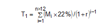
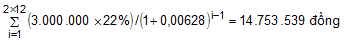
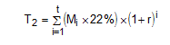
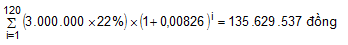
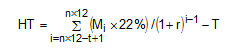
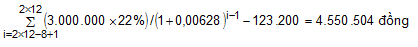
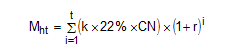
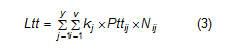

Quyết định 595/QĐ-BHXH thay thế QĐ 959/QĐ-BHXH của BHXH Việt Nam ban hành quy trình thu BHXH, BHYT, BHTN, BHTNLĐ và quản lý sổ BHXH, thẻ BHYT..
|
BẢO HIỂM XÃ HỘI VIỆT NAM -------- |
CỘNG HÒA XÃ HỘI CHỦ NGHĨA VIỆT NAM Độc lập - Tự do - Hạnh phúc --------------- |
| Số: 595/QĐ-BHXH | Hà Nội, ngày 14 tháng 4 năm 2017 |
QUYẾT ĐỊNH
BAN HÀNH QUY TRÌNH THU BẢO HIỂM XÃ HỘI, BẢO HIỂM Y TẾ, BẢO HIỂM THẤT NGHIỆP, BẢO HIỂM TAI NẠN LAO ĐỘNG, BỆNH NGHỀ NGHIỆP; QUẢN LÝ SỔ BẢO HIỂM XÃ HỘI, THẺ BẢO HIỂM Y TẾ
TỔNG GIÁM ĐỐC BẢO HIỂM XÃ HỘI VIỆT NAM
Căn cứ Luật Bảo hiểm y tế số 25/2008/QH12 ngày 14/11/2008; Luật số 46/2014/QH13 ngày 13/6/2014 sửa đổi, bổ sung một số điều của Luật Bảo hiểm y tế;
Căn cứ Luật Việc làm số 38/2013/QH13 ngày 16/11/2013;
Căn cứ Luật An toàn, Vệ sinh lao động số 84/2015/QH13 ngày 25/6/2015;
Căn cứ Nghị định số 01/2016/NĐ-CP ngày 05/01/2016 của Chính phủ quy định chức năng, nhiệm vụ, quyền hạn và cơ cấu tổ chức của Bảo hiểm xã hội Việt Nam;
Xét đề nghị của Trưởng Ban Thu, Trưởng Ban Sổ - Thẻ,
QUYẾT ĐỊNH:
Điều 1. Ban hành kèm theo Quyết định này: Quy trình thu bảo hiểm xã hội, bảo hiểm y tế, bảo hiểm thất nghiệp, bảo hiểm tai nạn lao động, bệnh nghề nghiệp; cấp sổ bảo hiểm xã hội, thẻ bảo hiểm y tế.Điều 2. Quyết định này có hiệu lực thi hành từ ngày 01/5/2017, thay thế Quyết định số 959/QĐ-BHXH ngày 09/9/2015 ban hành Quy định về quản lý thu bảo hiểm xã hội, bảo hiểm y tế, bảo hiểm thất nghiệp; quản lý sổ bảo hiểm xã hội, thẻ bảo hiểm y tế. Các văn bản quy định do Bảo hiểm xã hội Việt Nam ban hành trước đây trái với Quyết định này đều hết hiệu lực.
Điều 3. Trưởng Ban Thu, Trưởng Ban Sổ - Thẻ, Chánh Văn phòng, Thủ trưởng các đơn vị trực thuộc Bảo hiểm xã hội Việt Nam; Giám đốc bảo hiểm xã hội các tỉnh, thành phố trực thuộc Trung ương chịu trách nhiệm thi hành Quyết định này./.
|
Nơi nhận: - Như Điều 3; - VPCP (để b/c TTg CP, các Phó TTg); - Các Bộ: LĐTB&XH, TC, YT, NV, TP, QP, CA; - UBND tỉnh, TP trực thuộc TƯ; - HĐQL - BHXHVN; - TGĐ, các phó TGĐ; - Các đơn vị trực thuộc BHXH VN; - BHXH Bộ QP,CA; - Lưu: VT, ST, BT(20b). |
TỔNG GIÁM ĐỐC
Nguyễn Thị Minh
|
QUY TRÌNH
THU BẢO HIỂM XÃ HỘI, BẢO HIỂM Y TẾ, BẢO HIỂM THẤT NGHIỆP, BẢO HIỂM TAI NẠN LAO ĐỘNG, BỆNH NGHỀ NGHIỆP; QUẢN LÝ SỔ BẢO HIỂM XÃ HỘI, THẺ BẢO HIỂM Y TẾ
(Ban hành kèm theo Quyết định số 595/QĐ-BHXH ngày 14 tháng 4 năm 2017 của Tổng Giám đốc Bảo hiểm xã hội Việt Nam)
Chương I
QUY ĐỊNH CHUNG
Điều 1. Phạm vi áp dụngTHU BẢO HIỂM XÃ HỘI, BẢO HIỂM Y TẾ, BẢO HIỂM THẤT NGHIỆP, BẢO HIỂM TAI NẠN LAO ĐỘNG, BỆNH NGHỀ NGHIỆP; QUẢN LÝ SỔ BẢO HIỂM XÃ HỘI, THẺ BẢO HIỂM Y TẾ
(Ban hành kèm theo Quyết định số 595/QĐ-BHXH ngày 14 tháng 4 năm 2017 của Tổng Giám đốc Bảo hiểm xã hội Việt Nam)
Chương I
QUY ĐỊNH CHUNG
1. Văn bản này hướng dẫn về hồ sơ, quy trình nghiệp vụ, quyền và trách nhiệm của cá nhân, cơ quan, đơn vị và cơ quan bảo hiểm xã hội trong thực hiện thu bảo hiểm xã hội, bảo hiểm y tế, bảo hiểm thất nghiệp, bảo hiểm tai nạn lao động, bệnh nghề nghiệp; cấp, ghi, quản lý và sử dụng sổ bảo hiểm xã hội, thẻ bảo hiểm y tế.
2. Việc quản lý thu bảo hiểm xã hội, bảo hiểm y tế, bảo hiểm thất nghiệp, bảo hiểm tai nạn lao động, bệnh nghề nghiệp; cấp, ghi, quản lý và sử dụng sổ bảo hiểm xã hội, thẻ bảo hiểm y tế trong lực lượng vũ trang do Bộ Quốc phòng, Bộ Công an hướng dẫn, phù hợp với đặc thù của từng Bộ và đồng bộ với các hướng dẫn tại Văn bản này để thực hiện chính sách, chế độ bảo hiểm xã hội, bảo hiểm y tế, bảo hiểm thất nghiệp, bảo hiểm tai nạn lao động, bệnh nghề nghiệp thống nhất trong toàn quốc.
Điều 2. Giải thích từ ngữ
1. Các từ viết tắt
1.1. BHXH: là chữ viết tắt của cụm từ "bảo hiểm xã hội".
1.2. BHTN: là chữ viết tắt của cụm từ "bảo hiểm thất nghiệp".
1.3. BHYT: là chữ viết tắt của cụm từ "bảo hiểm y tế".
1.4. BHTNLĐ, BNN: là viết tắt của cụm từ “bảo hiểm tai nạn lao động, bệnh nghề nghiệp”.
1.5. UBND: là chữ viết tắt của cụm từ "Ủy ban nhân dân".
1.6. Đại lý thu: là viết tắt của từ "đại lý thu BHXH, BHYT".
1.7. KH-TC: là viết tắt của từ "Kế hoạch - Tài chính".
1.8. BHXH tỉnh: là tên chung cho Bảo hiểm xã hội tỉnh, thành phố trực thuộc Trung ương.
1.9. BHXH huyện: là tên chung cho Bảo hiểm xã hội quận, huyện, thị xã, thành phố thuộc tỉnh.
1.10. HĐLĐ: viết tắt của “hợp đồng lao động”.
1.11. HĐLV: viết tắt của “hợp đồng làm việc”.
2. Giải thích từ ngữ
Trong Văn bản này, các từ ngữ dưới đây được hiểu như sau:
2.1. Đơn vị: gọi chung cho cơ quan, đơn vị, doanh nghiệp, tổ chức, cá nhân sử dụng lao động thuộc đối tượng tham gia BHXH bắt buộc, BHYT, BHTN, BHTNLĐ, BNN.
2.2. Người tham gia: gọi chung cho người lao động tham gia BHXH bắt buộc, BHYT, BHTN, BHTNLĐ, BNN; người tham gia BHXH tự nguyện, người tham gia BHYT; trừ trường hợp nêu cụ thể.
2.3. Cơ quan quản lý đối tượng: là cơ quan có thẩm quyền xác định và phê duyệt sách người tham gia như người thuộc hộ gia đình nghèo, người có công với cách mạng, thân nhân người có công với cách mạng, người thuộc diện hưởng bảo trợ xã hội hằng tháng, cựu chiến binh, trẻ em ... trên cơ sở phân cấp của UBND cấp tỉnh.
2.4. Truy thu: là việc cơ quan BHXH thu khoản tiền phải đóng BHXH, BHYT, BHTN, BHTNLĐ, BNN của trường hợp trốn đóng, đóng không đủ số người thuộc diện bắt buộc tham gia, đóng không đủ số tiền phải đóng theo quy định, chiếm dụng tiền đóng, hưởng BHXH, BHYT, BHTN, BHTNLĐ, BNN.
2.5. Hoàn trả: là việc cơ quan BHXH chuyển trả lại số tiền được xác định không phải tiền đóng BHXH, BHYT, BHTN, BHTNLĐ, BNN hoặc đóng thừa khi ngừng giao dịch với cơ quan BHXH; đóng trùng cho cơ quan, đơn vị, cá nhân đã nộp cho cơ quan BHXH.
2.6. Bộ phận một cửa: là tên gọi chung cho bộ phận một cửa của BHXH huyện hoặc bộ phận một cửa thuộc Phòng Tiếp nhận và Trả kết quả thủ tục hành chính của BHXH tỉnh.
2.7. Bản sao: là bản chụp từ bản chính hoặc bản đánh máy có nội dung đầy đủ, chính xác như nội dung ghi trong sổ gốc.
Đơn vị, người tham gia BHXH, BHYT, BHTN, BHTNLĐ, BNN khi nộp "bản sao" theo hướng dẫn tại Văn bản này phải kèm theo bản chính để cơ quan BHXH kiểm tra, đối chiếu và trả lại cho đơn vị, người tham gia.
2.8. Bản chính: là những giấy tờ, văn bản do cơ quan, tổ chức có thẩm quyền cấp lần đầu, cấp lại, cấp khi đăng ký lại; những giấy tờ, văn bản do cá nhân tự lập có xác nhận và đóng dấu của cơ quan, tổ chức có thẩm quyền.
2.9. Văn bản chứng thực: là giấy tờ, văn bản, hợp đồng, giao dịch đã được chứng thực theo quy định của pháp luật.
2.10. Thành phần hồ sơ quy định tại văn bản này nếu không quy định là bản chính thì có thể nộp bản chính hoặc bản sao kèm bản chính để đối chiếu, bản sao được chứng thực hoặc bản sao được cấp từ sổ gốc.
2.11. Nợ BHXH, BHYT, BHTN, BHTNLĐ, BNN: là tiền phải đóng BHXH, BHYT, BHTN, BHTNLĐ, BNN đối với người lao động theo quy định của pháp luật nhưng đơn vị chưa đóng cho cơ quan BHXH. Tiền nợ bao gồm cả tiền lãi chậm đóng theo quy định của pháp luật nhưng đơn vị chưa đóng.
2.12. Xác nhận sổ BHXH: là ghi thời gian đã đóng BHXH, BHTN, BHTNLĐ, BNN trên sổ BHXH của người tham gia.
2.13. Tên Tổ nghiệp vụ của BHXH huyện tại Văn bản này là Tên nghiệp vụ theo quy định của BHXH Việt Nam (bao gồm cả các Tổ nghiệp vụ gộp nhiều chức năng, nhiệm vụ).
2.14. Các chương, mục, điều, khoản, điểm, tiết và mẫu biểu dẫn chiếu trong Văn bản này mà không ghi rõ nguồn thì được hiểu là của Văn bản này.
Điều 3. Phân cấp quản lý
1. Thu BHXH, BHYT, BHTN, BHTNLĐ, BNN
1.1. BHXH huyện:
a) Thu tiền đóng BHXH, BHYT, BHTN, BHTNLĐ, BNN của đơn vị đóng trụ sở trên địa bàn huyện theo phân cấp của BHXH tỉnh.
b) Giải quyết các trường hợp truy thu hoàn trả tiền đóng BHXH, BHYT, BHTN, BHTNLĐ, BNN; tạm dừng đóng vào quỹ hưu trí và tử tuất đối với đơn vị, người tham gia BHXH, BHYT, BHTN, BHTNLĐ, BNN do BHXH huyện trực tiếp thu.
c) Thu tiền hỗ trợ mức đóng BHYT, hỗ trợ mức đóng BHXH tự nguyện của ngân sách nhà nước theo phân cấp quản lý ngân sách nhà nước.
d) Thu tiền đóng BHXH tự nguyện; thu tiền đóng BHYT của người tham gia BHYT cư trú trên địa bàn huyện.
đ) Thu tiền đóng BHYT của đối tượng do ngân sách nhà nước đóng; ghi thu tiền đóng BHYT của đối tượng do quỹ BHXH, quỹ BHTN đảm bảo, ngân sách trung ương hỗ trợ học sinh, sinh viên đang theo học tại cơ sở giáo dục do Bộ, cơ quan Trung ương quản lý theo phân cấp của BHXH tỉnh.
1.2. BHXH tỉnh:
a) Thu tiền đóng BHXH, BHYT, BHTN, BHTNLĐ, BNN của các đơn vị chưa phân cấp cho BHXH huyện.
b) Giải quyết các trường hợp truy thu, hoàn trả tiền đóng BHXH, BHYT, BHTN, BHTNLĐ, BNN; tạm dừng đóng vào quỹ hưu trí và tử tuất đối với đơn vị, người tham gia BHXH, BHYT, BHTN, BHTNLĐ, BNN do BHXH tỉnh trực tiếp thu.
d) Thu tiền hỗ trợ mức đóng BHYT, hỗ trợ mức đóng BHXH tự nguyện của ngân sách nhà nước.
c) Thu tiền đóng BHYT của đối tượng do ngân sách nhà nước đóng; ghi thu tiền đóng BHYT của đối tượng do quỹ BHXH, quỹ BHTN đảm bảo, ngân sách trung ương hỗ trợ học sinh, sinh viên đang theo học tại cơ sở giáo dục do Bộ, cơ quan Trung ương quản lý.
1.3. BHXH Việt Nam:
a) Thu tiền của ngân sách trung ương đóng, hỗ trợ mức đóng BHYT, tiền hỗ trợ quỹ BHTN.
b) Thu tiền của ngân sách trung ương đóng BHXH cho người có thời gian công tác trước năm 1995.
2. Cấp, ghi và xác nhận trên sổ BHXH
2.1. BHXH huyện:
a) Cấp mới, cấp lại, điều chỉnh, xác nhận sổ BHXH và ghi thời gian đóng BHTN chưa hưởng trợ cấp thất nghiệp, ghi thời gian đóng BHXH, BHTN, BHTNLĐ, BNN cho người tham gia tại đơn vị do BHXH huyện trực tiếp thu, người đang bảo lưu thời gian đóng BHXH, BHTN, BHTNLĐ, BNN.
b) Chuyển BHXH tỉnh: Hồ sơ đề nghị cộng nối thời gian không phải đóng BHXH và điều chỉnh làm nghề hoặc công việc nặng nhọc, độc hại, nguy hiểm hoặc đặc biệt nặng nhọc, độc hại, nguy hiểm thời gian trước ngày 01/01/1995 (trừ trường hợp phân cấp cho BHXH huyện).
2.2. BHXH tỉnh:
a) Cấp mới, cấp lại, điều chỉnh, xác nhận sổ BHXH và ghi thời gian đóng BHTN chưa hưởng trợ cấp thất nghiệp, ghi thời gian đóng BHXH, BHTN, BHTNLĐ, BNN cho người tham gia tại đơn vị do BHXH tỉnh trực tiếp thu, người đã hưởng BHXH hoặc đang bảo lưu thời gian đóng BHXH, BHTN, BHTNLĐ, BNN.
b) Thẩm định hồ sơ đề nghị cộng nối thời gian không phải đóng BHXH và điều chỉnh làm nghề hoặc công việc nặng nhọc, độc hại, nguy hiểm hoặc đặc biệt nặng nhọc, độc hại, nguy hiểm thời gian trước ngày 01/01/1995.
3. Cấp thẻ BHYT
3.1. BHXH huyện: Cấp mới, cấp lại, đổi thẻ BHYT cho người tham gia BHYT do BHXH huyện thu.
3.2. BHXH tỉnh: Cấp mới, cấp lại, đổi thẻ BHYT cho người tham gia BHYT tại các đơn vị do BHXH tỉnh trực tiếp thu và người hưởng trợ cấp thất nghiệp trong tỉnh.
4. BHXH tỉnh căn cứ điều kiện cụ thể của địa phương để phân cấp thu cho BHXH huyện, đến hết năm 2017 phân cấp tối thiểu 90% tổng số đơn vị quản lý.
Chương II
ĐỐI TƯỢNG, MỨC ĐÓNG VÀ PHƯƠNG THỨC ĐÓNG
Mục 1. BẢO HIỂM XÃ HỘI BẮT BUỘC
ĐỐI TƯỢNG, MỨC ĐÓNG VÀ PHƯƠNG THỨC ĐÓNG
Mục 1. BẢO HIỂM XÃ HỘI BẮT BUỘC
1. Người lao động là công dân Việt Nam thuộc đối tượng tham gia BHXH bắt buộc, bao gồm:
1.1. Người làm việc theo HĐLĐ không xác định thời hạn, HĐLĐ xác định thời hạn, HĐLĐ theo mùa vụ hoặc theo một công việc nhất định có thời hạn từ đủ 03 tháng đến dưới 12 tháng, kể cả HĐLĐ được ký kết giữa đơn vị với người đại diện theo pháp luật của người dưới 15 tuổi theo quy định của pháp luật về lao động;
1.2. Người làm việc theo HĐLĐ có thời hạn từ đủ 01 tháng đến dưới 03 tháng (thực hiện từ ngày 01/01/2018);
1.3. Cán bộ, công chức, viên chức theo quy định của pháp luật về cán bộ, công chức và viên chức;
1.4. Công nhân quốc phòng, công nhân công an, người làm công tác khác trong tổ chức cơ yếu đối với trường hợp BHXH Bộ Quốc phòng, BHXH Công an nhân dân bàn giao cho BHXH tỉnh;
1.5. Người quản lý doanh nghiệp, người quản lý điều hành hợp tác xã có hưởng tiền lương;
1.6. Người hoạt động không chuyên trách ở xã, phường, thị trấn;
1.7. Người đi làm việc ở nước ngoài theo hợp đồng quy định tại Luật Người lao động Việt Nam đi làm việc ở nước ngoài theo hợp đồng tham gia bảo hiểm xã hội bắt buộc theo quy định tại Nghị định số 115/2015/NĐ-CP ngày 11/11/2015 của Chính phủ được áp dụng đối với các hợp đồng sau:
a) Hợp đồng đưa người lao động đi làm việc ở nước ngoài với doanh nghiệp hoạt động dịch vụ đưa người lao động đi làm việc ở nước ngoài, tổ chức sự nghiệp được phép đưa người lao động đi làm việc ở nước ngoài;
b) Hợp đồng đưa người lao động đi làm việc ở nước ngoài với doanh nghiệp trúng thầu, nhận thầu hoặc tổ chức, cá nhân đầu tư ra nước ngoài có đưa người lao động đi làm việc ở nước ngoài;
c) Hợp đồng đưa người lao động đi làm việc ở nước ngoài theo hình thức thực tập nâng cao tay nghề với doanh nghiệp đưa người lao động đi làm việc theo hình thức thực tập nâng cao tay nghề;
d) Hợp đồng cá nhân.
1.8. Người hưởng chế độ phu nhân hoặc phu quân tại cơ quan đại diện Việt Nam ở nước ngoài quy định tại Khoản 4 Điều 123 Luật BHXH;
1.9. Người lao động quy định tại các Điểm 1.1, 1.2, 1.3, 1.4, 1.5 và Điểm 1.6 Khoản này được cử đi học, thực tập, công tác trong và ngoài nước mà vẫn hưởng tiền lương ở trong nước thuộc diện tham gia BHXH bắt buộc;
2. Người lao động là công dân nước ngoài vào làm việc tại Việt Nam có giấy phép lao động hoặc chứng chỉ hành nghề hoặc giấy phép hành nghề do cơ quan có thẩm quyền của Việt Nam cấp (thực hiện từ ngày 01/01/2018 theo quy định của Chính phủ).
3. Người sử dụng lao động tham gia BHXH bắt buộc bao gồm: cơ quan nhà nước, đơn vị sự nghiệp, đơn vị vũ trang nhân dân; tổ chức chính trị, tổ chức chính trị - xã hội, tổ chức chính trị xã hội - nghề nghiệp, tổ chức xã hội - nghề nghiệp, tổ chức xã hội khác; cơ quan, tổ chức nước ngoài, tổ chức quốc tế hoạt động trên lãnh thổ Việt Nam; doanh nghiệp, hợp tác xã, hộ kinh doanh cá thể, tổ hợp tác, tổ chức khác và cá nhân có thuê mướn, sử dụng lao động theo HĐLĐ.
4. Người lao động quy định tại các Điểm 1.1 và 1.2 Khoản 1 Điều này là người giúp việc gia đình và người lao động quy định tại Khoản 1 Điều này mà đang hưởng lương hưu, trợ cấp BHXH hằng tháng và trợ cấp hằng tháng dưới đây thì không thuộc đối tượng tham gia BHXH bắt buộc:
a) Người đang hưởng lương hưu hằng tháng;
b) Người đang hưởng trợ cấp hằng tháng theo quy định tại Nghị định số 09/1998/NĐ-CP ngày 23/01/1998 của Chính phủ sửa đổi, bổ sung Nghị định số 50/CP ngày 26/7/1995 của Chính phủ về chế độ sinh hoạt phí đối với cán bộ xã, phường, thị trấn;
c) Người đang hưởng trợ cấp mất sức lao động hằng tháng;
d) Người đang hưởng trợ cấp hằng tháng theo quy định tại Quyết định số 91/2000/QĐ-TTg ngày 04/8/2000 của Thủ tướng Chính phủ về việc trợ cấp cho những người đã hết tuổi lao động tại thời điểm ngừng hưởng trợ cấp mất sức lao động hàng tháng (Quyết định số 91/2000/QĐ-TTg); Quyết định số 613/QĐ-TTg ngày 06/5/2010 của Thủ tướng Chính phủ về việc trợ cấp hàng tháng cho những người có từ đủ 15 năm đến dưới 20 năm công tác thực tế đã hết thời hạn hưởng trợ cấp mất sức lao động (Quyết định số 613/QĐ-TTg);
đ) Quân nhân, Công an nhân dân, người làm công tác cơ yếu đang hưởng chế độ trợ cấp hằng tháng theo quy định tại các Quyết định của Thủ tướng Chính phủ: Quyết định số 142/2008/QĐ-TTg ngày 27/10/2008 về thực hiện chế độ đối với quân nhân tham gia kháng chiến chống Mỹ cứu nước có dưới 20 năm công tác trong quân đội đã phục viên, xuất ngũ về địa phương; Quyết định số 38/2010/QĐ-TTg ngày 06/5/2010 về việc sửa đổi, bổ sung Quyết định số 142/2008/QĐ-TTg ngày 27/10/2008 về việc thực hiện chế độ đối với quân nhân tham gia kháng chiến chống Mỹ cứu nước có dưới 20 năm công tác trong quân đội đã phục viên, xuất ngũ về địa phương; Quyết định số 53/2010/QĐ-TTg ngày 20/8/2010 quy định về chế độ đối với cán bộ, chiến sĩ Công an nhân dân tham gia kháng chiến chống Mỹ có dưới 20 năm công tác trong Công an nhân dân đã thôi việc, xuất ngũ về địa phương; Quyết định số 62/2011/QĐ-TTg ngày 09/11/2011 về chế độ, chính sách đối với đối tượng tham gia chiến tranh bảo vệ Tổ quốc, làm nhiệm vụ quốc tế ở Căm-pu-chia, giúp bạn Lào sau ngày 30/4/1975 đã phục viên, xuất ngũ, thôi việc.
Điều 5. Mức đóng và trách nhiệm đóng theo quy định tại Điều 85, Điều 86 Luật BHXH và các văn bản hướng dẫn thi hành, cụ thể như sau:
1. Mức đóng và trách nhiệm đóng của người lao động
1.1. Người lao động quy định tại Điểm 1.1, 1.2, 1.3, 1.4, 1.5, và Tiết b Điểm 1.7 Khoản 1 Điều 4, hằng tháng đóng bằng 8% mức tiền lương tháng vào quỹ hưu trí và tử tuất.
1.2. Người lao động quy định tại Điểm 1.6 Khoản 1 Điều 4, hằng tháng đóng bằng 8% mức lương cơ sở vào quỹ hưu trí và tử tuất.
1.3. Người lao động quy định tại Tiết a, c và Tiết d Điểm 1.7 Khoản 1 Điều 4: Mức đóng hằng tháng vào quỹ hưu trí và tử tuất bằng 22% mức tiền lương tháng đóng BHXH của người lao động trước khi đi làm việc ở nước ngoài, đối với người lao động đã có quá trình tham gia BHXH bắt buộc; bằng 22% của 02 lần mức lương cơ sở đối với người lao động chưa tham gia BHXH bắt buộc hoặc đã tham gia BHXH bắt buộc nhưng đã hưởng BHXH một lần.
1.4. Người lao động quy định tại Điểm 1.8 Khoản 1, Khoản 2 Điều 4: Mức đóng hằng tháng vào quỹ hưu trí và tử tuất bằng 22% mức tiền lương tháng đóng BHXH của người lao động trước đó đối với người lao động đã có quá trình tham gia BHXH bắt buộc; bằng 22% của 02 lần mức lương cơ sở đối với người lao động chưa tham gia BHXH bắt buộc hoặc đã tham gia BHXH bắt buộc nhưng đã hưởng BHXH một lần.
1.5. Người lao động quy định tại Khoản 2 Điều 4, thực hiện theo quy định của Chính phủ và hướng dẫn của BHXH Việt Nam.
1.6. Người lao động quy định tại Khoản 1 Điều 4 và người đang bảo lưu thời gian đóng BHXH bắt buộc còn thiếu tối đa 06 tháng để đủ điều kiện hưởng lương hưu hoặc trợ cấp tuất hằng tháng: mức đóng bằng 22% mức tiền lương tháng đóng BHXH bắt buộc của người lao động trước khi nghỉ việc hoặc chết vào quỹ hưu trí và tử tuất.
2. Mức đóng và trách nhiệm đóng của đơn vị
2.1. Đơn vị hằng tháng đóng trên quỹ tiền lương đóng BHXH của người lao động quy định tại các Điểm 1.1, 1.2, 1.3, 1.4, 1.5 và Tiết b Điểm 1.7 Khoản 1 Điều 4 như sau:
a) 3% vào quỹ ốm đau và thai sản;
b) 14% vào quỹ hưu trí và tử tuất.
2.2. Đơn vị hằng tháng đóng 14% mức lương cơ sở vào quỹ hưu trí và tử tuất cho người lao động quy định tại điểm 1.6 Khoản 1 Điều 4.
Điều 6. Tiền lương tháng đóng BHXH bắt buộc theo quy định tại Điều 89 Luật BHXH và các văn bản hướng dẫn thi hành, cụ thể như sau:
1. Tiền lương do Nhà nước quy định
1.1. Người lao động thuộc đối tượng thực hiện chế độ tiền lương do Nhà nước quy định thi tiền lương tháng đóng BHXH bắt buộc là tiền lương theo ngạch, bậc, cấp bậc quân hàm và các khoản phụ cấp chức vụ, phụ cấp thâm niên vượt khung, phụ cấp thâm niên nghề (nếu có). Tiền lương này tính trên mức lương cơ sở.
Tiền lương tháng đóng BHXH bắt buộc quy định tại điểm này bao gồm cả hệ số chênh lệch bảo lưu theo quy định của pháp luật về tiền lương.
1.2. Người lao động quy định tại Điểm 1.6 Khoản 1 Điều 4 thì tiền lương tháng đóng BHXH là mức lương cơ sở.
2. Tiền lương do đơn vị quyết định
2.1. Từ ngày 01/01/2016 đến ngày 31/12/2017, tiền lương tháng đóng BHXH bắt buộc là mức lương và phụ cấp lương theo quy định tại Khoản 1 và Điểm a Khoản 2 Điều 4 của Thông tư số 47/2015/TT-BLĐTBXH ngày 16/11/2015 của Bộ Lao động - Thương binh và Xã hội hướng dẫn thực hiện một số điều về HĐLĐ, kỷ luật lao động, trách nhiệm vật chất của Nghị định số 05/2015/NĐ-CP ngày 12/01/2015 của Chính phủ quy định chi tiết và hướng dẫn thi hành một số nội dung của Bộ luật lao động (Nghị định số 05/2014/NĐ-CP).
Phụ cấp lương theo quy định tại Điểm a Khoản 2 Điều 4 của Thông tư số 47/2015/TT-BLĐTBXH là các khoản phụ cấp lương để bù đắp yếu tố về điều kiện lao động, tính chất phức tạp công việc, điều kiện sinh hoạt, mức độ thu hút lao động mà mức lương thỏa thuận trong HĐLĐ chưa được tính đến hoặc tính chưa đầy đủ như phụ cấp chức vụ, chức danh; phụ cấp trách nhiệm; phụ cấp nặng nhọc, độc hại, nguy hiểm; phụ cấp thâm niên; phụ cấp khu vực; phụ cấp lưu động; phụ cấp thu hút và các phụ cấp có tính chất tương tự.
2.2. Từ ngày 01/01/2018 trở đi, tiền lương tháng đóng BHXH bắt buộc là mức lương, phụ cấp lương theo quy định tại Điểm 2.1 Khoản này và các khoản bổ sung khác theo quy định tại Điểm a Khoản 3 Điều 4 của Thông tư số 47/2015/TT-BLĐTBXH.
2.3. Tiền lương tháng đóng BHXH bắt buộc không bao gồm các khoản chế độ và phúc lợi khác, như tiền thưởng theo quy định tại Điều 103 của Bộ luật lao động, tiền thưởng sáng kiến; tiền ăn giữa ca; các khoản hỗ trợ xăng xe, điện thoại, đi lại, tiền nhà ở, tiền giữ trẻ, nuôi con nhỏ; hỗ trợ khi người lao động có thân nhân bị chết, người lao động có người thân kết hôn, sinh nhật của người lao động, trợ cấp cho người lao động gặp hoàn cảnh khó khăn khi bị tai nạn lao động, bệnh nghề nghiệp và các khoản hỗ trợ, trợ cấp khác ghi thành mục riêng trong HĐLĐ theo 11 Điều 4 của Nghị định số 05/2015/NĐ-CP.
2.4. Tiền lương tháng đóng BHXH bắt buộc đối với người quản lý doanh nghiệp có hưởng tiền lương quy định tại Điểm đ Khoản 1 Điều 2 của Nghị định số 115/2015/NĐ-CP là tiền lương do doanh nghiệp quyết định, trừ viên chức quản lý chuyên trách trong công ty trách nhiệm hữu hạn một thành viên do nhà nước làm chủ sở hữu.
Tiền lương tháng đóng BHXH bắt buộc đối với người quản lý điều hành hợp tác xã có hưởng tiền lương quy định tại Điểm đ Khoản 1 Điều 2 Nghị định số 115/2015/NĐ-CP là tiền lương do đại hội thành viên quyết định.
2.5. Tiền lương tháng đóng BHXH bắt buộc đối với người đại diện phần vốn nhà nước không chuyên trách tại các tập đoàn kinh tế, tổng công ty, công ty nhà nước sau cổ phần hóa; công ty trách nhiệm hữu hạn hai thành viên trở lên là tiền lương theo chế độ tiền lương của cơ quan, tổ chức đang công tác trước khi được cử làm đại diện phần vốn nhà nước.
Tiền lương tháng đóng BHXH bắt buộc đối với người đại diện phần vốn nhà nước chuyên trách tại các tập đoàn, tổng công ty, công ty là tiền lương theo chế độ tiền lương do tập đoàn, tổng công ty, công ty quyết định.
2.6. Mức tiền lương tháng đóng BHXH bắt buộc quy định tại Khoản này không thấp hơn mức lương tối thiểu vùng tại thời điểm đóng đối với người lao động làm công việc hoặc chức danh giản đơn nhất trong điều kiện lao động bình thường.
a) Người lao động làm công việc hoặc chức danh đòi hỏi lao động qua đào tạo, học nghề (kể cả lao động do doanh nghiệp tự dạy nghề) phải cao hơn ít nhất 7% so với mức lương tối thiểu vùng;
b) Người lao động làm công việc hoặc chức danh có điều kiện lao động nặng nhọc, độc hại, nguy hiểm phải cao hơn ít nhất 5%; công việc hoặc chức danh có điều kiện lao động đặc biệt nặng nhọc, độc hại, nguy hiểm phải cao hơn ít nhất 7% so với mức lương của công việc hoặc chức danh có độ phức tạp tương đương, làm việc trong điều kiện lao động bình thường.
3. Mức tiền lương tháng đóng BHXH bắt buộc quy định tại Điều này cao hơn 20 tháng lương cơ sở thì mức tiền lương tháng đóng BHXH bắt buộc bằng 20 tháng lương cơ sở.
Điều 7. Phương thức đóng theo quy định tại Điều 85, Điều 86 Luật BHXH và các văn bản hướng dẫn thi hành, cụ thể như sau:
1. Đóng hằng tháng
Hằng tháng, chậm nhất đến ngày cuối cùng của tháng, đơn vị trích tiền đóng BHXH bắt buộc trên quỹ tiền lương tháng của những người lao động tham gia BHXH bắt buộc, đồng thời trích từ tiền lương tháng đóng BHXH bắt buộc của từng người lao động theo mức quy định, chuyển cùng một lúc vào tài khoản chuyên thu của cơ quan BHXH mở tại ngân hàng hoặc Kho bạc Nhà nước.
2. Đóng 03 tháng hoặc 06 tháng một lần
Đơn vị là doanh nghiệp, hợp tác xã, hộ kinh doanh cá thể, tổ hợp tác hoạt động trong lĩnh vực nông nghiệp, lâm nghiệp, ngư nghiệp, diêm nghiệp trả lương theo sản phẩm, theo khoán thì đóng theo phương thức hằng tháng hoặc 03 tháng, 06 tháng một lần. Chậm nhất đến ngày cuối cùng của phương thức đóng, đơn vị phải chuyển đủ tiền vào quỹ BHXH.
3. Đóng theo địa bàn
3.1. Đơn vị đóng trụ sở chính ở địa bàn tỉnh nào thì đăng ký tham gia đóng BHXH tại địa bàn tỉnh đó theo phân cấp của BHXH tỉnh.
3.2. Chi nhánh của doanh nghiệp hoạt động tại địa bàn nào thì đóng BHXH tại địa bàn đó.
4. Đối với người lao động quy định tại Điểm 1.7 Khoản 1 Điều 4, phương thức đóng là 03 tháng, 06 tháng, 12 tháng một lần hoặc đóng trước một lần theo thời hạn ghi trong hợp đồng đưa người lao động đi làm việc ở nước ngoài. Người lao động đóng trực tiếp cho cơ quan BHXH trước khi đi làm việc ở nước ngoài hoặc đóng qua đơn vị, tổ chức sự nghiệp đưa người lao động đi làm việc ở nước ngoài.
4.1. Trường hợp đóng qua đơn vị, tổ chức sự nghiệp đưa người lao động đi làm việc ở nước ngoài thi đơn vị, tổ chức sự nghiệp thu, nộp BHXH cho người lao động và đăng ký phương thức đóng cho cơ quan BHXH.
4.2. Trường hợp người lao động được gia hạn hợp đồng hoặc ký HĐLĐ mới ngay tại nước tiếp nhận lao động thì thực hiện đóng BHXH theo phương thức quy định tại Điều này hoặc truy nộp cho cơ quan BHXH sau khi về nước.
5. Đối với người lao động quy định tại Điểm 1.8 Khoản 1 Điều 4 thực hiện đóng hằng tháng, 03 tháng hoặc 06 tháng một lần thông qua đơn vị quản lý cán bộ, công chức có phu nhân hoặc phu quân để đóng vào quỹ hưu trí và tử tuất.
6. Đối với trường hợp đóng cho thời gian còn thiếu không quá 06 tháng quy định tại Điểm 1.5 Khoản 1 Điều 5
6.1. Người lao động đóng một lần cho số tháng còn thiếu thông qua đơn vị trước khi nghỉ việc.
6.2. Người đang bảo lưu thời gian đóng BHXH bắt buộc hoặc thân nhân của người lao động chết đóng một lần cho số tháng còn thiếu tại cơ quan BHXH huyện nơi cư trú.
Mục 2. BẢO HIỂM XÃ HỘI TỰ NGUYỆN
Điều 8. Đối tượng tham gia theo quy định tại Điều 2 Luật BHXH và các văn bản hướng dẫn thi hành, cụ thể như sau:
1. Người tham gia BHXH tự nguyện là công dân Việt Nam từ đủ 15 tuổi trở lên và không thuộc đối tượng tham gia BHXH bắt buộc theo quy định của pháp luật về BHXH, bao gồm:
1.1. Người lao động làm việc theo HĐLĐ có thời hạn dưới 03 tháng trước ngày 01/01/2018; người lao động làm việc theo HĐLĐ có thời hạn dưới 01 tháng từ ngày 01/01/2018 trở đi;
1.2. Người hoạt động không chuyên trách ở thôn, ấp, bản, sóc, làng, tổ dân phố, khu, khu phố;
1.3. Người lao động giúp việc gia đình;
1.4. Người tham gia các hoạt động sản xuất, kinh doanh, dịch vụ không hưởng tiền lương;
1.5. Xã viên không hưởng tiền lương, tiền công làm việc trong hợp tác xã, liên hiệp hợp tác xã;
1.6. Người nông dân, người lao động tự tạo việc làm bao gồm những người tự tổ chức hoạt động lao động để có thu nhập cho bản thân và gia đình;
1.7. Người lao động đã đủ điều kiện về tuổi đời nhưng chưa đủ điều kiện về thời gian đóng để hưởng lương hưu theo quy định của pháp luật về BHXH;
1.8. Người tham gia khác.
2. Cơ quan, tổ chức và cá nhân có liên quan đến BHXH tự nguyện.
Điều 9. Phương thức đóng theo quy định tại Điều 87 Luật BHXH và các văn bản hướng dẫn thi hành, cụ thể như sau:
1. Người tham gia BHXH tự nguyện được chọn một trong các phương thức đóng sau đây để đóng vào quỹ hưu trí và tử tuất:
1.1. Đóng hằng tháng;
1.2. Đóng 03 tháng một lần;
1.3. Đóng 06 tháng một lần;
1.4. Đóng 12 tháng một lần;
1.5. Đóng một lần cho nhiều năm về sau nhưng không quá 5 năm một lần;
1.6. Đóng một lần cho những năm còn thiếu đối với người tham gia BHXH đã đủ điều kiện về tuổi để hưởng lương hưu theo quy định nhưng thời gian đóng BHXH còn thiếu không quá 10 năm (120 tháng) thì được đóng cho đủ 20 năm để hưởng lương hưu.
Ví dụ 1: Bà Lan Anh tính đến tháng 3/2017 đủ 55 tuổi và có 15 năm 9 tháng đóng BHXH. Bà Lan Anh có nguyện vọng tiếp tục tham gia BHXH tự nguyện để đủ điều kiện hưởng lương hưu hằng tháng và lựa chọn phương thức đóng hằng tháng. Đến tháng 4/2017 bà A 55 tuổi 1 tháng và có 15 năm 10 tháng đóng BHXH. Tháng 5/2017 bà A lựa chọn phương thức đóng một lần cho 4 năm 2 tháng còn thiếu và đóng ngay trong tháng này. Như vậy, tính đến hết tháng 5/2017, bà A 55 tuổi 2 tháng và có 20 năm đóng BHXH, đủ điều kiện hưởng lương hưu theo quy định. Thời điểm tính hưởng lương hưu của bà A kể từ tháng 6/2017.
2. Trường hợp người tham gia BHXH đã đủ tuổi nghỉ hưu theo quy định mà thời gian đã đóng BHXH còn thiếu trên 10 năm nếu có nguyện vọng thì tiếp tục đóng BHXH tự nguyện theo một trong các phương thức quy định tại các Điểm 1.1, 1.2, 1.3, 1.4 và 1.5 Khoản 1 Điều này cho đến khi thời gian đóng BHXH còn thiếu không quá 10 năm thì được đóng một lần cho những năm còn thiếu để hưởng lương hưu theo quy định tại Điểm 1.6. Khoản 1 Điều này.
Ví dụ 2: Ông Quốc Huy tính đến tháng 8/2016 đủ 60 tuổi và có 8 năm đóng BHXH. Ông Quốc Huy có nguyện vọng tiếp tục tham gia BHXH tự nguyện để đủ điều kiện hưởng lương hưu hằng tháng và lựa chọn phương thức đóng 2 năm một lần cho giai đoạn từ tháng 9/2016 đến tháng 8/2018. Tháng 9/2018 ông B có đủ 10 năm đóng BHXH và đóng một lần cho 10 năm còn thiếu. Như vậy, tính đến hết tháng 9/2018, ông B có 20 năm đóng BHXH, đủ điều kiện hưởng lương hưu theo quy định. Thời điểm tính hưởng lương hưu của ông B kể từ tháng 10/2018.
3. Thay đổi phương thức đóng BHXH tự nguyện
3.1. Người đang tham gia BHXH tự nguyện được thay đổi phương thức đóng BHXH tự nguyện. Việc thay đổi phương thức đóng BHXH tự nguyện được thực hiện ít nhất là sau khi thực hiện xong phương thức đóng đã chọn trước đó.
3.2. Trường hợp người tham gia BHXH tự nguyện đã lựa chọn một trong các phương thức đóng quy định tại Khoản 1 Điều này mà đủ điều kiện đóng một lần cho những năm còn thiếu (nam đủ 60 tuổi, nữ đủ 55 tuổi và thời gian đóng BHXH còn thiếu tối đa 10 năm) thì được lựa chọn đóng một lần cho những năm còn thiếu để hưởng lương hưu ngay khi đủ điều kiện mà không phải chờ thực hiện xong phương thức đóng đã chọn trước đó.
Ví dụ 3: Ông Đức Long tham gia BHXH tự nguyện từ tháng 8/2016 và đăng ký với cơ quan BHXH theo phương thức đóng 03 tháng một lần. Sau đó ông C có nguyện vọng được chuyển phương thức đóng sang 6 tháng một lần. Thì việc thay đổi trên được thực hiện sớm nhất là từ tháng 11/2016. Tuy nhiên, tháng 01/2017 ông C đủ 60 tuổi và đã có thời gian đóng BHXH là 10 năm thì ông C được lựa chọn đóng một lần cho những năm còn thiếu tại tháng 01/2017 để hưởng lương hưu.
Điều 10. Mức đóng theo quy định tại Điều 87 Luật BHXH và các văn bản hướng dẫn thi hành, cụ thể như sau:
1. Mức đóng hằng tháng của người tham gia BHXH tự nguyện như sau:
Mdt = 22% x Mtnt
Trong đó:- Mdt: Mức đóng BHXH tự nguyện hằng tháng.
- Mtnt: mức thu nhập tháng do người tham gia BHXH tự nguyện lựa chọn.
Mtnt = CN + m x 50.000 (đồng/tháng)
Trong đó:- CN: Mức chuẩn hộ nghèo của khu vực nông thôn tại thời điểm đóng (đồng/tháng).
- m: Tham số tự nhiên có giá trị từ 0 đến n.
Mức thu nhập tháng người tham gia BHXH tự nguyện lựa chọn thấp nhất bằng mức chuẩn hộ nghèo của khu vực nông thôn, cao nhất bằng 20 lần mức lương cơ sở.
Ví dụ 4: Bà Lan Anh nêu ở ví dụ 1 đăng ký tham gia BHXH tự nguyện với mức thu nhập tháng lựa chọn là 4.000.000 đồng/tháng. Mức đóng BHXH tự nguyện tháng 4/2017 của bà A sẽ là 880.000 đồng (22% x 4.000.000 đồng).
2. Mức đóng 03 tháng hoặc 06 tháng hoặc 12 tháng một lần được xác định bằng mức đóng hằng tháng theo quy định tại Khoản 1 Điều này nhân với 3 đối với phương thức đóng 03 tháng; nhân với 6 đối với phương thức đóng 06 tháng; nhân với 12 đối với phương thức đóng 12 tháng một lần.
Ví dụ 5: Bà Lan Anh nêu ở ví dụ 1, đến tháng 4/2017 bà A đăng ký tham gia BHXH tự nguyện vẫn với mức thu nhập tháng lựa chọn là 4.000.000 đồng/tháng nhưng theo phương thức đóng 06 tháng một lần. Mức đóng BHXH tự nguyện 6 tháng của bà A sẽ là 5.280.000 đồng (6 tháng x 880.000 đồng/tháng).
3. Mức đóng một lần cho nhiều năm về sau theo quy định tại điểm 1.5 Khoản 1 Điều 9 Quyết định này được tính bằng tổng mức đóng của các tháng đóng trước, chiết khấu theo lãi suất đầu tư quỹ BHXH bình quân tháng do BHXH Việt Nam công bố của năm trước liền kề với năm đóng. Được xác định theo công thức sau:

- T1: Mức đóng một lần cho n năm về sau (đồng).
- Mi: Mức thu nhập tháng do người tham gia BHXH tự nguyện chọn tại thời điểm đóng (đồng/tháng).
- r: Lãi suất đầu tư quỹ BHXH bình quân tháng do BHXH Việt Nam công bố của năm trước liền kề với năm đóng (%/tháng).
- n: Số năm đóng trước do người tham gia BHXH chọn, nhận một trong các giá trị từ 2 đến 5.
- i: Tham số tự nhiên có giá trị từ 1 đến (n x 12).
Ví dụ 6: Ông Quốc Huy nêu ở ví dụ 2 đăng ký tham gia BHXH tự nguyện từ tháng 9/2016 với mức thu nhập tháng lựa chọn là 3.000.000 đồng/tháng, phương thức đóng một lần cho 2 năm về sau. Giả định lãi suất đầu tư quỹ BHXH bình quân tháng do BHXH Việt Nam công bố của năm 2015 là 0,628%/tháng. Mức đóng BHXH tự nguyện cho 2 năm (từ tháng 9/2016 đến tháng 8/2018) của ông B sẽ là:


- T2: Mức đóng một lần cho những năm còn thiếu (đồng).
- Mi: Mức thu nhập tháng do người tham gia BHXH tự nguyện chọn tại thời điểm đóng (đồng/tháng).
- r: Lãi suất đầu tư quỹ BHXH bình quân tháng do BHXH Việt Nam công bố của năm trước liền kề với năm đóng (%/tháng).
- t: Số tháng còn thiếu, nhận một trong các giá trị từ 1 đến 120.
- i: Tham số tự nhiên có giá trị từ 1 đến t.
Ví dụ 7: Ông Quốc Huy ở ví dụ 2, tháng 9/2018 lựa chọn phương thức đóng một lần cho 10 năm còn thiếu với mức thu nhập tháng lựa chọn là 3.000.000 đồng/tháng. Giả định lãi suất đầu tư quỹ BHXH bình quân tháng do BHXH Việt Nam công bố của năm 2017 là 0,826%/tháng và mức thu nhập tháng ông B lựa chọn cao hơn mức chuẩn hộ nghèo khu vực nông thôn do Thủ tướng Chính phủ quy định tại thời điểm tháng 9/2018. Mức đóng BHXH tự nguyện cho 10 năm (120 tháng) còn thiếu của ông B sẽ là:

6. Trường hợp người tham gia BHXH tự nguyện đã đóng theo phương thức đóng 03 tháng hoặc 06 tháng hoặc 12 tháng một lần hoặc đóng một lần cho nhiều năm về sau theo quy định tại các Điểm 1.2, 1.3, 1.4 và 1.5 Khoản 1 Điều 9 Quyết định này mà trong thời gian đó thuộc một trong các trường hợp sau đây sẽ được hoàn trả một phần số tiền đã đóng trước đó:
6.1. Dừng tham gia BHXH tự nguyện và chuyển sang tham gia BHXH bắt buộc;
6.2. Hưởng BHXH một lần theo quy định tại Điều 7 Nghị định 134/2015/NĐ-CP;
6.3. Bị chết hoặc Tòa án tuyên bố là đã chết.
Số tiền hoàn trả cho người tham gia BHXH tự nguyện trong trường hợp quy định tại điểm 6.1 và điểm 6.2 Khoản này hoặc hoàn trả cho thân nhân người lao động trong trường hợp quy định tại điểm 6.3 Khoản này được tính bằng số tiền đã đóng tương ứng với thời gian còn lại so với thời gian đóng theo phương thức đóng nêu trên và không bao gồm tiền hỗ trợ đóng của Nhà nước (nếu có). Được xác định theo công thức sau:

- HT: Số tiền hoàn trả (đồng).
- Mi: Mức thu nhập tháng do người tham gia BHXH tự nguyện chọn tại thời điểm đóng (đồng/tháng).
- T: Số tiền hỗ trợ đóng của Nhà nước (nếu có).
- r: Lãi suất đầu tư quỹ BHXH bình quân tháng do BHXH Việt Nam công bố của năm trước liền kề với năm đóng (%).
- n: Số năm đã đóng trước do người tham gia BHXH chọn, nhận một trong các giá trị từ 2 đến 5.
- t: Số tháng còn lại của phương thức đóng mà người tham gia BHXH tự nguyện đã đóng.
- i: Tham số tự nhiên có giá trị từ (nx12-t+1) đến (nx12).
Ví dụ 8: Ông Quốc Huy ở ví dụ 6, tại thời điểm tháng 9/2016 đóng BHXH tự nguyện cho 2 năm về sau (từ tháng 9/2016 đến tháng 8/2018). Tuy nhiên, từ tháng 01/2018, ông B tham gia BHXH bắt buộc, số tiền hoàn trả cho ông B được xác định bằng tổng số tiền đã đóng cho các tháng từ tháng 01/2018 đến tháng 8/2018 và trừ đi số tiền hỗ trợ đóng của Nhà nước (giả định là 123.200 đồng) là:

7.1. Người đang tham gia BHXH tự nguyện được thay đổi mức thu nhập tháng làm căn cứ đóng BHXH tự nguyện. Việc thay đổi mức thu nhập tháng làm căn cứ đóng BHXH tự nguyện được thực hiện ít nhất là sau khi thực hiện xong phương thức đóng của mức thu nhập tháng đóng BHXH tự nguyện đã chọn trước đó.
7.2. Trường hợp người tham gia BHXH tự nguyện đã lựa chọn mức thu nhập tháng làm căn cứ đóng BHXH tự nguyện mà đủ điều kiện đóng một lần cho những năm còn thiếu (nam đủ 60 tuổi, nữ đủ 55 tuổi và thời gian đóng BHXH còn thiếu không quá 10 năm) thì được lựa chọn mức thu nhập tháng làm căn cứ đóng BHXH tự nguyện cho những năm còn thiếu để hưởng lương hưu ngay khi đủ điều kiện mà không phải chờ thực hiện xong mức thu nhập tháng đóng BHXH tự nguyện đã chọn trước đó.
Ví dụ 9: Ông Đức Long nêu ở ví dụ 3 tham gia BHXH tự nguyện từ tháng 8/2016 và đăng ký với cơ quan BHXH theo phương thức đóng 03 tháng một lần, mức thu nhập tháng lựa chọn là 4.500.000 đồng/tháng. Sau đó ông C có nguyện vọng được chuyển phương thức đóng sang 6 tháng một lần và thay đổi mức thu nhập tháng làm căn cứ đóng BHXH tự nguyện là 5.000.000 đồng/tháng. Thì việc thay đổi trên được thực hiện sớm nhất là từ tháng 11/2016. Tuy nhiên, tháng 01/2017 ông C đủ 60 tuổi và đã có thời gian đóng BHXH là 10 năm thì ông C được lựa chọn đóng một lần cho những năm còn thiếu và thay đổi mức thu nhập tháng làm căn cứ đóng BHXH tự nguyện tại tháng 01/2017 để hưởng lương hưu.
Điều 11. Thời điểm đóng theo quy định tại Điều 87 Luật BHXH và các văn bản hướng dẫn thi hành, cụ thể như sau:
1. Thời điểm đóng BHXH đối với phương thức đóng quy định tại các điểm 1.1, 1.2, 1.3 và 1.4 Khoản 1 Điều 9 Quyết định này được thực hiện như sau:
1.1. Trong tháng đối với phương thức đóng hằng tháng;
1.2. Trong 03 tháng đối với phương thức đóng 03 tháng một lần;
1.3. Trong 04 tháng đầu đối với phương thức đóng 06 tháng một lần;
1.4. Trong 07 tháng đầu đối với phương thức đóng 12 tháng một lần.
2. Thời điểm đóng BHXH đối với trường hợp đóng một lần cho nhiều năm về sau hoặc đóng một lần cho những năm còn thiếu quy định tại điểm 1.5 và điểm 1.6 Khoản 1 Điều 9 Quyết định này được thực hiện tại thời điểm đăng ký phương thức đóng và mức thu nhập tháng làm căn cứ đóng.
3. Quá thời điểm đóng BHXH theo quy định tại Khoản 1 Điều này mà người tham gia BHXH tự nguyện không đóng BHXH thì được coi là tạm dừng đóng BHXH tự nguyện. Người đang tạm dừng đóng BHXH tự nguyện, nếu tiếp tục đóng thì phải đăng ký lại phương thức đóng và mức thu nhập tháng làm căn cứ đóng BHXH với cơ quan BHXH. Trường hợp có nguyện vọng đóng bù cho số tháng chậm đóng trước đó thì số tiền đóng bù được tính bằng tổng mức đóng của các tháng chậm đóng, áp dụng lãi gộp bằng lãi suất đầu tư quỹ BHXH bình quân tháng do BHXH Việt Nam công bố của năm trước liền kề với năm đóng, mức đóng bù cho số tháng chậm đóng được xác định theo công thức sau:
T3 = M x (1+r)t
Trong đó:- T3: Mức đóng bù cho số tháng chậm đóng;
- Mđ: Mức đóng hằng tháng; mức đóng 03 tháng, 06 tháng hoặc 12 tháng một lần theo quy định tại Khoản 1 và Khoản 2 Điều 10 Quyết định này.
- t: Số tháng chậm đóng;
- r: Lãi suất đầu tư quỹ BHXH bình quân tháng do BHXH Việt Nam công bố của năm trước liền kề với năm đóng (%/tháng);
Ví dụ 10: Ông Đức Long ở ví dụ 9 thay đổi phương thức đóng BHXH tự nguyện theo phương thức 6 tháng một lần với mức thu nhập tháng làm căn cứ đóng là 5.000.000 đồng/tháng, số tiền phải đóng là: 6.600.000 đồng (5.000.000 đồng/tháng x 22% x 6 tháng).
Tuy nhiên, ông C không thực hiện đóng trong khoảng thời gian từ tháng 11/2016 đến tháng 02/2017. Đến tháng 6/2017, ông C tới cơ quan BHXH đề nghị đóng bù cho 6 tháng chưa đóng, số tháng chậm đóng từ tháng 03/2017 đến tháng 6/2017 là 4 tháng. Giả định lãi suất đầu tư quỹ BHXH bình quân tháng do BHXH Việt Nam công bố của 2016 là 0,826%. Mức đóng bù của ông C là: 6.820.781 đồng [6.600.000 đồng x (1 + 0,00826)4 = 6.820.781 đồng].
Điều 12. Hỗ trợ tiền đóng BHXH cho người tham gia BHXH tự nguyện theo quy định tại Điều 87 Luật BHXH và các văn bản hướng dẫn thi hành, cụ thể như sau:
1. Mức hỗ trợ và đối tượng hỗ trợ:
1.1. Đối tượng hỗ trợ và tỷ lệ hỗ trợ đóng BHXH của Nhà nước:
Người tham gia BHXH tự nguyện được Nhà nước hỗ trợ tiền đóng theo tỷ lệ phần trăm (%) trên mức đóng BHXH hằng tháng theo mức chuẩn hộ nghèo của khu vực nông thôn, cụ thể:
a) Bằng 30% đối với người tham gia BHXH tự nguyện thuộc hộ nghèo;
b) Bằng 25% đối với người tham gia BHXH tự nguyện thuộc hộ cận nghèo;
c) Bằng 10% đối với các đối tượng khác.
1.2. Mức hỗ trợ:
a) Mức hỗ trợ tiền đóng hằng tháng được tính bằng công thức sau:
Mhtt = k x 22% x CN
Trong đó:- k: là tỷ lệ phần trăm hỗ trợ của Nhà nước (%), cụ thể: k = 30% với người tham gia thuộc hộ nghèo; k = 25% với người tham gia thuộc hộ cận nghèo; và k = 10% với các đối tượng khác.
- CN: Mức chuẩn hộ nghèo của khu vực nông thôn làm căn cứ xác định mức hỗ trợ là mức chuẩn hộ nghèo do Thủ tướng Chính phủ quy định tại thời điểm đóng (đồng/tháng).
b) Mức hỗ trợ tiền đóng đối với người tham gia BHXH đóng theo phương thức 3 tháng một lần, 6 tháng một lần, 12 tháng một lần hoặc một lần cho nhiều năm về sau được tính bằng công thức sau:
Mht = n x k x 22% x CN
Trong đó:- n: số tháng được hỗ trợ tương ứng với các phương thức đóng 3 tháng một lần, 6 tháng một lần, 12 tháng một lần hoặc một lần cho nhiều năm về sau.
- k: là tỷ lệ phần trăm hỗ trợ của Nhà nước (%), cụ thể: k= 30% với người tham gia thuộc hộ nghèo; k= 25% với người tham gia thuộc hộ cận nghèo; và k= 10% với các đối tượng khác.
- CN: Mức chuẩn hộ nghèo của khu vực nông thôn làm căn cứ xác định mức hỗ trợ là mức chuẩn hộ nghèo do Thủ tướng Chính phủ quy định tại thời điểm đóng (đồng/tháng).
c) Mức hỗ trợ tiền đóng đối với người tham gia BHXH đóng theo phương thức một lần cho những năm còn thiếu:

- k: là tỷ lệ phần trăm hỗ trợ của Nhà nước (%);
- CN: Mức chuẩn hộ nghèo của khu vực nông thôn làm căn cứ xác định mức hỗ trợ là mức chuẩn hộ nghèo do Thủ tướng Chính phủ quy định tại thời điểm đóng (đồng/tháng).
- r: Lãi suất đầu tư quỹ BHXH bình quân tháng do BHXH Việt Nam công bố của năm trước liền kề với năm đóng (%/tháng).
- t: Số tháng còn thiếu, nhận một trong các giá trị từ 1 đến 120.
- i: Tham số tự nhiên có giá trị từ 1 đến t.
Số tiền hỗ trợ đối với người tham gia BHXH tự nguyện đóng theo phương thức một lần cho những năm còn thiếu được Nhà nước chuyển toàn bộ một lần vào quỹ hưu trí và tử tuất trong cùng năm đóng.
Ví dụ 11: Bà Minh Châu thuộc hộ gia đình cận nghèo tham gia BHXH tự nguyện từ tháng 6/2018 với mức thu nhập tháng lựa chọn là 800.000 đồng/tháng, phương thức đóng 12 tháng một lần. Giả định mức chuẩn hộ nghèo của khu vực nông thôn tại thời điểm tháng 6/2018 là 700.000 đồng/tháng, số tiền đóng BHXH tự nguyện của bà H cho thời gian từ tháng 6/2018 đến tháng 5/2019 sẽ là: 1.650.000 đồng [(22% x 800.000 đồng/tháng - 25% x 22% x 700.000 đồng/tháng) x 12 tháng].
- Từ tháng 01/2019 bà H không còn thuộc hộ nghèo và hộ cận nghèo, tuy nhiên do đã đóng đến hết tháng 5/2019 nên không điều chỉnh mức chênh lệch số tiền đã đóng.
- Từ tháng 6/2019, bà H chuyển sang phương thức đóng hằng tháng vẫn với mức thu nhập tháng lựa chọn là 800.000 đồng/tháng (giả định mức chuẩn hộ nghèo của khu vực nông thôn tại thời điểm tháng 6/2019 vẫn là 700.000 đồng/tháng). Số tiền đóng BHXH tự nguyện hằng tháng của bà H từ tháng 6/2019 sẽ là: 160.600 đồng/tháng (22% x 800.000 đồng/tháng - 10% x 22% x 700.000 đồng/tháng).
- Trường hợp bà H tham gia BHXH tự nguyện liên tục từ tháng 6/2018 đến hết tháng 5/2028 thì thời gian dừng hỗ trợ tiền đóng đối với bà H từ tháng 6/2028.
2. Thời gian hỗ trợ tùy thuộc vào thời gian tham gia BHXH tự nguyện thực tế của mỗi người nhưng không quá 10 năm (120 tháng).
3. Phương thức hỗ trợ
3.1. Người tham gia BHXH tự nguyện thuộc đối tượng được hỗ trợ nộp số tiền đóng BHXH phần thuộc trách nhiệm đóng của mình cho cơ quan BHXH hoặc đại lý thu;
3.2. Định kỳ 03 tháng, 06 tháng hoặc 12 tháng, cơ quan BHXH tổng hợp số đối tượng được hỗ trợ, số tiền thu của đối tượng và số tiền ngân sách nhà nước hỗ trợ (mẫu D06-TS), gửi cơ quan tài chính để chuyển kinh phí vào quỹ BHXH;
3.3. Cơ quan tài chính căn cứ quy định về phân cấp quản lý ngân sách của địa phương và bảng tổng hợp đối tượng tham gia BHXH tự nguyện, kinh phí ngân sách nhà nước hỗ trợ do cơ quan BHXH chuyển đến, có trách nhiệm chuyển kinh phí vào quỹ BHXH mỗi quý một lần; chậm nhất đến ngày 31/12 hằng năm phải thực hiện xong việc chuyển kinh phí hỗ trợ vào quỹ BHXH của năm đó.
4. Hoàn trả tiền hỗ trợ đóng BHXH của Nhà nước
4.1. Số tiền Nhà nước đã hỗ trợ tiền đóng đối với người hưởng BHXH một lần (trừ người đang bị mắc một trong những bệnh nguy hiểm đến tính mạng như ung thư, bại liệt, xơ gan cổ chướng, phong, lao nặng, nhiễm HIV đã chuyển sang giai đoạn AIDS và những bệnh khác theo quy định của Bộ Y tế) và người tham gia BHXH tự nguyện được hoàn trả một phần số tiền đã đóng, được hoàn trả cho ngân sách nước.
4.2. Số tiền hoàn trả bằng số tiền Nhà nước đã hỗ trợ tiền đóng BHXH đối với người tham gia BHXH tự nguyện.
5. Việc hỗ trợ tiền đóng BHXH của Nhà nước đối với người tham gia BHXH tự nguyện được thực hiện từ ngày 01/01/2018. Không hỗ trợ tiền đóng đối với thời gian đóng BHXH tự nguyện trước ngày 01/01/2018, trừ trường hợp đóng một lần cho những năm còn thiếu.
Trường hợp người tham gia BHXH tự nguyện đã đóng theo các phương thức đóng 03 tháng hoặc 06 tháng hoặc 12 tháng một lần hoặc đóng một lần cho nhiều năm về sau mà trong đó có thời gian sau thời điểm thực hiện chính sách hỗ trợ tiền đóng thì không áp dụng hỗ trợ tiền đóng đối với thời gian đã đóng BHXH tự nguyện.
Mục 3. BẢO HIỂM THẤT NGHIỆP
Điều 13. Đối tượng tham gia theo quy định tại Điều 43 Luật Việc làm và các văn bản hướng dẫn thi hành, cụ thể như sau:
1. Người lao động
1.1. Người lao động tham gia BHTN khi làm việc theo HĐLĐ hoặc HĐLV như sau:
a) HĐLĐ hoặc HĐLV không xác định thời hạn;
b) HĐLĐ hoặc HĐLV xác định thời hạn;
c) HĐLĐ theo mùa vụ hoặc theo một công việc nhất định có thời hạn từ đủ 3 tháng đến dưới 12 tháng.
1.2. Người đang hưởng lương hưu, trợ cấp mất sức lao động hằng tháng; người giúp việc gia đình có giao kết HĐLĐ với đơn vị quy định tại Khoản 2 Điều này không thuộc đối tượng tham gia BHTN.
2. Đơn vị tham gia BHTN
Đơn vị tham gia BHTN là những đơn vị quy định tại Khoản 3 Điều 4.
Điều 14. Mức đóng và trách nhiệm đóng theo quy định tại Điều 57 Luật Việc làm và các văn bản hướng dẫn thi hành, cụ thể như sau:
1. Người lao động đóng bằng 1% tiền lương tháng;
2. Đơn vị đóng bằng 1% quỹ tiền lương tháng của những người lao động đang tham gia BHTN.
Điều 15. Tiền lương tháng đóng BHTN theo quy định tại Điều 58 Luật Việc làm và các văn bản hướng dẫn thi hành, cụ thể như sau:
1. Người lao động thuộc đối tượng thực hiện chế độ tiền lương do Nhà nước quy định thì tiền lương tháng đóng BHTN là tiền lương làm căn cứ đóng BHXH bắt buộc quy định tại Khoản 1 và Khoản 3 Điều 6.
2. Người lao động đóng BHTN theo chế độ tiền lương do đơn vị quyết định thì tiền lương tháng đóng BHTN là tiền lương làm căn cứ đóng BHXH bắt buộc quy định tại Khoản 2 Điều 6. Trường hợp mức tiền lương tháng của người lao động cao hơn hai mươi tháng lương tối thiểu vùng thì mức tiền lương tháng đóng BHTN bằng hai mươi tháng lương tối thiểu vùng.
Điều 16. Phương thức đóng
Phương thức đóng BHTN đối với đơn vị và người lao động: như quy định tại Khoản 1, 2 và Khoản 3 Điều 7.
Mục 4. BẢO HIỂM Y TẾ
Điều 17. Đối tượng tham gia BHYT theo quy định tại Điều 12 Luật BHYT và các văn bản hướng dẫn thi hành, cụ thể như sau:
1. Nhóm do người lao động và đơn vị đóng, bao gồm:
1.1. Người lao động làm việc theo HĐLĐ không xác định thời hạn, HĐLĐ có thời hạn từ đủ 3 tháng trở lên, người lao động là người quản lý doanh nghiệp, quản lý điều hành Hợp tác xã hưởng tiền lương, làm việc tại các cơ quan, đơn vị, tổ chức quy định tại Khoản 3 Điều 4;
1.2. Cán bộ, công chức, viên chức theo quy định của pháp luật về cán bộ, công chức, viên chức;
1.3. Người hoạt động không chuyên trách ở xã, phường, thị trấn theo quy định của pháp luật về cán bộ, công chức.
1.4. Đối tượng do người lao động, Công an đơn vị, địa phương đóng BHYT:
a) Công dân được tạm tuyển trước khi chính thức được tuyển chọn vào Công an nhân dân;
b) Công nhân Công an;
c) Người lao động làm việc theo hợp đồng không xác định thời hạn, hợp đồng có thời hạn từ đủ 3 tháng trở lên.
2. Nhóm do tổ chức BHXH đóng, bao gồm:
2.1. Người hưởng lương hưu, trợ cấp mất sức lao động hằng tháng;
2.2. Người đang hưởng trợ cấp BHXH hằng tháng do bị tai nạn lao động - bệnh nghề nghiệp không làm việc và hưởng lương tại đơn vị;
2.3. Người lao động nghỉ việc đang hưởng chế độ ốm đau theo quy định của pháp luật về BHXH do mắc bệnh thuộc danh mục bệnh cần chữa trị dài ngày theo quy định của Bộ trưởng Bộ Y tế; Công nhân cao su đang hưởng trợ cấp hằng tháng theo Quyết định số 206/CP ngày 30/5/1979 của Hội đồng Chính phủ (nay là Chính phủ) về chính sách đối với công nhân mới giải phóng làm nghề nặng nhọc, có hại sức khỏe nay già yếu phải thôi việc;
2.4. Người từ đủ 80 tuổi trở lên đang hưởng trợ cấp tuất hằng tháng;
2.5. Cán bộ xã, phường, thị trấn đã nghỉ việc đang hưởng trợ cấp BHXH hằng tháng;
2.6. Người đang hưởng trợ cấp thất nghiệp;
2.7. Người lao động nghỉ việc hưởng chế độ thai sản theo quy định của pháp luật về BHXH.
3. Nhóm do ngân sách nhà nước đóng, bao gồm:
3.1. Cán bộ xã, phường, thị trấn đã nghỉ việc đang hưởng trợ cấp từ ngân sách nhà nước hằng tháng bao gồm các đối tượng theo quy định tại Quyết định số 130/CP ngày 20/6/1975 của Hội đồng Chính phủ (nay là Chính phủ) bổ sung chính sách, chế độ đối với cán bộ xã và Quyết định số 111/HĐBT ngày 13/10/1981 của Hội đồng Bộ trưởng (nay là Chính phủ) về việc sửa đổi, bổ sung một số chính sách, chế độ đối với cán bộ xã, phường;
3.2. Người đã thôi hưởng trợ cấp mất sức lao động đang hưởng trợ cấp hằng tháng từ ngân sách nhà nước theo Quyết định số 613/QĐ-TTg ngày 01/6/2010 của Thủ tướng Chính phủ về việc trợ cấp hàng tháng cho những người có từ đủ 15 năm đến dưới 20 năm công tác thực tế đã hết thời hạn hưởng trợ cấp mất sức lao động; Quyết định số 91/2000/QĐ-TTg ngày 04/7/2000 của Thủ tướng Chính phủ về việc trợ cấp cho những người đã hết tuổi lao động tại thời điểm ngừng hưởng trợ cấp mất sức lao động hàng tháng;
3.3. Người có công với cách mạng, cựu chiến binh, bao gồm:
a) Người có công với cách mạng theo quy định tại Pháp lệnh Ưu đãi người có công với cách mạng;
b) Cựu chiến binh, bao gồm:
- Cựu chiến binh tham gia kháng chiến từ ngày 30/4/1975 trở về trước hoặc tham gia chiến tranh bảo vệ Tổ quốc, làm nhiệm vụ quốc tế ở Campuchia, giúp bạn Lào sau ngày 30/4/1975 theo quy định tại Khoản 2 Điều 1 Nghị định số 157/2016/NĐ-CP ngày 24/11/2016 của Chính phủ sửa đổi, bổ sung Nghị định số 150/2006/NĐ-CP.
- Người được hưởng chính sách theo Quyết định số 290/2005/QĐ-TTg ngày 08/11/2005 của Thủ tướng Chính phủ về chế độ, chính sách đối với một số đối tượng trực tiếp tham gia kháng chiến chống Mỹ cứu nước nhưng chưa được hưởng chính sách của Đảng và Nhà nước và Quyết định số 188/2007/QĐ-TTg ngày 06/12/2007 của Thủ tướng Chính phủ về việc sửa đổi, bổ sung Quyết định số 290/2005/QĐ-TTg;
- Cán bộ, chiến sĩ Công an nhân dân được hưởng chế độ theo Quyết định số 53/2010/QĐ-TTg ngày 20/8/2010 của Thủ tướng Chính phủ về chế độ đối với cán bộ, chiến sĩ Công an nhân dân tham gia kháng chiến chống Mỹ có dưới 20 năm công tác trong Công an nhân dân đã thôi việc, xuất ngũ về địa phương;
- Quân nhân được hưởng chế độ theo Quyết định số 142/2008/QĐ-TTg ngày 27/10/2008 của Thủ tướng Chính phủ về thực hiện chế độ đối với quân nhân tham gia kháng chiến chống Mỹ cứu nước có dưới 20 năm công tác trong quân đội, đã phục viên, xuất ngũ về địa phương và Quyết định số 38/2010/QĐ-TTg ngày 06/5/2010 của Thủ tướng Chính phủ về việc sửa đổi, bổ sung Quyết định số 142/2008/QĐ-TTg;
- Người được hưởng chế độ chính sách theo Quyết định số 62/2011/QĐ-TTg ngày 09/11/2011 của Thủ tướng Chính phủ về chế độ, chính sách đối với đối tượng tham gia chiến tranh bảo vệ Tổ quốc, làm nhiệm vụ quốc tế ở Căm-pu-chia, giúp bạn Lào sau ngày 30/4/1975 đã phục viên, xuất ngũ, thôi việc;
e) Thanh niên xung phong được hưởng chế độ theo Quyết định số 170/2008/QĐ-TTg ngày 18/12/2008 của Thủ tướng Chính phủ về chế độ BHYT và trợ cấp mai táng phí đối với thanh niên xung phong thời kỳ kháng chiến chống Pháp và Quyết định số 40/2011/QĐ-TTg ngày 27/7/2011 của Thủ tướng Chính phủ quy định về chế độ đối với thanh niên xung phong đã hoàn thành nhiệm vụ trong kháng chiến;
g) Dân công hỏa tuyến tham gia kháng chiến chống Pháp, chống Mỹ, chiến tranh bảo vệ Tổ quốc và làm nhiệm vụ quốc tế theo quy định tại Quyết định số 49/2015/QĐ-TTg ngày 14/10/2015 của Thủ tướng Chính phủ về một số chế độ, chính sách đối với dân công hỏa tuyến tham gia kháng chiến chống Pháp, chống Mỹ và làm nhiệm vụ quốc tế.
3.4. Đại biểu được bầu cử giữ chức vụ theo nhiệm kỳ Quốc hội, đại biểu Hội đồng nhân dân các cấp đương nhiệm;
3.5. Trẻ em dưới 6 tuổi (bao gồm toàn bộ trẻ em cư trú trên địa bàn, kể cả trẻ em là thân nhân của người trong lực lượng vũ trang theo quy định, không phân biệt hộ khẩu thường trú);
3.6. Người thuộc diện hưởng trợ cấp bảo trợ xã hội hằng tháng quy định tại Nghị định số 136/2013/NĐ-CP ngày 21/10/2013 của Chính phủ quy định chính sách trợ giúp xã hội đối với đối tượng bảo trợ xã hội, Nghị định số 06/2011/NĐ-CP ngày 14/01/2011 của Chính phủ quy định chi tiết và hướng dẫn thi hành một số điều của Luật người cao tuổi và Nghị định số 28/2012/NĐ-CP ngày 10/4/2012 của Chính phủ quy định chi tiết và hướng dẫn thi hành một số điều của Luật người khuyết tật;
3.7. Người thuộc hộ gia đình nghèo; người dân tộc thiểu số đang sinh sống tại vùng có điều kiện kinh tế - xã hội khó khăn; người đang sinh sống tại vùng có điều kiện kinh tế - xã hội đặc biệt khó khăn; người đang sinh sống tại xã đảo, huyện đảo theo Nghị quyết của Chính phủ, Quyết định của Thủ tướng Chính phủ và Quyết định của Bộ trưởng, Chủ nhiệm Ủy ban Dân tộc;
3.8. Thân nhân của người có công với cách mạng là cha đẻ, mẹ đẻ, vợ hoặc chồng, con của liệt sỹ; người có công nuôi dưỡng liệt sỹ;
3.9. Thân nhân của người có công với cách mạng, trừ các đối tượng quy định tại Điểm 3.8 Khoản này, bao gồm:
a) Cha đẻ, mẹ đẻ, vợ hoặc chồng, con từ trên 6 tuổi đến dưới 18 tuổi hoặc từ đủ 18 tuổi trở lên nếu còn tiếp tục đi học hoặc bị khuyết tật nặng, khuyết tật đặc biệt nặng của các đối tượng: Người hoạt động cách mạng trước ngày 01/01/1945; người hoạt động cách mạng từ ngày 01/01/1945 đến ngày khởi nghĩa tháng Tám năm 1945; Anh hùng Lực lượng vũ trang nhân dân, Anh hùng Lao động trong thời kỳ kháng chiến; thương binh, bệnh binh suy giảm khả năng lao động từ 61% trở lên; người hoạt động kháng chiến bị nhiễm chất độc hóa học suy giảm khả năng lao động từ 61% trở lên;
b) Con đẻ từ trên 6 tuổi của người hoạt động kháng chiến bị nhiễm chất độc hóa học bị dị dạng, dị tật do hậu quả của chất độc hóa học không tự lực được trong sinh hoạt hoặc suy giảm khả năng tự lực trong sinh hoạt.
3.10. Người đã hiến bộ phận cơ thể người theo quy định của pháp luật về hiến, lấy, ghép mô, bộ phận cơ thể người và hiến, lấy xác;
3.11. Người nước ngoài đang học tập tại Việt Nam, sinh viên là người nước ngoài đang học tập tại trường Công an nhân dân được cấp học bổng từ ngân sách của Nhà nước Việt Nam; học sinh trường văn hóa Công an nhân dân;
3.12. Người phục vụ người có công với cách mạng, bao gồm:
a) Người phục vụ Bà mẹ Việt Nam anh hùng sống ở gia đình;
b) Người phục vụ thương binh, bệnh binh suy giảm khả năng lao động từ 81% trở lên sống ở gia đình;
c) Người phục vụ người hoạt động kháng chiến bị nhiễm chất độc hóa học suy giảm khả năng lao động từ 81% trở lên sống ở gia đình.
3.13. Nghệ nhân nhân dân, nghệ nhân ưu tú được nhà nước phong tặng thuộc hộ gia đình có thu nhập bình quân đầu người hằng tháng thấp hơn mức lương cơ sở do Chính phủ quy định, gồm:
a) Người đủ 55 tuổi trở lên đối với nữ và đủ 60 tuổi trở lên đối với nam không có người có nghĩa vụ và quyền phụng dưỡng;
b) Người khuyết tật nặng hoặc đặc biệt nặng;
c) Người mắc một trong các bệnh cần chữa trị dài ngày theo danh mục do Bộ Y tế quy định;
d) Các đối tượng còn lại không thuộc đối tượng quy định tại các Điểm a, b và c nêu trên.
3.14. Người làm công tác cơ yếu hưởng lương như đối với quân nhân đang công tác tại tổ chức cơ yếu thuộc các Bộ (trừ Bộ Quốc phòng), ngành, địa phương;
3.15. Thân nhân sĩ quan, hạ sĩ quan đang công tác, hạ sĩ quan, chiến sĩ nghĩa vụ, học viên Công an nhân dân đang học tập tại các trường trong và ngoài Công an nhân dân hưởng sinh hoạt phí từ ngân sách nhà nước; thân nhân của người làm công tác cơ yếu hưởng lương như đối với quân nhân đang công tác tại các Bộ (không bao gồm đối tượng do BHXH Bộ Quốc phòng cấp thẻ BHYT), ngành, địa phương, gồm:
a) Bố đẻ, mẹ đẻ của cán bộ, chiến sĩ; bố đẻ, mẹ đẻ của vợ hoặc chồng cán bộ, chiến sĩ; người nuôi dưỡng hợp pháp của cán bộ, chiến sĩ, của vợ hoặc chồng cán bộ, chiến sĩ;
b) Vợ hoặc chồng cán bộ, chiến sĩ;
c) Con đẻ, con nuôi hợp pháp của cán bộ, chiến sĩ chưa đủ 18 tuổi; con đẻ, con nuôi hợp pháp của cán bộ, chiến sĩ từ đủ 18 tuổi trở lên nhưng bị tàn tật, mất khả năng lao động theo quy định của pháp luật;
d) Thành viên khác trong gia đình mà cán bộ, chiến sĩ hoặc người làm công tác cơ yếu có trách nhiệm nuôi dưỡng theo quy định của pháp luật hôn nhân và gia đình chưa đủ 18 tuổi hoặc từ đủ 18 tuổi trở lên nhưng bị tàn tật, mất khả năng lao động theo quy định của pháp luật.
4. Nhóm được ngân sách nhà nước hỗ trợ mức đóng, bao gồm:
4.1. Người thuộc hộ gia đình cận nghèo;
4.2. Học sinh, sinh viên đang theo học tại các cơ sở giáo dục thuộc hệ thống giáo dục quốc dân, kể cả sinh viên hệ dân sự đang học tập tại các trường Công an nhân dân;
4.3. Người thuộc hộ gia đình làm nông nghiệp, lâm nghiệp, ngư nghiệp và diêm nghiệp có mức sống trung bình.
5. Nhóm tham gia BHYT theo hộ gia đình, bao gồm:
5.1. Toàn bộ người có tên trong sổ hộ khẩu, trừ đối tượng quy định tại các Khoản 1, 2, 3 và 4 Điều này và người đã khai báo tạm vắng;
5.2. Toàn bộ những người có tên trong sổ tạm trú, trừ đối tượng quy định tại các Khoản 1, 2, 3 và Khoản 4 Điều này.
6. Các đối tượng được bổ sung theo quy định của cơ quan có thẩm quyền.
7. Trường hợp một người đồng thời thuộc nhiều đối tượng tham gia BHYT khác nhau quy định tại Điều này thì đóng BHYT theo đối tượng đầu tiên mà người đó được xác định theo thứ tự của các đối tượng quy định tại Điều này. Riêng đối tượng tại Điểm 3.5 Khoản 3 chỉ tham gia theo đối tượng trẻ em dưới 6 tuổi; đối tượng quy định tại điểm 1.3 Khoản 1 Điều này đóng theo thứ tự như sau: do tổ chức BHXH đóng, do ngân sách nhà nước đóng, do đối tượng và UBND cấp xã đóng.
Điều 18. Mức đóng, trách nhiệm đóng BHYT của các đối tượng theo quy định tại Điều 13 Luật BHYT và các văn bản hướng dẫn thi hành, cụ thể như sau:
1. Đối tượng tại Điểm 1.1, 1.2, Khoản 1 Điều 17: mức đóng hằng tháng bằng 4,5% mức tiền lương tháng, trong đó người sử dụng lao động đóng 3%; người lao động đóng 1,5%. Tiền lương tháng đóng BHYT là tiền lương tháng đóng BHXH bắt buộc quy định tại Điều 6.
Đối với đối tượng quy định tại Điểm 1.4 Khoản 1 Điều 17: Mức đóng hằng tháng bằng 4,5% tiền lương tháng theo ngạch bậc và các khoản phụ cấp chức vụ, phụ cấp thâm niên vượt khung (đối với người lao động thực hiện chế độ tiền lương do Nhà nước quy định) hoặc 4,5% tiền lương tháng ghi trong HĐLĐ (đối với người lao động hưởng tiền lương, tiền công theo quy định của người sử dụng lao động); trong đó, Công an đơn vị, địa phương đóng 3%, người lao động đóng 1,5%.
2. Đối tượng tại Điểm 1.3 Khoản 1 Điều 17: mức đóng hằng tháng bằng 4,5% mức lương cơ sở, trong đó UBND xã đóng 3%; người lao động đóng 1,5%.
3. Đối tượng tại Điểm 2.1 Khoản 2 Điều 17: mức đóng hằng tháng bằng 4,5% tiền lương hưu, trợ cấp mất sức lao động, do cơ quan BHXH đóng.
4. Đối tượng tại Điểm 2.2, 2.3, 2.4, 2.5 Khoản 2 Điều 17: mức đóng hằng tháng bằng 4,5% mức lương cơ sở, do cơ quan BHXH đóng.
5. Đối tượng tại Điểm 2.6, Khoản 2 Điều 17: mức đóng hằng tháng bằng 4,5% tiền trợ cấp thất nghiệp, do cơ quan BHXH đóng.
6. Đối tượng tại Điểm 2.7 Khoản 2 Điều 17: mức đóng hằng tháng bằng 4,5% tiền lương tháng trước khi nghỉ thai sản, do cơ quan BHXH đóng.
7. Đối tượng tại Điểm 3.1, 3.3, 3.4, 3.5, 3.6, 3.7, 3.8, 3.9, 3.10, 3.12, 3.13, 3.15 Khoản 3 và đối tượng người thuộc hộ gia đình cận nghèo được ngân sách nhà nước hỗ trợ 100% mức đóng tại Điểm 4.1 Khoản 4 Điều 17: mức đóng hằng tháng bằng 4,5% mức lương cơ sở do ngân sách nhà nước đóng.
8. Đối tượng tại Điểm 3.11 Khoản 3 Điều 17: mức đóng hằng tháng bằng 4,5% mức lương cơ sở do cơ quan, tổ chức, đơn vị cấp học bổng đóng.
Đối tượng quy định tại Điểm 3.14 Khoản 3 Điều 17: Mức đóng hằng tháng bằng 4,5% tiền lương tháng theo ngạch bậc và các khoản phụ cấp chức vụ, phụ cấp thâm niên vượt khung, phụ cấp thâm niên nghề (nếu có).
9. Đối tượng tại Điểm 3.2 Khoản 3 Điều 17: mức đóng hằng tháng bằng 4,5% mức lương cơ sở do cơ quan BHXH đóng từ nguồn kinh phí chi lương hưu, trợ cấp BHXH hằng tháng do ngân sách nhà nước đảm bảo.
10. Đối tượng tại Điểm 4.1 Khoản 4 Điều 17: mức đóng hằng tháng bằng 4,5% mức lương cơ sở do đối tượng tự đóng và được ngân sách nhà nước hỗ trợ tối thiểu 70% mức đóng.
11. Đối tượng tại Điểm 4.2 Khoản 4 Điều 17: mức đóng hằng tháng bằng 4,5% mức lương cơ sở do đối tượng tự đóng và được ngân sách nhà nước hỗ trợ tối thiểu 30% mức đóng.
12. Đối tượng tại Điểm 4.3 Khoản 4 Điều 17: mức đóng hằng tháng bằng 4,5% mức lương cơ sở do đối tượng tự đóng và được ngân sách nhà nước hỗ trợ tối thiểu 30% mức đóng.
13. Đối tượng tại Khoản 5 Điều 17: Mức đóng hằng tháng bằng 4,5% mức lương cơ sở do đối tượng tự đóng và được giảm mức đóng như sau:
a) Người thứ nhất đóng bằng mức quy định;
b) Người thứ hai, thứ ba, thứ tư đóng lần lượt bằng 70%, 60%, 50% mức đóng của người thứ nhất;
c) Từ người thứ năm trở đi đóng bằng 40% mức đóng của người thứ nhất.
d) Trường hợp đến hết năm tài chính mà các thành viên của hộ gia đình không tham gia đầy đủ thì thu hồi phần kinh phí đã được giảm trừ mức đóng.
Điều 19. Phương thức đóng BHYT theo quy định tại Điều 15 Luật BHYT và các văn bản hướng dẫn thi hành, cụ thể như sau:
1. Đối tượng tại Khoản 1 Điều 17: như quy định tại Khoản 1, Khoản 2 và Khoản 3 Điều 7.
2. Đối tượng tại Khoản 2, Điểm 3.2 Khoản 3 Điều 17: hằng tháng, cơ quan BHXH chuyển tiền đóng BHYT từ quỹ BHXH, quỹ BHTN sang quỹ BHYT.
3. Đối tượng tại Điểm 3.1, 3.3, 3.4, 3.5, 3.6, 3.7, 3.8, 3.9, 3.10, 3.12, 3.13, 3.15 Khoản 3 và đối tượng tại Điểm 4.1 được ngân sách nhà nước hỗ trợ 100% mức đóng Khoản 4 Điều 17: hằng quý, cơ quan tài chính, cơ quan quản lý đối tượng chuyển tiền đóng BHYT vào quỹ BHYT; chậm nhất đến ngày 31/12 hằng năm phải thực hiện xong việc chuyển kinh phí vào quỹ BHYT của năm đó.
Đối tượng quy định tại Điểm 3.14 Khoản 3 Điều 17: hằng tháng, chậm nhất đến ngày cuối cùng của tháng, đơn vị đóng BHYT theo quy định tại Khoản 1 Điều 18 vào quỹ BHYT.
Trường hợp người thuộc hộ gia đình nghèo tại Điểm 3.7 Khoản 3 và người thuộc hộ gia đình cận nghèo được ngân sách nhà nước hỗ trợ 100% mức đóng tại Điểm 4.1 Khoản 4 Điều 17 mà cơ quan BHXH nhận được danh sách đối tượng tham gia BHYT kèm theo Quyết định phê duyệt danh sách người thuộc hộ gia đình nghèo, người thuộc hộ gia đình cận nghèo của cơ quan nhà nước có thẩm quyền sau ngày 01/01 thì thực hiện thu và cấp thẻ BHYT từ ngày Quyết định có hiệu lực. Trường hợp có hướng dẫn khác của cơ quan có thẩm quyền thì thực hiện theo hướng dẫn.
4. Đối tượng tại Điểm 3.11 Khoản 3 Điều 17: Cơ quan, đơn vị cấp học bổng chuyển tiền đóng BHYT vào quỹ BHYT hằng tháng.
5. Đối tượng tại Điểm 4.1, 4.3 Khoản 4 Điều 17: định kỳ 3 tháng, 6 tháng hoặc 12 tháng, đại diện hộ gia đình, cá nhân đóng phần thuộc trách nhiệm phải đóng cho Đại lý thu hoặc đóng tại cơ quan BHXH. Trường hợp không tham gia đúng thời hạn được hưởng chính sách theo quyết định phê duyệt của cấp có thẩm quyền, khi tham gia thì phải tham gia hết thời hạn còn lại theo quyết định được hưởng chính sách. Trường hợp tham gia vào các ngày trong tháng thì số tiền đóng BHYT được xác định theo tháng kể từ ngày đóng tiền BHYT.
6. Đối tượng tại Điểm 4.2 Khoản 4 Điều 17: định kỳ 3 tháng, 6 tháng hoặc 12 tháng học sinh, sinh viên đóng phần thuộc trách nhiệm phải đóng cho nhà trường đang học.
7. Đối tượng tại Khoản 5 Điều 17: định kỳ 3 tháng, 6 tháng hoặc 12 tháng, người đại diện hộ gia đình trực tiếp nộp tiền đóng BHYT cho cơ quan BHXH hoặc đại lý thu BHYT tại cấp xã.
8. Xác định số tiền đóng, hỗ trợ đóng đối với một số đối tượng khi Nhà nước điều chỉnh mức đóng BHYT, mức lương cơ sở
8.1. Đối với nhóm đối tượng quy định tại Khoản 3 Điều 17 và đối tượng người thuộc hộ gia đình cận nghèo quy định tại Điểm 4.1 Khoản 4 Điều 17 được ngân sách nhà nước hỗ trợ 100% mức đóng:
Số tiền ngân sách nhà nước đóng, hỗ trợ 100% mức đóng được xác định theo mức đóng BHYT và mức lương cơ sở tương ứng với thời hạn sử dụng ghi trên thẻ BHYT. Khi Nhà nước điều chỉnh mức đóng BHYT, điều chỉnh mức lương cơ sở thì số tiền ngân sách nhà nước đóng, hỗ trợ được điều chỉnh kể từ ngày áp dụng mức đóng BHYT mới, mức lương cơ sở mới.
8.2. Trường hợp đối tượng tại Khoản 4, Khoản 5 Điều 17 đã đóng BHYT một lần cho 3 tháng, 6 tháng hoặc 12 tháng mà trong thời gian này Nhà nước điều chỉnh mức lương cơ sở thì không phải đóng bổ sung phần chênh lệch theo mức lương cơ sở mới.
Điều 20. Hoàn trả tiền đóng BHYT
1. Người đang tham gia BHYT theo đối tượng tại Khoản 4, Khoản 5 Điều 17 được hoàn trả tiền đóng BHYT trong các trường hợp sau:
1.1. Người tham gia được cấp thẻ BHYT theo nhóm đối tượng mới, nay báo giảm giá trị sử dụng thẻ đã cấp trước đó (có thứ tự đóng xếp sau đối tượng mới theo quy định tại Điều 12 Luật BHYT);
1.2. Được ngân sách nhà nước điều chỉnh tăng hỗ trợ mức đóng BHYT;
1.3. Bị chết trước khi thẻ BHYT có giá trị sử dụng.
2. Số tiền hoàn trả
Số tiền hoàn trả tính theo mức đóng BHYT và thời gian đã đóng tiền nhưng chưa sử dụng thẻ. Thời gian đã đóng tiền nhưng chưa sử dụng thẻ được tính từ thời điểm sau đây:
2.1. Từ thời điểm thẻ BHYT được cấp theo nhóm mới bắt đầu có giá trị sử dụng đối với đối tượng tại Điểm 1.1 Khoản 1 Điều này;
2.2. Từ thời điểm quyết định của cơ quan có thẩm quyền có hiệu lực đối với đối tượng tại Điểm 1.2 Khoản 1 Điều này;
2.3. Từ thời điểm thẻ có giá trị sử dụng đối với đối tượng tại Điểm 1.3 Khoản 1 Điều này.
Mục 5. BẢO HIỂM TAI NẠN LAO ĐỘNG, BỆNH NGHỀ NGHIỆP
Điều 21. Đối tượng tham gia theo quy định tại Điều 43 Luật An toàn, Vệ sinh lao động các văn bản hướng dẫn thi hành, cụ thể như sau:
1. Cán bộ, công chức, viên chức và người lao động Việt Nam làm việc theo HĐLĐ thuộc đối tượng tham gia BHTNLĐ, BNN bắt buộc, bao gồm:
1.1. Cán bộ, công chức, viên chức theo quy định của pháp luật về cán bộ, công chức và viên chức;
1.2. Người làm việc theo HĐLĐ không xác định thời hạn và HĐLĐ có thời hạn từ đủ 03 tháng trở lên và người làm việc theo HĐLĐ có thời hạn từ đủ 01 tháng đến dưới 03 tháng (thực hiện từ ngày 01/01/2018). Không bao gồm người lao động là người giúp việc gia đình;
1.3. Người quản lý doanh nghiệp, người quản lý Điều hành hợp tác xã có hưởng tiền lương;
1.4. Trường hợp người lao động giao kết HĐLĐ với nhiều người sử dụng lao động thì người sử dụng lao động phải đóng BHTNLĐ, BNN theo từng HĐLĐ đã giao kết nếu người lao động thuộc đối tượng phải tham gia BHXH bắt buộc.
2. Người sử dụng lao động theo quy định tại Khoản 3 Điều 4.
3. Cơ quan, tổ chức, cá nhân có liên quan đến bảo hiểm tai nạn lao động, bệnh nghề nghiệp.
Điều 22. Mức đóng và phương thức đóng theo quy định tại Điều 44 Luật An toàn, Vệ sinh lao động các văn bản hướng dẫn thi hành, cụ thể như sau:
1. Người sử dụng lao động hằng tháng đóng bằng 1% trên quỹ tiền lương đóng BHXH của người lao động quy định tại Khoản 1 Điều 21 đến hết tháng 5/2017. Từ ngày 01/6/2017 đóng bằng 0,5%.
2. Trường hợp người sử dụng lao động là doanh nghiệp, hợp tác xã, hộ kinh doanh cá thể, tổ hợp tác hoạt động trong lĩnh vực nông nghiệp, lâm nghiệp, ngư nghiệp, diêm nghiệp trả lương theo sản phẩm hoặc khoán được thực hiện hằng tháng, 03 tháng hoặc 06 tháng một lần.
Chương III
HỒ SƠ VÀ THỜI HẠN GIẢI QUYẾT
HỒ SƠ VÀ THỜI HẠN GIẢI QUYẾT
Mục 1. HỒ SƠ THAM GIA, ĐÓNG BHXH, BHYT, BHTN, BHTNLĐ, BNN; CẤP SỔ BHXH, THẺ BHYT
Điều 23. Đăng ký, điều chỉnh đóng BHXH, BHYT, BHTN, BHTNLĐ, BNN; cấp sổ BHXH, thẻ BHYT
1. Thành phần hồ sơ:
1.1. Người lao động:
a) Tờ khai tham gia, điều chỉnh thông tin BHXH, BHYT (Mẫu TK1-TS) đối với người tham gia chưa được cấp mã số BHXH hoặc điều chỉnh thông tin hoặc truy thu BHXH, BHYT, BHTN, BHTNLĐ, BNN.
b) Giấy tờ chứng minh đối với người được hưởng quyền lợi BHYT cao hơn (nếu có) theo Phụ lục 03.
c) Hợp đồng lao động có thời hạn ở nước ngoài hoặc HĐLĐ được gia hạn kèm theo văn bản gia hạn HĐLĐ hoặc HĐLĐ được ký mới tại nước tiếp nhận lao động đối với người đi làm việc ở nước ngoài theo hợp đồng đăng ký đóng trực tiếp cho cơ quan BHXH.
1.2. Đơn vị:
a) Tờ khai đơn vị tham gia, điều chỉnh thông tin BHXH, BHYT (Mẫu TK3-TS) đối với đơn vị tham gia lần đầu; đơn vị di chuyển từ địa bàn tỉnh, thành phố khác đến; đơn vị thay đổi thông tin tham gia BHXH, BHYT.
b) Danh sách lao động tham gia BHXH, BHYT, BHTN, BHTNLĐ, BNN (Mẫu D02-TS).
c) Bảng kê thông tin (Mẫu D01-TS).
2. Số lượng hồ sơ: 01 bộ.
Điều 24. Đăng ký, đăng ký lại, điều chỉnh đóng BHXH tự nguyện; cấp sổ BHXH
1. Thành phần hồ sơ:
1.1. Người tham gia: Tờ khai tham gia, điều chỉnh thông tin BHXH, BHYT (Mẫu TK1-TS).
1.2. Đại lý thu/Cơ quan BHXH (đối với trường hợp người tham gia đăng ký trực tiếp tại cơ quan BHXH): Danh sách người tham gia BHXH tự nguyện (Mẫu D05-TS).
2. Số lượng hồ sơ: 01 bộ.
Điều 25. Đăng ký đóng, cấp thẻ BHYT đối với người chỉ tham gia BHYT
1. Thành phần hồ sơ:
1.1. Người tham gia:
a) Tờ khai tham gia, điều chỉnh thông tin BHXH, BHYT (Mẫu TK1-TS) đối với người tham gia chưa được cấp mã số BHXH hoặc thay đổi thông tin;
b) Đối với người đã hiến bộ phận cơ thể người theo quy định của pháp luật: Giấy ra viện có ghi rõ "đã hiến bộ phận cơ thể".
c) Đối với người được hưởng quyền lợi BHYT cao hơn: Giấy tờ chứng minh theo Phụ lục 03.
1.2. UBND xã, cơ quan quản lý đối tượng, Đại lý thu/Nhà trường; Cơ quan BHXH: Danh sách người chỉ tham gia BHYT (Mẫu D03-TS).
2. Số lượng hồ sơ: 01 bộ.
Điều 26. Hoàn trả tiền đã đóng đối với người tham gia BHXH tự nguyện, người có từ 2 sổ BHXH trở lên có thời gian đóng BHXH, BHTN trùng nhau, người tham gia BHYT theo hộ gia đình, người tham gia BHYT được ngân sách nhà nước hỗ trợ một phần mức đóng
1. Thành phần hồ sơ:
1.1. Tờ khai tham gia, điều chỉnh thông tin BHXH, BHYT (Mẫu TK1-TS).
1.2. Sổ BHXH đối với người tham gia BHXH tự nguyện, người có thời gian đóng BHXH, BHTN trùng nhau nộp tất cả các sổ BHXH;
1.3. Văn bản chứng thực hoặc bản kèm theo bản chính Giấy chứng tử đối với trường hợp chết.
2. Số lượng hồ sơ: 01 bộ.
Mục 2. HỒ SƠ CẤP LẠI SỔ BHXH, THẺ BHYT VÀ ĐIỀU CHỈNH NỘI DUNG ĐÃ GHI TRÊN SỔ BHXH, THẺ BHYT
Điều 27. Cấp lại, đổi, điều chỉnh nội dung trên sổ BHXH, thẻ BHYT
1. Cấp lại sổ BHXH do mất, hỏng
1.1. Thành phần hồ sơ: Tờ khai tham gia, điều chỉnh thông tin BHXH, BHYT (Mẫu TK1-TS);
1.2. Số lượng hồ sơ: 01 bộ.
2. Cấp lại sổ BHXH do thay đổi họ, tên, chữ đệm; ngày, tháng, năm sinh; giới tính, dân tộc; quốc tịch; điều chỉnh nội dung đã ghi trên sổ BHXH
2.1. Thành phần hồ sơ:
a) Người tham gia: Tờ khai tham gia, điều chỉnh thông tin BHXH, BHYT (Mẫu TK1-TS);
b) Đơn vị: Bảng kê thông tin (Mẫu D01-TS).
2.2. Số lượng hồ sơ: 01 bộ.
3. Ghi xác nhận thời gian đóng BHXH cho người tham gia được cộng nối thời gian nhưng không phải đóng BHXH và điều chỉnh làm nghề hoặc công việc nặng nhọc, độc hại, nguy hiểm hoặc đặc biệt nặng nhọc, độc hại, nguy hiểm trước năm 1995
3.1. Thành phần hồ sơ:
a) Tờ khai tham gia, điều chỉnh thông tin BHXH, BHYT (Mẫu TK1 -TS);
b) Hồ sơ kèm theo (Mục 1, 2 Phụ lục 01);
3.2. Số lượng hồ sơ: 01 bộ.
4. Cấp lại, đổi thẻ BHYT
4.1. Thành phần hồ sơ:
a) Người tham gia:
- Tờ khai tham gia, điều chỉnh thông tin BHXH, BHYT (Mẫu TK1-TS);
- Đối với người được hưởng quyền lợi cao hơn: giấy tờ chứng minh theo Phụ lục 03.
b) Đơn vị: Bảng kê thông tin (Mẫu D01 -TS).
4.2. Số lượng hồ sơ: 01 bộ.
Mục 3. THỜI HẠN GIẢI QUYẾT HỒ SƠ
Điều 28. Thu BHXH, BHYT, BHTN, BHTNLĐ, BNN
1. Trường hợp tạm dừng đóng vào quỹ hưu trí, tử tuất: không quá 05 ngày kể từ ngày nhận đủ hồ sơ theo quy định.
2. Truy thu
2.1. Đối với trường hợp vi phạm quy định của pháp luật về đóng BHXH, BHYT, BHTN, BHTNLĐ, BNN: không quá 10 ngày kể từ ngày nhận đủ hồ sơ theo quy định.
2.2. Đối với trường hợp điều chỉnh tăng tiền lương đã đóng BHXH, BHYT, BHTN, BHTNLĐ, BNN: không quá 03 ngày kể từ ngày nhận đủ hồ sơ theo quy định.
3. Hoàn trả
3.1. Đối tượng tham gia BHXH tự nguyện, người tham gia BHYT theo hộ gia đình và người được ngân sách nhà nước hỗ trợ một phần mức đóng BHYT: không quá 05 ngày kể từ ngày nhận đủ hồ sơ theo quy định.
3.2. Đối tượng cùng tham gia BHXH, BHYT, BHTN, BHTNLĐ, BNN: không quá 10 ngày kể từ ngày nhận đủ hồ sơ theo quy định.
Điều 29. Cấp sổ BHXH
1. Cấp mới: Đối với người tham gia BHXH bắt buộc, BHXH tự nguyện: không quá 05 ngày kể từ ngày nhận đủ hồ sơ theo quy định.
2. Cấp lại sổ BHXH do thay đổi họ, tên, chữ đệm; ngày, tháng, năm sinh; giới tính, dân tộc; quốc tịch; sổ BHXH do mất, hỏng; cộng nối thời gian nhưng không phải đóng BHXH hoặc gộp sổ: không quá 10 ngày kể từ ngày nhận đủ hồ sơ theo quy định. Trường hợp cần phải xác minh quá trình đóng BHXH ở tỉnh khác hoặc nhiều đơn vị nơi người lao động có thời gian làm việc thì không quá 45 ngày nhưng phải có văn bản thông báo cho người lao động biết.
3. Điều chỉnh nội dung đã ghi trên sổ BHXH: không quá 05 ngày kể từ ngày nhận đủ hồ sơ theo quy định.
4. Xác nhận sổ BHXH: không quá 05 ngày kể từ ngày nhận đủ hồ sơ theo quy định.
Điều 30. Cấp thẻ BHYT
1. Cấp mới: không quá 05 ngày kể từ ngày nhận đủ hồ sơ theo quy định. Riêng đối với người hưởng trợ cấp thất nghiệp: không quá 02 ngày kể từ ngày nhận đủ hồ sơ theo quy định.
2. Cấp lại, đổi thẻ BHYT:
2.1. Trường hợp không thay đổi thông tin: trong ngày khi nhận đủ hồ sơ theo quy định;
2.2. Trường hợp thay đổi thông tin: không quá 03 ngày kể từ ngày nhận đủ hồ sơ theo quy định.
Chương IV
QUY TRÌNH THU; CẤP SỔ BHXH, THẺ BHYT
Điều 31. Người tham gia
1. Người tham gia BHXH bắt buộc, BHTN, BHTNLĐ, BNN, BHYT
1.1. Kê khai và nộp hồ sơ:
a) Đăng ký, truy thu, điều chỉnh đóng BHXH, BHYT, BHTN, BHTNLĐ, BNN; cấp sổ BHXH, thẻ BHYT: kê khai hồ sơ theo quy định tại Điều 23 nộp cho đơn vị nơi đang làm việc.
Người đi lao động có thời hạn ở nước ngoài tự đăng ký đóng BHXH trực tiếp tại cơ quan BHXH: kê khai hồ sơ theo quy định tại Tiết c Điểm 1.1 Khoản 1 Điều 23 nộp cho cơ quan BHXH.
b) Truy thu BHXH bắt buộc đối với người lao động được gia hạn hợp đồng hoặc ký HĐLĐ mới ngay tại nước tiếp nhận lao động: kê khai hồ sơ theo quy định tại Tiết c Điểm 1.1 Khoản 1 Điều 23 nộp cho đơn vị nơi đang làm việc hoặc cơ quan BHXH.
c) Các trường hợp cấp lại, đổi, điều chỉnh nội dung đã ghi trên sổ BHXH, thẻ BHYT; cộng nối thời gian nhưng không phải đóng BHXH: kê khai hồ sơ theo quy định tại Điều 27:
- Người đang làm việc nộp hồ sơ cho cơ quan BHXH hoặc nộp thông qua đơn vị nơi đang làm việc.
- Người đang bảo lưu thời gian đóng BHXH, người đã được giải quyết hưởng lương hưu, trợ cấp BHXH đề nghị cấp lại, điều chỉnh sổ BHXH nộp hồ sơ cho cơ quan BHXH.
1.2. Đóng tiền BHXH, BHYT, BHTN, BHTNLĐ, BNN:
a) Người lao động có thời hạn ở nước ngoài đóng thông qua đơn vị: đơn vị thu tiền đóng BHXH của người lao động để nộp cho cơ quan BHXH theo phương thức đóng đã đăng ký. Trường hợp người lao động được gia hạn hợp đồng hoặc ký HĐLĐ mới ngay tại nước tiếp nhận lao động truy đóng sau khi về nước thì nộp tiền cho cơ quan BHXH hoặc đơn vị nơi nhận hồ sơ truy nộp.
b) Người lao động có thời gian đóng BHXH chưa đủ 15 năm (kể cả người lao động đang bảo lưu thời gian đóng BHXH), nếu còn thiếu tối đa 06 tháng mà bị chết, nếu có thân nhân đủ điều kiện hưởng chế độ tuất hằng tháng theo quy định tại Khoản 2 Điều 25 Thông tư số 59/2015/TT-BLĐTBXH ngày 29/12/2015 của Bộ Lao động - Thương binh và Xã hội thì thân nhân người lao động lập Tờ khai tham gia, điều chỉnh thông tin BHXH, BHYT (Mẫu TK1-TS), kèm theo sổ BHXH của người lao động, để đóng tiền vào quỹ hưu trí và tử tuất với mức đóng hằng tháng bằng 22% mức tiền lương tháng đóng BHXH trước khi chết tại BHXH huyện nơi cư trú cho số tháng còn thiếu để được hưởng trợ cấp tuất hằng tháng.
1.3. Nhận kết quả:
a) Nhận sổ BHXH, thẻ BHYT.
b) Hằng năm, nhận tờ rời sổ BHXH xác nhận quá trình đóng BHXH, BHTN của năm trước.
2. Người tham gia BHXH tự nguyện
2.1. Kê khai và nộp hồ sơ: kê khai hồ sơ theo quy định tại Điều 24, Điều 26 và Điều 27 nộp hồ sơ cho Đại lý thu hoặc cho cơ quan BHXH huyện.
2.2. Đóng tiền: Đóng tiền cho Đại lý thu hoặc cơ quan BHXH theo phương thức đăng ký.
2.3. Nhận kết quả:
a) Nhận sổ BHXH.
b) Nhận tờ rời sổ BHXH xác nhận thời gian đóng BHXH tự nguyện.
3. Người chỉ tham gia BHYT
3.1. Kê khai hồ sơ: kê khai hồ sơ theo quy định tại Điều 25, Điều 26 và Khoản 4 Điều 27, nộp hồ sơ như sau:
a) Người tham gia do tổ chức BHXH đóng BHYT: khi thay đổi thông tin, nộp hồ sơ cho UBND xã hoặc cơ quan BHXH.
b) Người tham gia do ngân sách nhà nước đóng BHYT: nộp hồ sơ cho UBND xã hoặc cơ quan BHXH khi thay đổi thông tin. Đối với người đã hiến bộ phận cơ thể: nộp Giấy ra viện cho cơ quan BHXH.
c) Người tham gia BHYT theo hộ gia đình, người được ngân sách nhà nước hỗ trợ một phần mức đóng BHYT: nộp hồ sơ cho Đại lý thu/nhà trường hoặc cơ quan BHXH huyện.
3.2. Đóng tiền: Người tham gia BHYT theo hộ gia đình, người được ngân sách hỗ trợ một phần mức đóng BHYT: nộp tiền cho Đại lý thu hoặc nộp trực tiếp cho cơ quan BHXH huyện; Học sinh, sinh viên nộp tiền cho nhà trường.
3.3. Nhận kết quả: Nhận thẻ BHYT từ UBND xã, Đại lý thu/nhà trường hoặc từ cơ quan BHXH.
Điều 32. Đơn vị sử dụng lao động, UBND xã, Đại lý thu/nhà trường và cơ quan quản lý đối tượng
1. Đơn vị sử dụng lao động
1.1. Kê khai và nộp hồ sơ:
a) Đăng ký; truy thu, điều chỉnh đóng BHXH, BHYT, BHTN, BHTNLĐ, BNN; cấp sổ BHXH, thẻ BHYT hằng tháng: theo quy định tại Điều 23.
Đối với doanh nghiệp hoạt động dịch vụ đưa người lao động đi làm việc ở nước ngoài, tổ chức sự nghiệp được phép đưa người lao động đi làm việc ở nước ngoài hoặc đơn vị đưa người lao động đi làm việc ở nước ngoài theo hình thức thực tập nâng cao tay nghề: Kê khai hồ sơ theo quy định tại Điều 23 và đăng ký phương thức đóng BHXH cho người đi lao động hoặc thực tập nâng cao tay nghề trước khi đi nước ngoài.
b) Cấp lại, đổi, điều chỉnh nội dung đã ghi trên sổ BHXH, thẻ BHYT theo quy định tại Điều 27.
- Trường hợp người lao động nộp hồ sơ thông qua đơn vị: đơn vị nhận hồ sơ, lập Bảng kê thông tin (Mẫu D01-TS), các giấy tờ liên quan ngoài Bảng kê thông tin (Mẫu D01-TS).
- Xác nhận Tờ khai tham gia, điều chỉnh thông tin BHXH, BHYT (Mẫu TK1-TS) đối với các trường hợp đề nghị điều chỉnh họ, tên, chữ đệm; ngày, tháng, năm sinh, giới tính đã ghi trên sổ BHXH.
- Nộp cho cơ quan BHXH thông qua bưu điện.
c) Ghi mã số BHXH:
- Đối với trường hợp người tham gia đã được cơ quan BHXH cấp mã số BHXH và cung cấp cho đơn vị thì đơn vị ghi mã số BHXH vào các mẫu biểu tương ứng.
cấp mã số BHXH và cung cấp cho đơn vị thì đơn vị ghi mã số BHXH vào các mẫu biểu tương ứng.
- Đối với trường hợp người tham gia chưa cung cấp được mã số BHXH cho đơn vị thì đơn vị tra cứu mã số BHXH của người tham gia (nếu có đủ điều kiện) trên phần mềm hỗ trợ do cơ quan BHXH cung cấp, trường hợp xác định được mã số BHXH thì đơn vị ghi mã số BHXH vào các mẫu biểu tương ứng, trường hợp chưa xác định được mã số BHXH nộp hồ sơ một trong các hình thức sau:
+ Đơn vị nhập đầy đủ, chính xác thông tin trên Tờ khai tham gia, điều chỉnh thông tin BHXH, BHYT (Mẫu TK1-TS) của người tham gia vào phần mềm kê khai do cơ quan BHXH/các nhà IVAN cung cấp tối đa 02 ngày để được cơ quan BHXH cấp mã số BHXH.
+ Trường hợp đơn vị không nhập thông tin, gửi Danh sách tham gia BHXH, BHYT, BHTN, BHTNLĐ, BNN (Mẫu số D02-TS) kèm Tờ khai tham gia, điều chỉnh thông tin BHXH, BHYT (Mẫu TK1-TS) cho cơ quan BHXH thông qua Bưu điện để tra cứu, cấp mã số BHXH theo quy định.
1.2. Đóng tiền: Nộp tiền đóng BHXH, BHYT, BHTN, BHTNLĐ, BNN theo quy định.
1.3. Nhận kết quả:
a) Thông báo kết quả đóng BHXH, BHYT, BHTN, BHTNLĐ, BNN (Mẫu C12-TS) hằng tháng để kiểm tra, đối chiếu, nếu có sai lệch, phối hợp với cơ quan BHXH để giải quyết.
b) Thông báo đóng BHXH, BHYT, BHTN, BHTNLĐ, BNN của người lao động (Mẫu C13-TS) để niêm yết công khai tại đơn vị.
c) Thẻ BHYT để trả cho người lao động.
1.4. Phối hợp với cơ quan BHXH:
a) Rà soát thông tin người lao động để kịp thời cấp sổ BHXH, thẻ BHYT.
b) Trả sổ BHXH cho người lao động.
c) Xác nhận sổ BHXH cho người lao động khi người lao động chấm dứt HĐLĐ, HĐLV hoặc thôi việc theo quy định của pháp luật.
2. Đại lý thu/nhà trường
2.1. Kê khai và nộp hồ sơ:
a) Kê khai hồ sơ theo quy định tại Điều 24, Điều 25 và Điều 27.
b) Nhận hồ sơ cấp lại sổ BHXH, thẻ BHYT; hồ sơ đề nghị điều chỉnh nội dung đã ghi trên sổ BHXH, thẻ BHYT của người tham gia.
c) Xác định đối tượng, số tiền đóng người tham gia BHXH tự nguyện, BHYT theo quy định.
d) Ghi mã số BHXH:
- Đối với trường hợp người tham gia đã được cơ quan BHXH cấp mã số BHXH và cung cấp cho Đại lý thu/nhà trường thì Đại lý thu/nhà trường ghi mã số BHXH vào các mẫu biểu tương ứng;
- Đối với trường hợp người tham gia chưa cung cấp được mã số BHXH cho Đại lý thu/nhà trường thì Đại lý thu/nhà trường tra cứu mã số BHXH của người tham gia (nếu có đủ điều kiện) trên phần mềm hỗ trợ do cơ quan BHXH cung cấp, trường hợp xác định được mã số BHXH thì Đại lý thu/nhà trường ghi mã số BHXH vào các mẫu biểu tương ứng, trường hợp chưa xác định được mã số BHXH nộp hồ sơ một trong các hình thức sau:
+ Đại lý thu/nhà trường nhập đầy đủ, chính xác thông tin trên Tờ khai tham gia, điều chỉnh thông tin BHXH, BHYT (Mẫu TK1-TS) đối với người tham gia lần đầu; Danh sách người chỉ tham gia BHYT (Mẫu D03-TS) đối với người đang tham gia vào phần mềm kê khai do cơ quan BHXH/các nhà IVAN cung cấp tối đa 02 ngày để được cơ quan BHXH cấp mã số BHXH.
+ Trường hợp Nhà trường không nhập thông tin, gửi Tờ khai tham gia, điều chỉnh thông tin BHXH, BHYT (Mẫu TK1-TS) đối với người tham gia lần đầu; Danh sách người chỉ tham gia BHYT (Mẫu D03-TS) đối với người đang tham gia cho cơ quan BHXH thông qua Bưu điện để tra cứu, cấp mã số BHXH theo quy định.
2.3. Đóng tiền:
a) Thu tiền đóng BHXH của người tham gia BHXH tự nguyện; tiền đóng BHYT phần thuộc trách nhiệm đóng của người tham gia BHYT; cấp biên lai thu tiền cho người tham gia theo quy định.
b) Nộp số tiền đã thu của người tham gia cho cơ quan BHXH theo quy định.
c) Đối chiếu biên lai thu tiền và số tiền đã thu theo Mẫu C17-TS.
2.4. Nhận kết quả:
a) Sổ BHXH, thẻ BHYT để trả cho người tham gia.
b) Danh sách người tham gia BHYT đến hạn phải đóng (Mẫu D08a-TS) do cơ quan BHXH gửi đến để thông báo và vận động người tham gia tiếp tục tham gia theo quy định.
3. UBND xã
3.1. Kê khai và nộp hồ sơ:
a) Kê khai hồ sơ theo quy định tại Điều 25, Khoản 4 Điều 27.
b) Ghi mã số BHXH:
- Đối với trường hợp người tham gia đã được cơ quan BHXH cấp mã số BHXH và cung cấp cho UBND xã thì UBND xã ghi mã số BHXH vào chỉ tiêu tương ứng trên Danh sách người chỉ tham gia BHYT (Mẫu D03-TS);
- Đối với trường hợp người tham gia chưa cung cấp được mã số BHXH cho UBND xã thì UBND xã tra cứu mã số BHXH của người tham gia (nếu có đủ điều kiện) trên phần mềm hỗ trợ do cơ quan BHXH cung cấp, trường hợp xác định được mã số BHXH thì UBND xã ghi mã số BHXH vào các mẫu biểu tương ứng; Trường hợp chưa xác định được mã số BHXH nộp hồ sơ một trong các hình thức sau:
+ UBND xã nhập đầy đủ, chính xác thông tin trên Tờ khai tham gia, điều chỉnh thông tin BHXH, BHYT (Mẫu TK1-TS) đối với người tham gia lần đầu; Danh sách người chỉ tham gia BHYT (Mẫu D03-TS) đối với người đang tham gia vào phần mềm kê khai do cơ quan BHXH/các nhà IVAN cung cấp tối đa 02 ngày để được cơ quan BHXH cấp mã số BHXH.
+ Trường hợp UBND xã không nhập thông tin, gửi Tờ khai tham gia, điều chỉnh thông tin BHXH, BHYT (Mẫu TK1-TS) đối với người tham gia lần đầu; Danh sách người chỉ tham gia BHYT (Mẫu D03-TS) đối với người đang tham gia cho cơ quan BHXH thông qua Bưu điện để tra cứu, cấp mã số BHXH theo quy định.
c) Đối với người tham gia thuộc ngành lao động, thương binh và xã hội quản lý gửi danh sách cho cơ quan lao động, thương binh và xã hội cấp huyện.
3.2. Nhận kết quả:
a) Thẻ BHYT để trả cho người tham gia.
b) Danh sách người chỉ tham gia BHYT (Mẫu D03-TS) do tổ chức BHXH đóng và người đã hiến bộ phận cơ thể người, xác nhận gửi lại cơ quan BHXH.
4. Cơ quan lao động, thương binh và xã hội cấp huyện
4.1. Nhận và rà soát hồ sơ:
a) Danh sách người chỉ tham gia BHYT (Mẫu D03-TS) do UBND xã gửi đến.
b) Chủ trì, phối hợp với cơ quan BHXH cấp huyện rà soát, đối chiếu danh sách đối tượng tham gia BHYT.
4.2. Đóng tiền: Tổng hợp, chuyển kinh phí hoặc đề nghị cơ quan tài chính chuyển kinh phí vào quỹ BHYT theo quy định.
5. Cơ sở trợ giúp xã hội, Cơ sở nuôi dưỡng, điều dưỡng thương binh và người có công; Cơ sở giáo dục nghề nghiệp thuộc ngành lao động, thương binh và xã hội
5.1. Kê khai và nộp hồ sơ:
a) Kê khai hồ sơ theo quy định tại Điều 25, Khoản 4 Điều 27;
b) Nộp hồ sơ cho cơ quan BHXH thông qua bưu điện sau khi đã ghi đầy đủ mã số BHXH vào các chỉ tiêu tương ứng trên mẫu biểu đối với từng người tham gia.
c) Chậm nhất trước ngày 15/12 hàng năm, lập Danh sách người chỉ tham gia BHYT (Mẫu số D03-TS), gửi trực tiếp cho cơ quan BHXH hoặc bưu điện.
5.2. Ghi mã số BHXH của người tham gia: Tương tự như Tiết b Điểm 3.1 Khoản 3 Điều này.
5.3. Đóng tiền: Tổng hợp, chuyển kinh phí hoặc đề nghị cơ quan tài chính chuyển kinh phí vào quỹ BHYT theo quy định.
5.4. Nhận kết quả: Thẻ BHYT trả người tham gia.
6. Trường hợp giao dịch bằng hồ sơ điện tử thì thực hiện quy trình thu; cấp sổ BHXH, thẻ BHYT theo quy định về giao dịch điện tử trong việc thực hiện thủ tục tham gia BHXH, BHYT, BHTN, BHTNLĐ, BNN; cấp sổ BHXH, thẻ BHYT.
Điều 33. Cơ quan BHXH tỉnh/huyện
1. Bộ phận một cửa
1.1. Nhận hồ sơ:
a) Đối với hồ sơ do đơn vị, UBND xã, Đại lý thu/nhà trường, cơ quan quản lý đối tượng nộp:
Nhận hồ sơ, dữ liệu (nếu có); kiểm đếm thành phần và số lượng hồ sơ, nếu đúng, đủ thì viết giấy hẹn. Riêng những trường hợp cấp lại, đổi thẻ phải cấp giấy hẹn cho từng người tham gia, trên giấy hẹn ghi đầy đủ thông tin trên thẻ của người tham gia BHYT, Giám đốc BHXH tỉnh/huyện ký, ghi rõ họ tên và đóng dấu (trừ trường hợp trả ngay thẻ BHYT).
b) Đối với các trường hợp tham gia BHXH tự nguyện, tham gia BHYT theo hộ gia đình, tham gia BHYT được ngân sách hỗ trợ một phần mức đóng, người đã hiến bộ phận cơ thể người nộp hồ sơ, đóng tiền tại cơ quan BHXH:
- Kiểm tra, đối chiếu với dữ liệu quản lý để xác định đối tượng, mã số BHXH của người tham gia. Trường hợp chưa xác định được mã số BHXH thì hướng dẫn người tham gia kê khai Tờ khai tham gia, điều chỉnh thông tin BHXH, BHYT (Mẫu TK1-TS).
- Nhập đầy đủ, chính xác thông tin trên Tờ khai tham gia, điều chỉnh thông tin BHXH, BHYT (Mẫu TK1-TS) vào phần mềm kê khai, ghi mã số BHXH đối với từng người tham gia vào các chỉ tiêu tương ứng vào Danh sách người tham gia BHXH tự nguyện (Mẫu D05-TS), Danh sách người chỉ tham gia BHYT (Mẫu D03-TS).
- Ký, chuyển cho Tổ KH-TC kèm theo hồ sơ của người tham gia để Tổ KH-TC đối chiếu, thu tiền của người tham gia.
- Nhận, kiểm tra hồ sơ, ghi giấy hẹn. Riêng những trường hợp cấp lại, đổi thẻ thì trên giấy hẹn ghi đầy đủ thông tin trên thẻ của người tham gia BHYT, giám đốc BHXH tỉnh/huyện ký, ghi rõ họ tên và đóng dấu (trừ trường hợp trả ngay thẻ BHYT). Đối với người đã hiến bộ phận cơ thể người: nhận bản chính Giấy ra viện, sao và xác nhận vào bản sao, trả bản chính cho người tham gia.
c) Sao, lưu hồ sơ các trường hợp cấp lại sổ BHXH do thay đổi họ, tên, chữ đệm; ngày, tháng, năm sinh; giới tính, dân tộc, quốc tịch; hồ sơ điều chỉnh nội dung đã ghi trên sổ BHXH; hồ sơ của người tham gia được cộng nối thời gian nhưng không phải đóng BHXH.
1.2. Chuyển hồ sơ:
a) Chuyển Phòng/Tổ Quản lý thu: hồ sơ đăng ký tham gia, điều chỉnh đóng BHXH bắt buộc, BHYT, BHTN, BHTNLĐ, BNN; tham gia BHXH tự nguyện, tham gia BHYT trực tiếp tại BHXH huyện; hồ sơ truy thu, hoàn trả kèm theo dữ liệu (nếu có); các trường hợp thay đổi, cải chính các yếu tố về nhân thân người tham gia; gộp sổ BHXH; đổi số sổ BHXH; điều chỉnh làm nghề hoặc công việc nặng nhọc, độc hại, nguy hiểm hoặc đặc biệt nặng nhọc, độc hại, nguy hiểm thời gian từ ngày 01/01/1995 trở đi; hồ sơ cấp lại, đổi thẻ BHYT có thay đổi thông tin.
Đối với trường hợp người tham gia đã giải quyết chế độ BHXH đề nghị điều chỉnh quá trình đóng, Bộ phận một cửa BHXH tỉnh rút hồ sơ kèm Tờ khai tham gia, điều chỉnh thông tin BHXH, BHYT (Mẫu TK1-TS) chuyển Phòng Quản lý thu.
b) Chuyển Phòng/Tổ được Giám đốc BHXH tỉnh phân công giải quyết hồ sơ cộng nối thời gian không phải đóng BHXH; điều chỉnh làm nghề hoặc công việc nặng nhọc, độc hại, nguy hiểm hoặc đặc biệt nặng nhọc, độc hại, nguy hiểm thời gian trước ngày 01/01/1995 để giao cho các phòng liên quan giải quyết.
c) Chuyển Phòng/Tổ Cấp sổ, thẻ các trường hợp: cấp lại sổ BHXH, thẻ BHYT do mất, hỏng.
d) Chuyển Phòng/Tổ Chế độ BHXH hồ sơ các trường hợp nghỉ việc do mắc bệnh thuộc danh mục bệnh cần chữa trị dài ngày; giải quyết trợ cấp thất nghiệp hằng tháng.
1.3. Nhận lại từ Phòng/Tổ Quản lý thu, Phòng/Tổ Cấp sổ, thẻ hồ sơ các trường hợp không đúng, không đủ để trả đơn vị.
1.4. Nhận hồ sơ; sổ BHXH, thẻ BHYT, Danh sách cấp sổ BHXH, Danh sách cấp thẻ BHYT từ Phòng/Tổ Cấp sổ, thẻ để trả cho đơn vị, người lao động:
a) Sổ BHXH, thẻ BHYT trả cho người lao động theo các phương thức sau: Phối hợp với đơn vị, trả trực tiếp hoặc trả thông qua dịch vụ bưu điện hoặc Trung tâm dịch vụ việc làm.
b) Các hồ sơ còn lại lưu tại cơ quan BHXH.
1.5. Hằng tháng, nhận Mẫu C12-TS từ Phòng/Tổ Quản lý thu để gửi cho đơn vị thông qua bưu điện.
1.6. Hằng năm, nhận Mẫu C13-TS, tờ rời sổ BHXH xác nhận thời gian đã đóng năm trước từ Phòng/Tổ Cấp sổ, thẻ để gửi cho đơn vị và người lao động thông qua bưu điện.
2. Phòng/Tổ Quản lý thu
2.1. Nhận hồ sơ và dữ liệu (nếu có) do Bộ phận một cửa; Phòng/Tổ Cấp sổ, thẻ; Phòng/Tổ Chế độ BHXH và hồ sơ từ Phòng/Tổ được Giám đốc BHXH tỉnh phân công giải quyết.
a) Kiểm tra, đối chiếu thông tin ghi trên danh sách, tờ khai với dữ liệu quản lý đảm bảo đầy đủ mã số BHXH của người tham gia:
- Kiểm tra mã số BHXH của người tham gia, trường hợp người tham gia có đầy đủ mã số thì cập nhật vào phần mềm quản lý thu theo quy định.
- Trường hợp người tham gia chưa có mã số BHXH phối hợp Bưu điện/đơn vị được giao nhiệm vụ nhập đầy đủ, chính xác thông tin trên Tờ khai tham gia, điều chỉnh thông tin BHXH, BHYT (Mẫu TK1-TS); Danh sách người chỉ tham gia BHYT (Mẫu D03-TS) vào phần mềm quản lý tối đa 02 ngày để cấp và ghi đầy đủ mã số BHXH vào Danh sách tham gia BHXH, BHYT, BHTN, BHTNLĐ, BNN (Mẫu số D02-TS), Danh sách người chỉ tham gia BHYT (Mẫu D03-TS), Danh sách người tham gia BHXH tự nguyện (Mẫu D05-TS), trước khi cập nhật vào phần mềm quản lý thu.
b) Chuyển Bộ phận một cửa: Một (01) bản danh sách kèm theo hồ sơ của các trường hợp không đúng, không đủ để trả lại cho đơn vị.
c) Phối hợp với cơ quan lao động, thương binh và xã hội cấp huyện rà soát, đối chiếu danh sách đối tượng tham gia BHYT.
2.2. Phối hợp với Phòng/Tổ Cấp sổ, thẻ để giải quyết hồ sơ các trường hợp điều chỉnh các yếu tố về nhân thân; làm nghề, công việc nặng nhọc, độc hại, nguy hiểm hoặc đặc biệt nặng nhọc, độc hại, nguy hiểm có thời gian từ 01/01/1995 trở đi và các trường hợp gộp sổ BHXH, đổi số sổ BHXH kể cả cấp lại sổ do mất, hỏng không đúng với cơ sở dữ liệu, thời gian tham gia BHYT đủ 05 năm liên tục: Kiểm tra, đối chiếu với cơ sở dữ liệu đang quản lý của BHXH Việt Nam. Trường hợp cơ sở dữ liệu của BHXH Việt Nam không có dữ liệu hoặc dữ liệu không trùng khớp với thông tin trên sổ, quá trình hưởng BHXH một lần, hưởng BHTN hoặc quá trình đóng BHXH, BHTN bảo lưu, trình Giám đốc BHXH tỉnh/huyện ký văn bản yêu cầu BHXH tỉnh, huyện nơi người lao động đã tham gia BHXH, BHTN hoặc đã giải quyết các chế độ BHXH, BHTN trước đó để xác minh lại quá trình đóng, hưởng các chế độ BHXH, BHTN; BHXH tỉnh/huyện nhận được yêu cầu của BHXH tỉnh/huyện khác gửi đến phải thực hiện xác minh và trả lời trong thời hạn không quá 10 ngày làm việc kể từ ngày nhận được văn bản đề nghị.
2.3. Phối hợp với các Phòng/Tổ Cấp sổ, thẻ; KH-TC lập hồ sơ các trường hợp hoàn trả, trình Giám đốc BHXH phê duyệt.
2.4. Cập nhật dữ liệu điện tử vào chương trình quản lý thu, ghi giá trị sử dụng thẻ BHYT, giảm đối tượng, giảm mức đóng, giảm giá trị sử dụng thẻ BHYT của những người tham gia BHYT khi có báo giảm hoặc thẻ đến thời điểm kết thúc giá trị tương ứng số tiền BHYT đã đóng (trừ các trường hợp ốm đau, thai sản được tiếp tục dùng thẻ BHYT đã cấp).
2.5. Thực hiện ghi dữ liệu vào chương trình quản lý thu; kết xuất dữ liệu các bản tổng hợp danh sách lao động tham gia BHXH, BHYT đối với mỗi đơn vị tham gia BHXH, BHYT (Mẫu D02a-TS, D03a-TS, D05a-TS); ký, chuyển toàn bộ hồ sơ và dữ liệu cho Phòng/Tổ Cấp sổ, thẻ.
2.6. Trường hợp Phòng/Tổ Cấp sổ, thẻ phát hiện dữ liệu nhập vào chương trình quản lý thu và hồ sơ không khớp, trả lại hồ sơ hoặc Phòng/Tổ Quản lý thu kiểm tra lại phát hiện hồ sơ và dữ liệu không khớp, thì báo cáo Giám đốc BHXH để giải quyết theo quy định.
2.7. Hằng tháng, sau khi chốt dữ liệu trong chương trình quản lý thu, thực kết xuất dữ liệu:
a) Thông báo kết quả đóng BHXH, BHYT, BHTN, BHTNLĐ, BNN (Mẫu C12-TS).
b) Tổng hợp số phải thu (Mẫu C69-HD ban hành kèm theo Thông tư số 178/2012/TT-BTC).
c) Báo cáo chi tiết đơn vị nợ BHXH, BHYT, BHTN, BHTNLĐ, BNN (Mẫu B03-TS)
d) Danh sách người chỉ tham gia BHYT (Mẫu D03-TS) do tổ chức BHXH đóng; người đã hiến bộ phận cơ thể người gửi UBND xã xác nhận.
đ) Danh sách đối tượng tham gia BHXH tự nguyện, BHYT trước 30 ngày đến hạn phải đóng (Mẫu D08a-TS) để gửi đại lý thu/nhà trường.
e) Báo cáo nghiệp vụ (Mẫu B01-TS, Mẫu B06-TS)
g) Đối chiếu biên lai thu tiền và số tiền đã thu theo Mẫu C17-TS với Phòng/Tổ KH-TC và Đại lý thu/nhà trường.
2.8. Hằng quý, thực hiện kết xuất dữ liệu:
a) Tổng hợp số thẻ và số phải thu theo nơi đăng ký khám chữa bệnh ban đầu (Mẫu B05-TS).
b) Các báo cáo nghiệp vụ (Mẫu B02a-TS, B02b-TS, B04a-TS, B04b-TS)
3. Phòng/Tổ Cấp sổ, thẻ
3.1. Nhận hồ sơ và dữ liệu (nếu có) do Bộ phận một cửa, Phòng/Tổ Quản lý thu, Phòng/Tổ chế độ BHXH chuyển đến; kiểm tra, đối chiếu các chỉ tiêu trên mẫu biểu với dữ liệu quản lý thu, sổ - thẻ.
a) Phối hợp với Phòng/Tổ Quản lý thu kiểm tra, giải quyết hồ sơ các trường hợp nêu tại Điểm 2.2 Khoản 2 Điều này.
b) Đối với các trường hợp dữ liệu chương trình và hồ sơ khớp đúng:
- In sổ BHXH, thẻ BHYT; danh sách cấp sổ BHXH (Mẫu D09a-TS), danh sách cấp thẻ BHYT (Mẫu D10a-TS).
- Cập nhật phiếu sử dụng phôi bìa sổ BHXH (Mẫu C06-TS), phiếu sử dụng phôi thẻ BHYT (C07-TS) vào chương trình quản lý sổ, thẻ để theo dõi việc sử dụng phôi sổ BHXH, thẻ BHYT.
c) Trường hợp dữ liệu chương trình và hồ sơ không khớp đúng thì lập Phiếu trả hồ sơ (Mẫu C02-TS), chuyển lại cho Phòng/Tổ Quản lý thu để kiểm tra, xử lý theo quy định.
d) Đối với trường hợp cấp lại, đổi thẻ BHYT; kiểm tra, đối chiếu hồ sơ đề nghị với cơ sở dữ liệu hiện đang quản lý và cơ sở dữ liệu của BHXH Việt Nam.
đ) Đối với hồ sơ đề nghị cấp lại sổ BHXH do mất, hỏng: Kiểm tra, đối chiếu với cơ sở dữ liệu đang quản lý, nếu khớp đúng thì cấp lại. Trường hợp không đúng với cơ sở dữ liệu đang quản lý thì phối hợp với Phòng/Tổ Quản lý thu thực hiện theo quy định tại Điểm 2.2 Khoản 2 Điều này.
e) Trường hợp người tham gia giải quyết chế độ BHXH, BHTN đã giải quyết trợ cấp BHXH một lần: nếu còn thời gian đóng BHTN chưa hưởng thì cấp lại bìa sổ và in tờ rời ghi quá trình đóng BHTN chưa hưởng; nếu không còn thời gian đóng BHTN khi tiếp tục tham gia BHXH, cấp bìa sổ BHXH mới. Số sổ BHXH lấy theo số sổ BHXH đã cấp.
g) Thực hiện xác nhận thời gian đóng BHXH, BHTN khi nhận được Quyết định về việc hưởng trợ cấp thất nghiệp; xác nhận lại thời gian đóng BHXH, BHTN chưa hưởng khi nhận được Quyết định về việc tạm dừng hưởng trợ cấp thất nghiệp, Quyết định về việc hủy Quyết định hưởng trợ cấp thất nghiệp, Quyết định về việc chấm dứt hưởng trợ cấp thất nghiệp, Quyết định thu hồi tiền trợ cấp thất nghiệp của Sở Lao động Thương binh - Xã hội.
h) Cấp Tờ rời sổ BHXH đối với trường hợp người tham gia đã giải quyết chế độ BHXH có điều chỉnh quá trình đóng BHXH.
3.2. Chuyển:
a) Hồ sơ giải quyết, điều chỉnh hưởng chế độ BHXH của người lao động cho Phòng/Tổ Chế độ BHXH.
b) Sổ BHXH, thẻ BHYT kèm theo danh sách cấp sổ BHXH, thẻ BHYT và hồ sơ, giấy tờ bản chính cho Bộ phận một cửa để chuyển trả đơn vị, người tham gia.
3.3. Xác nhận sổ BHXH cho người lao động khi dừng đóng BHXH; xác nhận quá trình đóng BHTNLĐ, BNN đến thời điểm người tham gia bị TNLĐ, BNN; xác nhận quá trình đóng BHXH, BHTN khi có đề nghị của đơn vị hoặc cơ quan thanh tra, kiểm tra.
3.4. Mở sổ theo dõi tình hình cấp sổ BHXH, thời hạn sử dụng thẻ BHYT, tình hình sử dụng phôi sổ BHXH, phôi thẻ BHYT (Mẫu S04-TS, S05-TS, S06-TS, S07-TS). Sổ theo dõi được quản lý trong cơ sở dữ liệu, chỉ thực hiện in khi có yêu cầu của Lãnh đạo, đoàn kiểm tra hoặc cơ quan có thẩm quyền.
3.5. Hằng quý, báo cáo tổng hợp danh sách cộng nối thời gian tham gia BHXH (Mẫu B04C-TS) BHXH Việt Nam và lưu tại BHXH tỉnh.
3.6. Hằng năm, in Tờ rời sổ BHXH xác nhận thời gian đã đóng BHXH, BHTN năm trước (đến 31/12) năm trước của người lao động, chuyển bộ phận một cửa gửi cho đơn vị thông qua bưu điện để trả cho người lao động.
3.7. Tháng 01 hằng năm, in thông báo kết quả đóng BHXH, BHYT, BHTN, BHTNLĐ, BNN (Mẫu C13-TS) năm trước của người lao động, chuyển bộ phận một cửa gửi cho đơn vị thông qua bưu điện để đơn vị niêm yết công khai hoặc đăng thông tin trên trang tin điện tử của BHXH tỉnh.
4. Phòng/Tổ KH-TC
4.1. Nhận chứng từ chuyển tiền đóng BHXH, BHYT, BHTN, BHTNLĐ, BNN của đơn vị, Đại lý thu, người tham gia.
4.2. Cập nhật dữ liệu vào chương trình quản lý thu: số tiền đã thu BHXH, BHYT, BHTN, BHTNLĐ, BNN của đơn vị, ngân sách nhà nước, đại lý thu, người tham gia.
4.3. Ghi thu số tiền đóng BHYT của đối tượng tham gia BHYT do ngân sách Trung ương và quỹ BHXH, BHTN đảm bảo.
4.4. Thu tiền đóng BHXH tự nguyện, BHYT của người tham gia đóng thông qua Đại lý thu/nhà trường hoặc Bộ phận một cửa chuyển đến; ký, đóng dấu xác nhận đã thu tiền trên bản danh sách do đại lý thu lập, chuyển bộ phận cấp sổ, thẻ.
4.5. Hằng tháng:
a) Tổng hợp số phải thu hằng tháng (Mẫu C69-HD) đối với mỗi đơn vị tham gia BHXH, BHYT để hạch toán
b) Tổng hợp số tiền phải đóng và số thẻ đăng ký khám chữa bệnh ban đầu (Mẫu B05-TS).
c) Đối chiếu biên lai thu tiền và số tiền đã thu (Mẫu C17-TS) với Phòng/Tổ Quản lý thu.
4.5. Định kỳ 03 tháng, 06 tháng hoặc 12 tháng, phối hợp với Phòng/Tổ Quản lý thu tổng hợp số thẻ BHYT đã phát hành, số tiền thu của đối tượng và số tiền ngân sách nhà nước đóng, hỗ trợ đóng BHYT theo quy định gửi cơ quan quản lý đối tượng, cơ quan tài chính chuyển kinh phí tương ứng vào quỹ BHYT theo quy định.
4.6. Trường hợp cập nhật sai số liệu thì lập chứng từ điều chỉnh, trình Giám đốc BHXH ký duyệt, 01 bản lưu tại Phòng/Tổ KH-TC để làm căn cứ điều chỉnh, 01 bản chuyển Phòng/Tổ Quản lý thu để theo dõi và đối chiếu với đơn vị.
5. Phòng/Tổ Chế độ BHXH
5.1. Lập danh sách người chỉ tham gia BHYT (Mẫu D03-TS) đối với người tham gia do tổ chức BHXH đóng, ghi đủ mã số BHXH của người tham gia vào các chỉ tiêu tương ứng của mẫu biểu, chuyển dữ liệu, hồ sơ cho Phòng/Tổ Quản lý thu để xác định số thu, cấp thẻ BHYT và giảm giá trị sử dụng thẻ đối với các trường hợp: ngừng hưởng chế độ ốm đau, thai sản; người lao động nhận Quyết định hưởng chế độ hưu trí; người lao động ngừng việc hưởng trợ cấp tai nạn lao động, bệnh nghề nghiệp hằng tháng; hưởng trợ cấp thất nghiệp hằng tháng.
5.2. Chuyển hồ sơ người giải quyết chế độ BHXH một lần đối với trường hợp người tham gia có thời gian đóng BHTN chưa hưởng cho Phòng/Tổ Quản lý thu để cập nhật dữ liệu; hồ sơ người tham gia chấm dứt, dừng, hủy hưởng trợ cấp thất nghiệp cho Phòng/Tổ Cấp sổ, thẻ để đối chiếu dữ liệu, xác nhận lại tổng thời gian đóng BHTN chưa hưởng.
6. Phòng/Tổ Giám định BHYT
6.1. Tổng hợp số tiền phải đóng và số thẻ đăng ký khám chữa bệnh ban đầu (Mẫu B05-TS).
6.2. Cung cấp danh sách cơ sở khám chữa bệnh có hợp đồng khám chữa bệnh ban đầu cho Phòng/Tổ Quản lý thu và Phòng/Tổ Công nghệ thông tin.
6.3. Hướng dẫn cơ sở khám chữa bệnh BHYT trên địa bàn quản lý truy cập dữ liệu thẻ BHYT để kiểm tra, đối chiếu thông tin trên thẻ BHYT khi làm thủ tục tiếp nhận khám chữa bệnh và thanh toán BHYT.
7. Phòng/Tổ Công nghệ thông tin
7.1. Quản lý, liên thông dữ liệu thu, cấp sổ BHXH, thẻ BHYT, giải quyết chính sách BHXH; dữ liệu khám chữa bệnh và thanh toán BHYT.
7.2. Cập nhật danh sách cơ sở khám chữa bệnh có hợp đồng khám chữa bệnh ban đầu vào chương trình quản lý thu.
7.3. Trường hợp điều chỉnh dữ liệu phải có phê duyệt của Giám đốc BHXH tỉnh/huyện.
7.4. Cung cấp, hướng dẫn phần mềm cho các đơn vị/UBND xã/Đại lý thu/nhà trường/Bưu điện/đơn vị được giao nhiệm vụ để tra cứu, cập nhật, xác định mã số BHXH của người tham gia.
8. Trường hợp cơ quan BHXH và đơn vị giao dịch bằng hồ sơ điện tử thì thực hiện quy trình thu; cấp sổ BHXH, thẻ BHYT theo quy định về giao dịch điện tử trong việc thực hiện thủ tục tham gia BHXH, BHYT, BHTN, BHTNLĐ, BNN; cấp sổ BHXH, thẻ BHYT.
Chương V
QUY TRÌNH KHAI THÁC, PHÁT TRIỂN ĐỐI TƯỢNG THAM GIA VÀ QUẢN LÝ, ĐÔN ĐỐC THU NỢ BHXH, BHYT, BHTN, BHTNLĐ, BNN
QUY TRÌNH KHAI THÁC, PHÁT TRIỂN ĐỐI TƯỢNG THAM GIA VÀ QUẢN LÝ, ĐÔN ĐỐC THU NỢ BHXH, BHYT, BHTN, BHTNLĐ, BNN
Điều 34. Khai thác, phát triển đối tượng cùng tham gia BHXH, BHYT, BHTN, BHTNLĐ, BNN
1. BHXH Việt Nam
1.1. Trung tâm CNTT:
a) Căn cứ dữ liệu do Tổng cục Thuế cung cấp, rà soát, đối chiếu với dữ liệu đang quản lý, phân loại dữ liệu theo các chỉ tiêu tại mẫu biểu như sau:
- Danh sách đơn vị cơ quan Thuế đang quản lý chưa tham gia BHXH, BHYT, BHTN, BHTNLĐ, BNN (Mẫu số D04a-TS).
- Danh sách đơn vị cơ quan BHXH đang quản lý chưa tham gia BHXH, BHYT, BHTN, BHTNLĐ, BNN đầy đủ cho người lao động (Mẫu số D04b-TS).
- Danh sách đơn vị giải thể, phá sản, bị thu hồi Giấy chứng nhận đăng ký kinh doanh, ngừng hoạt động, tạm ngừng hoạt động, bỏ địa chỉ kinh doanh (Mẫu số D04C-TS).
- Danh sách đơn vị trả thu nhập theo kế hoạch thanh tra của cơ quan thuế (Mẫu số D04d-TS).
b) Phân quyền cho Ban Thu và BHXH tỉnh để tổng hợp, phân loại, theo dõi đôn đốc, chỉ đạo và tổ chức triển khai thực hiện.
1.2. Ban Thu
a) Căn cứ vào phân quyền do Trung tâm CNTT cung cấp để rà soát, đối chiếu, phân tích, xử lý dữ liệu và lập Danh sách đơn vị đề nghị thanh tra đột xuất (Mẫu số D04m-TS), gửi Vụ Thanh tra - Kiểm tra và BHXH tỉnh.
b) Chỉ đạo, đôn đốc, hướng dẫn BHXH tỉnh tổ chức thực hiện khai thác phát triển đối tượng theo quy định.
c) Cung cấp thông tin các đơn vị chưa tham gia hoặc tham gia chưa đầy đủ về lao động, số tiền đóng đến cơ quan có thẩm quyền, cơ quan truyền thông để tuyên truyền, đôn đốc, kiểm tra, thanh tra và xử lý theo quy định.
1.3. Vụ Thanh tra - Kiểm tra
a) Căn cứ Mẫu số D04m-TS do Ban Thu chuyển đến, rà soát, xây dựng kế hoạch thanh tra thường xuyên, đột xuất của ngành; kế hoạch thanh tra liên ngành.
b) Phối hợp Thanh tra Thuế thanh tra việc chấp hành pháp luật về thuế, về BHXH, BHYT, BHTN, BHTNLĐ, BNN theo kế hoạch đối với đơn vị.
c) Tổng hợp, theo dõi, đôn đốc việc thanh tra, kiểm tra; đôn đốc việc chấp hành kết luận thanh tra, kiểm tra theo quy định.
2. BHXH tỉnh/huyện
2.1. Phòng/Tổ CNTT
a) Căn cứ phân quyền sử dụng dữ liệu của cơ quan thuế cung cấp từ Trung tâm CNTT, dữ liệu từ cơ quan thuế cùng cấp (nếu có) để rà soát, đối chiếu với cơ sở dữ liệu đang quản lý lập:
- Danh sách đơn vị cơ quan Thuế đang quản lý chưa tham gia BHXH, BHYT, BHTN, BHTNLĐ, BNN (Mẫu số D04a-TS).
- Danh sách đơn vị cơ quan BHXH đang quản lý chưa tham gia BHXH, BHYT, BHTN, BHTNLĐ, BNN đầy đủ cho người lao động (Mẫu số D04b-TS).
- Danh sách đơn vị giải thể, phá sản, bị thu hồi Giấy chứng nhận đăng ký kinh doanh, ngừng hoạt động, tạm ngừng hoạt động, bỏ địa chỉ kinh doanh (Mẫu số D04C-TS).
- Danh sách đơn vị trả thu nhập theo kế hoạch thanh tra của cơ quan thuế (Mẫu số D04d-TS).
b) Phân quyền cho các Phòng liên quan và BHXH huyện tỉnh để tổng hợp, theo dõi đôn đốc, chỉ đạo và tổ chức triển khai thực hiện.
2.2. Phòng/Tổ Khai thác và thu nợ:
a) Căn cứ Mẫu số D04a-TS, Mẫu số D04b-TS, xây dựng kế hoạch và tổ chức thực hiện khai thác, phát triển đối tượng tham gia BHXH, BHYT, BHTN, BHTNLĐ, BNN:
- Gửi Thông báo về việc đóng BHXH, BHYT, BHTN, BHTNLĐ, BNN cho người lao động (Mẫu D04e-TS) đôn đốc đơn vị đăng ký tham gia BHXH, BHYT, BHTN, BHTNLĐ, BNN đầy đủ cho người lao động, 15 ngày một lần.
- Sau 15 ngày kể từ ngày gửi thông báo lần thứ hai mà đơn vị không đăng ký tham gia BHXH, BHYT, BHTN, BHTNLĐ, BNN cho người lao động thì thực hiện như sau:
Phối hợp với Phòng/Tổ Quản lý thu trực tiếp đến đơn vị đôn đốc, hướng dẫn đơn vị đăng ký tham gia và đóng đủ BHXH, BHYT, BHTN, BHTNLĐ, BNN cho người lao động theo quy định của pháp luật, lập Biên bản làm việc về việc đóng BHXH, BHYT, BHTN, BHTNLĐ, BNN cho người lao động (Mẫu số D04h-TS).
Sau 15 ngày kể từ ngày trực tiếp đến đơn vị đôn đốc mà đơn vị vẫn chưa đóng BHXH, BHYT, BHTN, BHTNLĐ, BNN cho người lao động, chuyển hồ sơ (gồm 02 mẫu D04e-TS và Mẫu số D04h-TS) cho Phòng/Tổ Thanh tra - Kiểm tra.
Thường xuyên đôn đốc (trực tiếp đến đơn vị hoặc gửi văn bản) xử lý sau thanh tra yêu cầu đơn vị đóng đủ BHXH, BHYT, BHTN, BHTNLĐ, BNN cho người lao động.
Sau 06 tháng kể từ ngày gửi thông báo lần thứ nhất và thực hiện các nội dung nêu trên mà đơn vị vẫn không đóng BHXH, BHYT, BHTN, BHTNLĐ, BNN, phối hợp Phòng/Tổ Thanh tra - Kiểm tra lập Mẫu số D04m-TS trình Giám đốc để tổ chức thanh tra chuyên ngành hoặc phối hợp với cơ quan quản lý lao động, cơ quan Thuế thành lập đoàn thanh tra liên ngành. Trường hợp có dấu hiệu phạm tội trốn đóng BHXH, BHYT, BHTN, BHTNLĐ, BNN cho người lao động, phối hợp chuyển hồ sơ sang cơ quan công an đề nghị điều tra theo quy định của pháp luật hình sự.
b) Hằng tháng:
- Phối hợp với Phòng/Tổ Quản lý thu, Phòng/Tổ Thanh tra - Kiểm tra theo dõi, đôn đốc đơn vị đăng ký đóng BHXH, BHYT, BHTN, BHTNLĐ, BNN cho người lao động. Thông tin trên các phương tiện thông tin đại chúng (báo; đài phát thanh, truyền hình) doanh nghiệp chưa đóng BHXH, BHYT, BHTN, BHTNLĐ, BNN cho người lao động.
- Nhận từ Phòng/Tổ Thanh tra - Kiểm tra: Hồ sơ thanh tra để theo dõi, đôn đốc đơn vị thực hiện.
c) Hằng quý: Phối hợp với Phòng/Tổ Quản lý thu, Phòng/Tổ Thanh tra - Kiểm tra tham mưu với Giám đốc báo cáo Ủy ban nhân dân, cơ quan quản lý lao động tình hình chấp hành pháp luật về BHXH, BHYT, BHTN, BHTNLĐ, BNN của các đơn vị trên địa bàn, tình hình thu, cấp thẻ BHYT cho người lao động. Các trường hợp đơn vị vi phạm pháp luật về đóng BHXH, BHYT, BHTN, BHTNLĐ, BNN: không đăng ký tham gia hoặc đăng ký đóng BHXH, BHYT, BHTN, BHTNLĐ, BNN không đủ số lao động, không đúng thời hạn theo quy định, kiến nghị xử lý theo quy định.
d) Hằng năm: Báo cáo tình hình khai thác, phát triển đối tượng của các đơn vị cùng tham gia BHXH, BHYT, BHTN, BHTNLĐ, BNN (mẫu D04k-TS).
2.2. Phòng/Tổ Quản lý thu:
a) Phối hợp với Phòng/Tổ Khai thác và thu nợ, Phòng/Tổ Thanh tra - Kiểm tra để đôn đốc, hướng dẫn, kiểm tra, thanh tra các đơn vị không đăng ký tham gia hoặc đăng ký đóng BHXH, BHYT, BHTN, BHTNLĐ, BNN không đủ số lao động, không đúng thời hạn theo quy định
b) Kiểm tra, rà soát, xác định tình trạng đơn vị giải thể, phá sản, bị thu hồi Giấy chứng nhận đăng ký kinh doanh, ngừng hoạt động, tạm ngừng hoạt động, bỏ địa chỉ kinh doanh (Mẫu số D04c-TS) để đôn đốc đơn vị đóng tiền, chốt số tiền phải đóng và tiền lãi chậm đóng đến thời điểm đơn vị ngừng hoạt động.
2.3. Phòng/Tổ Thanh tra - Kiểm tra:
a) Căn cứ chỉ tiêu được giao; hồ sơ, dữ liệu từ các Phòng/Tổ chuyển đến, rà soát, đối chiếu kế hoạch thanh tra của cơ quan quản lý nhà nước/cơ quan Thuế trên địa bàn:
- Trường hợp đơn vị có trong kế hoạch thanh tra của cơ quan quản lý nhà nước/cơ quan Thuế, thì có văn bản, kèm theo danh sách các đơn vị đề nghị phối hợp thanh tra việc chấp hành pháp luật về BHXH, BHYT, BHTN, BHTNLĐ, BNN.
- Trường hợp đơn vị không có trong kế hoạch thanh tra cơ quan quản lý nhà nước/cơ quan Thuế và các trường hợp cơ quan quản lý nhà nước/cơ quan Thuế không phối hợp thực hiện thanh tra thì lập Mẫu số D04m-TS.
b) Chủ trì, phối hợp với Phòng/Tổ khai thác và thu nợ, Phòng/Tổ quản lý thu:
- Xây dựng kế hoạch và tổ chức thanh tra đột xuất chuyên ngành về đóng BHXH, BHYT, BHTN, BHTNLĐ, BNN.
- Tổng hợp hồ sơ, tham mưu với Giám đốc chuyển hồ sơ sang cơ quan công an đề nghị điều tra khi có dấu hiệu phạm tội trốn đóng BHXH, BHYT, BHTN, BHTNLĐ, BNN cho người lao động theo pháp luật hình sự.
- Chuyển 01 bộ hồ sơ thanh tra cho Phòng/Tổ Khai thác và thu nợ để theo dõi, đôn đốc đơn vị thực hiện.
Điều 35. Khai thác, phát triển đối tượng tham gia BHXH tự nguyện, đối tượng tham gia BHYT được ngân sách nhà nước hỗ trợ một phần mức đóng và đối tượng tham gia BHYT theo hộ gia đình
1. Phòng/Tổ Khai thác và thu nợ
1.1. Căn cứ chỉ tiêu được giao, dữ liệu đang quản lý, rà soát, đối chiếu lập danh sách so người chưa tham gia BHXH tự nguyện, BHYT theo từng địa bàn:
a) Xây dựng, giao chỉ tiêu phát triển người tham gia BHXH tự nguyện, BHYT cho từng đại lý thu.
b) Thường xuyên đôn đốc đại lý thu, phối hợp với nhân viên đại lý thu đến các địa bàn dân cư để tuyên truyền, vận động người dân tham gia BHXH tự nguyện, BHYT.
1.2. Thường xuyên đào tạo cho đại lý thu kỹ năng tuyên truyền; chế độ, chính sách BHXH, BHYT.
1.3. Hằng tháng phối hợp với Phòng/Tổ quản lý thu rà soát, đối chiếu số người đã tham gia và số người chưa tham gia BHYT để xây dựng kế hoạch và tổ chức thực hiện tháng tiếp theo.
1.4. Phối hợp cơ quan quản lý cung cấp danh sách hộ nghèo, hộ cận nghèo đã được phê duyệt kịp thời cho Đại lý thu để có cơ sở xác định đối tượng tham gia BHXH tự nguyện thuộc hộ nghèo, hộ cận nghèo được ngân sách nhà nước hỗ trợ tiền đóng BHXH tự nguyện.
2. Phòng/Tổ quản lý thu: Hằng tháng phối hợp với Phòng/Tổ khai thác và thu nợ rà soát, đối chiếu số người đã tham gia và số người chưa tham gia BHYT để xây dựng kế hoạch và tổ chức thực hiện tháng tiếp theo.
Điều 36. Quản lý nợ; đôn đốc thu nợ BHXH, BHYT, BHTN, BHTNLĐ, BNN
1. Phân loại nợ
1.1. Nợ chậm đóng: các trường hợp nợ có thời gian nợ dưới 1 tháng.
1.2. Nợ đọng: các trường hợp có thời gian nợ từ 1 tháng đến dưới 3 tháng.
1.3. Nợ kéo dài: thời gian nợ từ 3 tháng trở lên và không bao gồm các trường hợp tại Điểm 1.4 Khoản này.
1.4. Nợ khó thu, gồm các trường hợp:
a) Đơn vị không còn tại địa điểm đăng ký kinh doanh (đơn vị mất tích).
b) Đơn vị đang trong thời gian làm thủ tục giải thể, phá sản; đơn vị có chủ là người nước ngoài bỏ trốn khỏi Việt Nam; đơn vị không hoạt động, không có người quản lý, điều hành.
c) Đơn vị chấm dứt hoạt động, giải thể, phá sản theo quy định của pháp luật;
d) Nợ khác: đơn vị nợ đang trong thời gian được tạm dừng đóng vào quỹ hưu trí và từ tuất; đơn vị được cấp có thẩm quyền cho khoanh nợ (nếu có).
2. Hồ sơ xác định nợ
2.1. Đối với nợ chậm đóng, nợ đọng, nợ kéo dài quy định tại Điểm 1.1, 1.2, 1.3 Khoản 1 Điều này:
a) Thông báo kết quả đóng BHXH, BHYT, BHTN, BHTNLĐ, BNN (Mẫu C12-TS);
b) Biên bản đối chiếu thu nộp BHXH, BHYT, BHTN, BHTNLĐ, BNN (Mẫu C05-TS).
2.2. Đối với các trường hợp nợ khó thu quy định tại Điểm 1.4 Khoản 1 Điều này:
a) Đơn vị tại Tiết a: Dữ liệu từ cơ quan Thuế hoặc văn bản xác nhận của Ủy ban nhân dân cấp xã.
b) Đơn vị tại Tiết b: Văn bản của cơ quan có thẩm quyền xác nhận tình trạng doanh nghiệp hoặc dữ liệu từ cơ quan thuế.
c) Đơn vị tại Tiết c: Văn bản của cơ quan có thẩm quyền về việc chấm dứt hoạt động, giải thể doanh nghiệp; quyết định tuyên bố phá sản của Tòa án hoặc dữ liệu từ cơ quan thuế.
d) Đơn vị tại Tiết d:
- Đang trong thời gian được tạm dừng đóng: Quyết định cho phép tạm dừng đóng của cơ quan có thẩm quyền;
- Được khoanh nợ: Văn bản của cơ quan có thẩm quyền cho phép khoanh nợ.
3. Tổ chức thu và thu nợ tại BHXH huyện, BHXH tỉnh
3.1. Phòng/Tổ Quản lý thu:
a) Hằng tháng, cán bộ thu thực hiện đôn đốc đơn vị nộp tiền theo quy định.
b) Trường hợp đơn vị nợ quá 02 tháng tiền đóng, đối với phương thức đóng hằng tháng; 04 tháng, đối với phương thức đóng 03 tháng một lần; 07 tháng, đối với phương thức đóng 06 tháng một lần, cán bộ thu trực tiếp đến đơn vị để đôn đốc, lập Biên bản làm việc về việc đóng BHXH, BHYT, BHTN, BHTNLĐ, BNN cho người lao động (Mẫu D04h-TS); gửi văn bản đôn đốc 15 ngày một lần. Sau 02 lần gửi văn bản mà đơn vị không nộp tiền, chuyển hồ sơ đơn vị đến Phòng/Tổ Khai thác và thu nợ tiếp tục xử lý, gồm:
- Biên bản của cán bộ thu đôn đốc đơn vị đóng tiền;
- 02 văn bản đôn đốc đơn vị nộp tiền.
- Trường hợp đơn vị có văn bản cam kết nộp đủ số tiền nợ trong thời hạn 30 ngày thì tiếp tục theo dõi, đôn đốc đơn vị nộp tiền.
c) Hằng tháng chuyển báo cáo chi tiết đơn vị nợ (Mẫu B03-TS) kèm theo dữ liệu cho Phòng/Tổ Khai thác và thu nợ để quản lý, đôn đốc thu nợ và đối chiếu.
3.2. Phòng/Tổ Khai thác và thu nợ:
a) Tiếp nhận hồ sơ đôn đốc thu hồi nợ từ Phòng/Tổ Quản lý thu.
b) Căn cứ hồ sơ do Phòng/Tổ Quản lý thu bàn giao, xây dựng kế hoạch và tổ chức thực hiện đôn đốc đơn vị thực hiện đóng BHXH, BHYT, BHTN, BHTNLĐ, BNN cho người lao động theo quy định của pháp luật ký biên bản đối chiếu thu nộp BHXH, BHYT (mẫu C05-TS).
c) Sau 06 tháng kể từ ngày đến đơn vị đôn đốc và thực hiện các biện pháp đôn đốc mà đơn vị vẫn không đóng BHXH, BHYT, BHTN, BHTNLĐ, BNN, phối hợp với Phòng/Tổ Thanh tra - Kiểm tra lập Danh sách đơn vị đề nghị thanh tra đột xuất (Mẫu số D04m-TS) trình Giám đốc để tổ chức thanh tra chuyên ngành hoặc phối hợp với cơ quan quản lý lao động, cơ quan Thuế thành lập đoàn thanh tra liên ngành. Trường hợp có dấu hiệu phạm tội trốn đóng BHXH, BHYT, BHTN, BHTNLĐ, BNN cho người lao động, phối hợp chuyển hồ sơ sang cơ quan công an đề nghị điều tra theo quy định của pháp luật hình sự.
d) Đối với chủ đơn vị là người nước ngoài vi phạm pháp luật có dấu hiệu bỏ trốn thì phối hợp với cơ quan công an để có biện pháp ngăn chặn bỏ trốn khỏi Việt Nam.
đ) Nhận kết quả thanh tra, kiểm tra từ Phòng/Tổ Thanh tra - Kiểm tra theo dõi, đôn đốc đơn vị thực hiện theo quy định.
3.3. Phòng/Tổ Thanh tra - Kiểm tra:
a) Nhận hồ sơ từ Phòng/Tổ Khai thác và thu nợ chuyển đến, tổ thanh tra chuyên ngành về đóng BHXH, BHYT, BHTN, BHTNLĐ, BNN đảm bảo nguyên tắc quy định tại Điểm 3.1, Khoản 3 Điều 35 và xử phạt vi phạm hành chính theo quy định của pháp luật.
b) Chuyển 01 bộ hồ sơ thanh tra, kiểm tra cho Phòng/Tổ Khai thác và thu nợ để theo dõi, đôn đốc đơn vị thực hiện.
4. Đánh giá, báo cáo tình hình nợ, thu nợ
4.1. Hằng tháng: Phòng/Tổ Khai thác và thu nợ thông báo danh sách đơn vị cố tình không đóng BHXH, BHYT, BHTN, BHTNLĐ, BNN trên các phương tiện thông tin đại chúng.
4.2. Hằng quý, Phòng/Tổ Khai thác và thu nợ lập, gửi báo cáo đánh giá tình hình thu nợ (Mẫu B03a-TS) kèm theo dữ liệu điện tử chi tiết đơn vị nợ BHXH, BHYT, BHTN, BHTNLĐ, BNN (Mẫu B03-TS) của tháng cuối quý gửi BHXH cấp trên.
Điều 37. Tính lãi chậm đóng BHXH, BHYT, BHTN, BHTNLĐ, BNN
1. Đơn vị chậm đóng BHXH bắt buộc, BHYT, BHTN, BHTNLĐ, BNN từ 30 ngày trở lên thì phải đóng số tiền lãi tính trên số tiền BHXH bắt buộc, BHYT, BHTN, BHTNLĐ, BNN chưa đóng.
2. Phương thức tính lãi: ngày đầu hằng tháng.
3. Công thức tính lãi chậm đóng BHXH bắt buộc, BHYT, BHTN, BHTNLĐ, BNN:
Lcđi = Pcđi x k (đồng) (1)
Trong đó:
* Lcđi: tiền lãi chậm đóng BHXH bắt buộc, BHYT, BHTN, BHTNLĐ, BNN tính tại tháng i (đồng).
* Pcđi: số tiền BHXH, BHYT, BHTN, BHTNLĐ, BNN chậm đóng quá thời hạn phải tính lãi tại tháng i (đồng), được xác định như sau:
Pcđi = Plki - Spsi (đồng) (2)
Trong đó:
Plki: tổng số tiền BHXH, BHYT, BHTN, BHTNLĐ, BNN phải đóng lũy kế đến hết tháng trước liền kề tháng tính lãi i (không bao gồm số tiền lãi chậm đóng, lãi truy thu các kỳ trước còn nợ nếu có).
Spsi: số tiền BHXH, BHYT, BHTN, BHTNLĐ, BNN phải đóng phát sinh chưa quá hạn phải nộp, xác định như sau:
+ Trường hợp đơn vị đóng theo phương thức hằng tháng: số tiền BHXH, BHYT, BHTN, BHTNLĐ, BNN phải đóng phát sinh bằng số tiền phát sinh của tháng trước liền kề tháng tính lãi;
+ Trường hợp đơn vị đóng theo phương thức ba (03) tháng, sáu (06) tháng một lần: số tiền BHXH, BHYT, BHTN, BHTNLĐ, BNN phải đóng phát sinh bằng tổng số tiền phải đóng phát sinh của các tháng trước liền kề tháng tính lãi chưa đến hạn phải đóng.
* k: lãi suất tính lãi chậm đóng tại thời điểm tính lãi (%), xác định như sau:
- Đối với BHXH bắt buộc, BHTN, BHTNLĐ, BNN, k tính bằng 02 lần mức lãi suất đầu tư quỹ BHXH bình quân năm trước liền kề theo tháng do BHXH Việt Nam công bố.
- Đối với BHYT, k tính bằng 02 lần mức lãi suất thị trường liên ngân hàng kỳ hạn 9 tháng tính theo tháng do Ngân hàng Nhà nước Việt Nam công bố trên Cổng Thông tin điện tử của Ngân hàng nhà nước Việt Nam của năm trước liền kề. Trường hợp lãi suất liên ngân hàng năm trước liền kề không có kỳ hạn 9 tháng thì áp dụng theo mức lãi suất của kỳ hạn liền trước kỳ hạn 9 tháng.
Ví dụ 12: Tính lãi chậm đóng đối với đơn vị đóng BHXH, BHYT, BHTN, BHTNLĐ, BNN theo phương thức đóng hàng tháng:
Doanh nghiệp B đóng BHXH, BHYT, BHTN, BHTNLĐ, BNN theo phương thức đóng hàng tháng. Tính đến hết tháng 02/2016 Doanh nghiệp nợ tiền đóng BHXH, BHTN, BHTNLĐ, BNN là 200.000.000 đồng, nợ tiền đóng BHYT là 35.000.000 đồng; trong đó: số tiền phải đóng BHXH, BHTN, BHTNLĐ, BNN phát sinh của tháng 2/2016 là 100.000.000 đồng, số tiền phải đóng BHYT phát sinh của tháng 2/2016 là 20.000.000 đồng. Giả sử mức lãi suất đầu tư quỹ BHXH, BHTN, BHTNLĐ, BNN bình quân năm 2016 là 6,39%/năm; mức lãi suất liên ngân hàng kỳ hạn 9 tháng do Ngân hàng Nhà nước Việt Nam công bố là 6,5%/năm, thì lãi suất tính lãi chậm đóng BHXH, BHTN, BHYT, BHTNLĐ, BNN như sau:
Lãi suất chậm đóng BHXH, BHTN, BHTNLĐ, BNN kbhxh = 2 x 6,39%/12= 1,0650%
Lãi suất tính lãi chậm đóng BHYT kbhyt = 2 x 6,5%/12 = 1,0833%
Áp dụng công thức trên để tính lãi chậm đóng BHXH, BHYT, BHTN, BHTNLĐ, BNN đối với Doanh nghiệp B tại thời điểm ngày 01/3/2016 như sau:
Tiền lãi chậm đóng BHXH, BHTN, BHTNLĐ, BNN là 1.065.000 đồng [(200.000.000 đồng - 100.000.000 đồng) x 1,0650%]
Tiền lãi chậm đóng BHYT là 162.495 đồng [(35.000.000 đồng - 20.000.000 đồng) x 1,0833]
Tổng số tiền lãi chậm đóng BHXH, BHYT, BHTN, BHTNLĐ, BNN phải thu đối với doanh nghiệp M tại thời điểm tháng 3/2016 là 1.227.495 đồng (1.065.000 đồng + 162.495 đồng).
Ví dụ 13: Tính lãi chậm đóng BHXH, BHYT, BHTN, BHTNLĐ, BNN đối với đơn vị đóng theo phương thức đóng ba (03) tháng, hoặc sáu (06) tháng một lần một lần (để đơn giản, dưới đây nêu ví dụ tính lãi chậm đóng BHXH, BHTN, BHTNLĐ, BNN. Việc tính lãi chậm đóng BHYT thực hiện tương tự).
Doanh nghiệp C đóng BHXH, BHYT, BHTN, BHTNLĐ, BNN theo phương thức đóng ba (03) tháng một lần (tháng đầu tiên theo phương thức đóng từ tháng 01/2016). Tính đến hết tháng 5/2016 Doanh nghiệp C còn nợ tiền đóng BHXH, BHTN là 350.000.000 đồng, trong đó, số tiền phải đóng BHXH, BHTN, BHTNLĐ, BNN phát sinh của tháng 4/2016 là 100.000.000 đồng, số tiền phải đóng BHXH, BHTN, BHTNLĐ, BNN phát sinh của tháng 5/2016 là 110.000.000 đồng.
Tại thời điểm tháng 5/2016 và tháng 6/2016 tính lãi chậm đóng BHXH, BHTN, BHTNLĐ, BNN đối với Doanh nghiệp C như sau:
Theo công thức (2), số tiền chậm đóng BHXH, BHTN, BHTNLĐ, BNN phải tính lãi (Pcđ6) mỗi tháng (tháng 5/2016 và tháng 6/2016) là: 140.000.000 đồng (350.000.000 đồng - 100.000.000 đồng - 110.000.000 đồng);
Giả sử lãi suất tính lãi BHXH tính theo Ví dụ 1 là 1,0650%, theo công thức (1) tiền lãi chậm đóng BHXH, BHTN, BHTNLĐ, BNN tại tháng 5/2016 và tháng 6/2016 (Lcđ6) mỗi tháng là 1.491.000 đồng (140.000.000 đồng x 1,0650%).
4. Số tiền lãi chậm đóng BHXH, BHYT, BHTN, BHTNLĐ, BNN phải thu trong tháng, gồm: số tiền lãi chậm đóng lũy kế đến cuối tháng trước liền kề chuyển sang và số tiền lãi chậm đóng tính trên số tiền chậm đóng phát sinh trong tháng được xác định theo quy định tại Khoản 3 Điều này.
Ví dụ 14. Cũng Doanh nghiệp B nêu tại Ví dụ 12 trên, giả sử đến hết tháng 3/2016 vẫn không nộp BHXH, BHYT, BHTN, BHTNLĐ, BNN (số tiền chuyển đóng là 0 đồng) thì sang tháng 4/2016, ngoài việc phải nộp tổng số tiền phải đóng BHXH, BHYT, BHTN, BHTNLĐ, BNN đến hết tháng 02/2016 nêu trên là 235.000.000 đồng, tiền đóng BHXH, BHYT, BHTN, BHTNLĐ, BNN phát sinh của tháng 3/2016 và tháng 4/2016 là 240.000.000 đồng, tiền lãi chậm đóng tính tại tháng 3/2016 là 1.227.495 đồng, Doanh nghiệp B còn phải nộp tiền lãi chậm đóng tính trên số tiền nợ lũy kế đến hết tháng 02/2016 là:
Tiền lãi chậm đóng BHXH, BHTN, BHTNLĐ, BNN là 2.130.000 đồng (200.000.000 đồng x 1,0650%);
Tiền lãi chậm đóng BHYT là 379.155 đồng (35.000.000 đồng x 1,0833%);
Tổng tiền lãi chậm đóng là 2.509.155 đồng (2.130.000 đồng + 379.155 đồng);
Tổng số tiền phải nộp trong tháng 04/2016 (tiền nợ và tiền đóng BHXH, BHYT, BHTN, BHTNLĐ, BNN phát sinh, tiền lãi chậm đóng còn nợ và tiền lãi phát sinh) là 478.736.650 đồng (475.000.000 đồng + 1.227.495 đồng + 2.509.155 đồng).
5. Hằng năm, trong thời hạn 15 ngày đầu của tháng 01, BHXH Việt Nam thông báo mức lãi suất bình quân theo tháng trên cơ sở mức lãi suất bình quân quy định tại Điểm a và b Khoản 3 Điều 6 Quyết định số 60/2015/QĐ-TTg ngày 27/11/2015 của Thủ tướng Chính phủ quyết định cơ chế quản lý tài chính về BHXH, BHYT, BHTN và chi phí quản lý BHXH, BHYT, BHTN cho BHXH tỉnh, thành phố trực thuộc Trung ương, BHXH Bộ Quốc phòng, BHXH Bộ Công an để thống nhất thực hiện.
Điều 38. Truy thu BHXH bắt buộc, BHYT, BHTN, BHTNLĐ, BNN
1. Các trường hợp truy thu
1.1. Truy thu do trốn đóng: Trường hợp đơn vị trốn đóng, đóng không đủ số người thuộc diện bắt buộc tham gia, đóng không đủ số tiền phải đóng theo quy định, chiếm dụng tiền đóng BHXH, BHYT, BHTN, BHTNLĐ, BNN (sau đây gọi là trốn đóng) được cơ quan BHXH, cơ quan có thẩm quyền phát hiện từ ngày 01/01/2016 thì ngoài việc truy thu số tiền phải đóng theo quy định, còn phải truy thu số tiền lãi tính trên số tiền, thời gian trốn đóng và mức lãi suất chậm đóng như sau:
a) Toàn bộ thời gian trốn đóng trước ngày 01/01/2016, được tính theo mức lãi suất chậm đóng áp dụng đối với năm 2016;
b) Đối với thời gian trốn đóng từ ngày 01/01/2016 trở đi, được tính theo mức lãi suất chậm đóng áp dụng đối với từng năm áp dụng tại thời điểm phát hiện trốn đóng.
1.2. Truy thu đối với người lao động sau khi chấm dứt HĐLĐ về nước truy đóng BHXH cho thời gian đi làm việc ở nước ngoài theo HĐLĐ chưa đóng: trường hợp sau 06 tháng kể từ ngày chấm dứt HĐLĐ về nước mới thực hiện truy đóng BHXH thì số tiền truy thu BHXH được tính bao gồm: số tiền phải đóng BHXH theo quy định và tiền lãi truy thu tính trên số tiền phải đóng.
1.3. Truy thu do điều chỉnh tăng tiền lương đã đóng BHXH, BHTN, BHTNLĐ, BNN cho người lao động: trường hợp sau 06 tháng kể từ ngày người có thẩm ký quyết định hoặc HĐLĐ (phụ lục HĐLĐ) nâng bậc lương, nâng ngạch lương, điều chỉnh tăng tiền lương, phụ cấp tháng đóng BHXH, BHTN, BHTNLĐ, BNN cho người lao động mới thực hiện truy đóng BHXH, BHTN, BHTNLĐ, BNN thì số tiền truy thu BHXH, BHTN, BHTNLĐ, BNN được tính bao gồm: số tiền phải đóng BHXH, BHTN, BHTNLĐ, BNN theo quy định và tiền lãi truy thu tính trên số tiền phải đóng.
1.4. Các trường hợp khác theo quy định của cơ quan Nhà nước có thẩm quyền.
2. Điều kiện truy thu:
2.1. Được cơ quan có thẩm quyền hoặc cơ quan BHXH kiểm tra, thanh tra, buộc truy thu; đơn vị có đề nghị được truy thu đối với người lao động.
2.2. Hồ sơ đúng đủ theo quy định
3. Tiền lương làm căn cứ truy thu, tỷ lệ truy thu
3.1. Tiền lương làm căn cứ truy thu là tiền lương tháng đóng BHXH, BHYT, BHTN, BHTNLĐ, BNN đối với người lao động theo quy định của pháp luật tương ứng thời gian truy thu, tiền lương này được ghi trong sổ BHXH của người lao động.
3.2. Tỷ lệ truy thu: tính bằng tỷ lệ (%) tiền lương tháng làm căn cứ đóng BHXH, BHYT, BHTN, BHTNLĐ, BNN từng thời kỳ do Nhà nước quy định.
4. Số tiền truy thu
4.1. Tổng số tiền truy thu bằng tổng số tiền phải đóng BHXH, BHYT, BHTN, BHTNLĐ, BNN và tiền lãi.
4.2. Số tiền lãi truy thu BHXH, BHYT, BHTN, BHTNLĐ, BNN được tính như sau:

Ltt: tiền lãi truy thu;
v: số tháng trốn đóng trong năm j phải truy thu;
y: số năm phải truy thu;
Pttij: Số tiền phải truy thu BHXH, BHYT, BHTN, BHTNLĐ, BNN của tháng i trong năm j;
Nij: thời gian trốn đóng tính bằng số tháng kể từ tháng trốn đóng i của năm j đến tháng trước liền kề tháng thực hiện truy thu, theo công thức sau:
Nij = (T0 - Tij) - 1 (4)
Trong đó:T0: tháng tính tiền truy thu (theo dương lịch);
Tij: tháng phát sinh số tiền phải đóng Pttij (tính theo dương lịch);
kj: lãi suất tính lãi chậm đóng (%).
Trường hợp truy thu thời gian trốn đóng trước ngày 01/01/2016, k tính bằng mức lãi suất chậm đóng áp dụng đối với các tháng của năm 2016 theo quy định tại Khoản 3 Điều 37;
Ví dụ 15: Doanh nghiệp M trốn đóng BHXH đối với người lao động; tháng 5/2016 cơ quan BHXH phát hiện và truy thu BHXH đối với Doanh nghiệp M. Diễn biến số tiền trốn đóng BHXH phải truy thu và số tiền lãi truy thu theo bảng sau:
(Đơn vị tính: đồng)
| Số TT | Tháng trốn đóng | Số tiền trốn đóng/tháng | Thời gian trốn đóng phải tính lãi (tháng) | Lãi suất tính lãi (%/tháng) | Số tiền lãi |
| 1 | 1/2015 | 50.000.000 | 15 | 1,065% | 7.987.500 |
| 2 | 2/2015 | 60.000.000 | 14 | 1,065% | 8.946.000 |
| 3 | 5/2015 | 65.000.000 | 11 | 1,065% | 7.614.750 |
| 4 | 6/2015 | 70.000.000 | 10 | 1,065% | 7.455.000 |
| Cộng | 245.000.000 | 32.003.250 |
Điều 39. Kiểm tra hồ sơ đóng BHXH, BHYT, BHTN, BHTNLĐ, BNN
Hằng năm, cán bộ chuyên quản thu, cán bộ chuyên quản cấp sổ - thẻ xây dựng kế hoạch và tổ chức thực hiện kiểm tra tình hình đóng, hồ sơ tham gia, cấp sổ BHXH, thẻ BHYT tại đơn vị sử dụng lao động ít nhất đạt 50% số đơn vị trên địa bàn.
1. Nội dung kiểm tra gồm:
1.1. Tình hình đóng BHXH, BHYT, BHTN, BHTNLĐ, BNN: số lao động, tiền lương làm căn cứ đóng, chuyển tiền đóng BHXH, BHYT, BHTN, BHTNLĐ, BNN; hồ sơ đăng ký tham gia, đóng BHXH, BHYT, BHTN, BHTNLĐ, BNN của đơn vị, người lao động.
1.2. Hồ sơ làm căn cứ điều chỉnh thông tin trên sổ BHXH, thẻ BHYT; truy thu BHXH, BHYT, BHTN, BHTNLĐ, BNN:
- Bảng kê thông tin (Mẫu D01-TS) đăng ký và hồ sơ điều chỉnh của đơn vị gửi cơ quan BHXH trong quá trình đóng BHXH, BHYT, BHTN, BHTNLĐ, BNN, các thông báo kết quả đóng BHXH, BHYT, BHTN, BHTNLĐ, BNN của đơn vị và người lao động do cơ quan BHXH gửi hằng tháng, hằng năm; hồ sơ, chứng từ đóng BHXH, BHYT, BHTN, BHTNLĐ, BNN tại đơn vị như: danh sách lao động của đơn vị, danh sách trả lương, HĐLĐ, các quyết định của đơn vị đối với người lao động; các chứng từ chuyển tiền đóng BHXH, BHYT, BHTN, BHTNLĐ, BNN.
- Hồ sơ, giấy tờ làm căn cứ truy thu BHXH, BHYT, BHTN, BHTNLĐ, BNN; điều chỉnh các yếu tố về nhân thân; điều chỉnh làm nghề, công việc nặng nhọc, độc hại, nguy hiểm hoặc đặc biệt nặng nhọc, độc hại, nguy hiểm theo Bảng kê thông tin (Phụ lục 02, Phụ lục 03).
2. Phương pháp kiểm tra, xác thực tại đơn vị:
2.1. Kiểm tra, đối chiếu hồ sơ kê khai với hồ sơ lưu tại đơn vị.
2.2. Giải thích, hướng dẫn đơn vị khắc phục các sai sót, nhầm lẫn trong quá trình đóng BHXH, BHYT, BHTN, BHTNLĐ, BNN (nếu có) theo đúng quy định của pháp luật. Các trường hợp đơn vị kê khai thiếu lao động hoặc kê khai nhầm mức tiền lương của người lao động thì yêu cầu đơn vị kê khai điều chỉnh và đóng theo đúng quy định.
2.3. Quá trình kiểm tra hồ sơ, đối với những trường hợp có dấu hiệu hoặc cố tình vi phạm pháp luật về BHXH, BHYT, BHTN, BHTNLĐ, BNN như trốn đóng BHXH, BHYT, BHTN, BHTNLĐ, BNN; đóng không đúng tiền lương của người lao động, thu tiền của người lao động nhưng không đóng, đóng không kịp thời, đóng không đủ số tiền phải đóng; khai man, giả mạo hồ sơ thì lập biên bản và kiến nghị thanh tra, xử lý theo quy định của pháp luật.
2.4. Đối với hành vi vi phạm pháp luật về BHXH, BHYT, BHTN, BHTNLĐ, BNN gây ảnh hưởng đến quyền lợi và lợi ích hợp pháp của người lao động phối hợp với Phòng/Tổ khai thác thu nợ, Phòng kiểm tra trình Giám đốc BHXH tỉnh có văn bản gửi tổ chức công đoàn được biết, đồng thời cung cấp hồ sơ, tài liệu khi có yêu cầu hoặc chuyển hồ sơ sang cơ quan công an đề nghị khởi tố khi có dấu hiệu phạm tội trốn đóng BHXH, BHYT, BHTN, BHTNLĐ, BNN cho người lao động theo pháp luật hình sự.
Chương VI
QUẢN LÝ THU; CẤP SỔ BHXH, THẺ BHYT
QUẢN LÝ THU; CẤP SỔ BHXH, THẺ BHYT
Mục 1. KẾ HOẠCH THU, CẤP PHÁT PHÔI SỔ BHXH, PHÔI THẺ BHYT
Điều 40. Xây dựng, điều chỉnh và giao kế hoạch thu hằng năm
1. BHXH huyện
1.1. Xây dựng, điều chỉnh kế hoạch thu:
a) Lập 02 bản kế hoạch thu BHXH, BHYT, BHTN, BHTNLĐ, BNN (Mẫu K01-TS) gửi 01 bản đến BHXH tỉnh theo quy định.
b) Lập 02 bản kế hoạch ngân sách địa phương đóng, hỗ trợ mức đóng BHYT, 01 bản gửi cơ quan tài chính cùng cấp theo phân cấp ngân sách địa phương để tổng hợp trình UBND huyện quyết định, 01 bản gửi BHXH tỉnh để tổng hợp toàn tỉnh.
1.2. Xây dựng, điều chỉnh kinh phí hỗ trợ thu, hoa hồng đại lý: trên cơ sở dự kiến kế hoạch, kế hoạch điều chỉnh để xây dựng điều chỉnh kinh phí hỗ trợ thu, hoa hồng đại lý gửi BHXH tỉnh theo quy định.
1.3. Thời gian: theo hướng dẫn của BHXH Việt Nam.
2. BHXH tỉnh
2.1. Xây dựng, điều chỉnh kế hoạch thu:
a) Lập 02 bản kế hoạch điều chỉnh thu BHXH, BHYT, BHTN, BHTNLĐ, BNN (Mẫu K01-TS) và kinh phí hỗ trợ công tác thu đối với đơn vị do tỉnh trực tiếp thu.
b) Tổng hợp toàn tỉnh, lập 02 bản kế hoạch, điều chỉnh kế hoạch thu BHXH, BHYT, BHTN, BHTNLĐ, BNN (Mẫu K01-TS), gửi BHXH Việt Nam.
c) Lập 02 bản kế hoạch ngân sách địa phương đóng, hỗ trợ mức đóng BHYT, gửi Sở Tài chính để tổng hợp trình UBND tỉnh quyết định.
2.2. Giao kế hoạch thu: Trên cơ sở kế hoạch thu, phân bổ kinh phí hỗ trợ công tác thu, hoa hồng đại lý được BHXH Việt Nam giao, tiến hành phân bổ kế hoạch thu BHXH, BHYT, BHTN, BHTNLĐ, BNN; kế hoạch kinh phí hỗ trợ công tác thu, hoa hồng đại lý cho BHXH tỉnh và BHXH huyện.
2.3. Thời gian: theo hướng dẫn của BHXH Việt Nam.
3. BHXH Việt Nam: Tổng hợp, xây dựng và điều chỉnh kế hoạch, giao kế hoạch đảm bảo sát tình hình thực tế và khả năng thực hiện.
Điều 41. Kế hoạch sử dụng phôi sổ BHXH, thẻ BHYT
1. BHXH huyện: Căn cứ tình hình sử dụng phôi sổ BHXH, thẻ BHYT và số lượng phôi sổ BHXH, thẻ BHYT còn tồn; dự báo khả năng phát triển đối tượng tham gia BHXH, BHYT của năm sau, lập kế hoạch sử dụng phôi sổ BHXH, thẻ BHYT năm sau (Mẫu K02-TS) gửi Phòng Cấp sổ, thẻ trước ngày 15/6 hằng năm.
2. BHXH tỉnh: Phòng Cấp sổ, thẻ căn cứ nhu cầu sử dụng sổ BHXH, thẻ BHYT của các đơn vị do tỉnh trực tiếp quản lý; kế hoạch sử dụng sổ BHXH, thẻ BHYT của BHXH huyện; số lượng sổ BHXH, thẻ BHYT còn tồn, lập kế hoạch sử dụng phôi sổ BHXH, thẻ BHYT năm sau (Mẫu K02-TS) gửi Ban Sổ - Thẻ trước ngày 01/7 hằng năm.
3. Điều chỉnh kế hoạch: BHXH tỉnh, huyện căn cứ nhu cầu thực tế lập điều chỉnh kế hoạch sử dụng phôi sổ BHXH, thẻ BHYT (Mẫu K02-TS) gửi về BHXH Việt Nam (Ban Sổ - Thẻ) trước ngày 01/7 của năm thực hiện.
Mục 2. QUẢN LÝ THU
Điều 42. Quản lý đối tượng
1. Đối tượng tham gia BHXH bắt buộc, BHYT, BHTN, BHTNLĐ, BNN
1.1. Người lao động đồng thời có từ 02 HĐLĐ trở lên với nhiều đơn vị khác nhau thì đóng BHXH, BHTN theo HĐLĐ giao kết đầu tiên, đóng BHYT theo HĐLĐ có mức tiền lương cao nhất, đóng BHTNLĐ, BNN theo từng HĐLĐ.
1.2. Người lao động làm việc theo HĐLĐ (không bao gồm người làm việc theo HĐLĐ không xác định thời hạn theo quy định tại Nghị định số 68/2000/NĐ-CP ngày 17/11/2000 của Chính phủ về chế độ HĐLĐ một số loại công việc sau đây trong cơ quan hành chính nhà nước, đơn vị sự nghiệp) trong cơ quan hành chính, đơn vị sự nghiệp của Nhà nước thì đóng BHXH, BHYT, BHTN, BHTNLĐ, BNN căn cứ tiền lương ghi trong HĐLĐ.
1.3. Đơn vị được tạm dừng đóng vào quỹ hưu trí và tử tuất vẫn phải đóng vào quỹ ốm đau và thai sản, quỹ tai nạn lao động - bệnh nghề nghiệp, quỹ BHYT, quỹ BHTN. Hết thời hạn được tạm dừng đóng, đơn vị tiếp tục đóng BHXH, BHYT, BHTN, BHTNLĐ, BNN theo phương thức đã đăng ký và đóng bù cho thời gian tạm dừng đóng vào quỹ hưu trí và tử tuất. Tiền đóng bù không bị tính lãi chậm đóng.
Trong thời gian được tạm dừng đóng, nếu có người lao động nghỉ việc, di chuyển hoặc giải quyết chế độ BHXH thì đơn vị đóng đủ tiền BHXH, BHYT, BHTN, BHTNLĐ, BNN và tiền lãi chậm đóng (nếu có) đối với người lao động đó để xác nhận sổ BHXH.
1.4. Người lao động không làm việc và không hưởng tiền lương từ 14 ngày làm việc trở lên trong tháng thì không đóng BHXH tháng đó. Thời gian này không được tính để hưởng BHXH.
1.5. Người lao động nghỉ việc hưởng chế độ ốm đau từ 14 ngày làm việc trở lên trong tháng theo quy định của pháp luật về BHXH thì không phải đóng BHXH, BHYT, BHTN, BHTNLĐ, BNN nhưng vẫn được hưởng quyền lợi BHYT.
1.6. Người lao động nghỉ việc hưởng chế độ thai sản từ 14 ngày làm việc trở lên trong tháng thì đơn vị và người lao động không phải đóng BHXH, BHTN, BHTNLĐ, BNN, thời gian này được tính là thời gian đóng BHXH, không được tính là thời gian đóng BHTN và được cơ quan BHXH đóng BHYT cho người lao động.
- Thời gian nghỉ việc hưởng chế độ thai sản được ghi trên sổ BHXH theo mức tiền lương đóng BHXH của tháng trước khi nghỉ việc hưởng chế độ thai sản. Trường hợp trong thời gian nghỉ việc hưởng chế độ thai sản người lao động được nâng lương thì được ghi theo mức tiền lương mới của người lao động từ thời điểm được nâng lương.
- Người lao động đang làm nghề hoặc công việc nặng nhọc, độc hại, nguy hiểm hoặc đặc biệt nặng nhọc, độc hại, nguy hiểm thuộc danh mục do Bộ Lao động - Thương binh và Xã hội, Bộ Y tế ban hành hoặc làm việc ở nơi có phụ cấp khu vực hệ số 0,7 trở lên nghỉ việc hưởng chế độ thai sản thì thời gian nghỉ việc hưởng chế độ thai sản được tính là thời gian làm nghề hoặc công việc nặng nhọc, độc hại, nguy hiểm hoặc đặc biệt nặng nhọc, độc hại, nguy hiểm hoặc làm việc ở nơi có phụ cấp khu vực hệ số 0,7 trở lên.
a) Trường hợp HĐLĐ hết thời hạn trong thời gian người lao động nghỉ việc hưởng chế độ thai sản thì thời gian hưởng chế độ thai sản từ khi nghỉ việc đến khi HĐLĐ hết thời hạn được tính là thời gian đóng BHXH, thời gian hưởng chế độ thai sản sau khi HĐLĐ hết thời hạn không được tính là thời gian đóng BHXH.
b) Thời gian hưởng chế độ thai sản của người lao động chấm dứt HĐLĐ, HĐLV hoặc thôi việc trước thời điểm sinh con hoặc nhận con nuôi dưới 06 tháng tuổi không được tính là thời gian đóng BHXH.
c) Trường hợp lao động nữ đi làm trước khi hết thời hạn nghỉ sinh con theo quy định thì thời gian hưởng chế độ thai sản từ khi nghỉ việc đến khi đi làm trước khi hết thời hạn nghỉ sinh được tính là thời gian đóng BHXH, kể từ thời điểm đi làm trước khi hết thời hạn nghỉ sinh con thì lao động nữ và đơn vị phải đóng BHXH, BHYT, BHTN, BHTNLĐ, BNN.
d) Trường hợp người cha hoặc người trực tiếp nuôi dưỡng, người mẹ nhờ mang thai hộ, người cha nhờ mang thai hộ hoặc người trực tiếp nuôi dưỡng hưởng chế độ thai sản mà không nghỉ việc thì người lao động và đơn vị vẫn phải đóng BHXH, BHYT, BHTN, BHTNLĐ, BNN.
1.7. Người lao động mà bị tạm giam, tạm giữ hoặc tạm đình chỉ công tác để điều tra, xem xét kết luận có vi phạm hay không vi phạm pháp luật thì người lao động và đơn vị được tạm dừng đóng BHXH, BHTN, BHTNLĐ, BNN nhưng vẫn phải đóng BHYT hằng tháng bằng 4,5% của 50% mức tiền lương tháng mà người lao động được hưởng theo quy định của pháp luật. Sau thời gian tạm giam, tạm giữ hoặc tạm đình chỉ công tác nếu được cơ quan có thẩm quyền xác định bị oan, sai, không vi phạm pháp luật thì thực hiện việc đóng bù BHXH, BHTN, BHTNLĐ, BNN trên tiền lương tháng đóng BHXH bắt buộc và truy đóng BHYT trên số tiền lương được truy lĩnh; trường hợp cơ quan có thẩm quyền xác định người lao động là có tội thì không thực hiện việc đóng bù BHXH, BHTN, BHTNLĐ, BNN và không phải truy đóng BHYT cho thời gian bị tạm giam.
1.8. Người lao động ngừng việc theo quy định của pháp luật về lao động mà vẫn được hưởng tiền lương thì người lao động và đơn vị thực hiện đóng BHXH, BHYT, BHTN, BHTNLĐ, BNN theo mức tiền lương người lao động được hưởng trong thời gian ngừng việc.
Điều 43. Quản lý tiền thu
1. Hình thức đóng tiền
1.1. Chuyển khoản: Chuyển tiền đóng vào tài khoản chuyên thu của cơ quan BHXH mở tại ngân hàng hoặc Kho bạc Nhà nước.
1.2. Tiền mặt:
a) Đơn vị, người tham gia nộp trực tiếp tại ngân hàng hoặc Kho bạc Nhà nước.
b) Trường hợp đơn vị, người tham gia nộp cho cơ quan BHXH thì trước 16 giờ trong ngày cơ quan BHXH phải nộp toàn bộ số tiền mặt đã thu của đơn vị, người tham gia vào tài khoản chuyên thu tại ngân hàng hoặc Kho bạc Nhà nước.
2. Khi nhận được tiền đóng của đơn vị có trách nhiệm đóng BHXH, BHYT, BHTN, BHTNLĐ, BNN, cơ quan BHXH hạch toán thu tiền đóng vào các quỹ liên quan.
3. Trường hợp số tiền đóng BHXH, BHYT, BHTN, BHTNLĐ, BNN của đơn vị không đủ so với số tiền phải đóng theo chế độ quy định, thì hạch toán thu theo thứ tự sau đây:
a) Thu đủ số tiền phải đóng vào quỹ BHXH, BHYT, BHTN, BHTNLĐ, BNN kể cả tiền lãi chậm đóng đối với người lao động đủ điều kiện hưởng BHXH hoặc chấm dứt HĐLĐ, HĐLV để kịp thời giải quyết chế độ BHXH, BHTN, BHTNLĐ, BNN cho người lao động;
b) Thu đủ số tiền phải đóng vào quỹ BHYT và tiền lãi phạt chậm đóng, trốn đóng BHYT (nếu có);
c) Thu đủ số tiền phải đóng vào quỹ BHTN và tiền lãi phạt chậm đóng, trốn đóng BHTN (nếu có);
d) Thu đủ số tiền phải đóng vào quỹ BHNTLĐ, BNN và tiền lãi phạt chậm đóng, trốn đóng BHTNLĐ, BNN (nếu có);
đ) Thu tiền đóng vào quỹ BHXH và tiền lãi phạt chậm đóng, trốn đóng BHXH (nếu có).
Ví dụ 16: Bà Lan Anh tham gia BHXH, BHYT, BHTN, BHTNLĐ, BNN với mức tiền lương tháng làm căn cứ đóng từ tháng 01/2016 đến tháng 8/2016 là 5.000.000 đồng/tháng cùng với người lao động thuộc Doanh nghiệp N. Tính đến hết tháng 8/2016 Doanh nghiệp N nợ BHXH; BHYT, BHTN, BHTNLĐ, BNN số tiền là 500.000.000 đồng tương ứng thời gian nợ từ tháng 01/2016. Ngày 01/9/2016, bà A đủ điều kiện nghỉ hưu và ngày 05/9/2016, Doanh nghiệp N chuyển tiền đóng BHXH, BHYT, BHTN, BHTNLĐ, BNN vào quỹ là 100.000.000 đồng; giả sử mức lãi suất tính lãi chậm đóng BHXH, BHYT, BHTN, BHTNLĐ, BNN theo cùng một mức với tỷ lệ là 1,2%/tháng thì cơ quan BHXH tính thu như sau:
- Thu tiền đóng BHXH, BHYT, BHTN, BHTNLĐ, BNN và tiền lãi của riêng bà A là 13.546.000 đồng [(5.000.000 đồng x 32,5% x 8 tháng) + 546.000 đồng (tiền lãi tính riêng của số tiền chậm đóng BHXH, BHYT, BHTN, BHTNLĐ, BNN đối với bà A của doanh nghiệp N)].
- Số tiền còn lại là 86.454.000 đồng được tính thu BHXH, BHYT, BHTN, BHTNLĐ, BNN và tiền lãi đối với người lao động còn lại của Doanh nghiệp N, tương ứng thời gian đã đóng đến hết tháng 02/2016 thì trong thông báo kết quả đóng BHXH, BHYT, BHTN, BHTNLĐ, BNN tháng 9/2016 của Doanh nghiệp N đã đóng BHXH, BHYT, BHTN, BHTNLĐ, BNN đến hết tháng 02/2016.
2. Hoàn trả
2.1. Các trường hợp hoàn trả:
a) Đơn vị giải thể, phá sản, chấm dứt hoạt động theo quy định của pháp luật hoặc di chuyển nơi đăng ký tham gia đã đóng thừa tiền BHXH, BHYT, BHTN, BHTNLĐ, BNN.
b) Các trường hợp hoàn trả BHXH tự nguyện, BHYT.
c) Đơn vị chuyển tiền vào tài khoản chuyên thu không thuộc trách nhiệm quản lý thu của cơ quan BHXH tỉnh, huyện theo phân cấp.
d) Số tiền đơn vị, cá nhân đã chuyển vào tài khoản chuyên thu không phải là tiền đóng BHXH, BHYT, BHTN, BHTNLĐ, BNN.
đ) Kho bạc hoặc ngân hàng hạch toán nhầm vào tài khoản chuyên thu.
e) Trường hợp một người có từ 02 sổ BHXH trở lên có thời gian đóng BHXH, BHTN trùng nhau thì cơ quan BHXH thực hiện hoàn trả cho người lao động số tiền đơn vị và người lao động đã đóng vào quỹ hưu trí, tử tuất và số tiền đã đóng vào quỹ BHTN (bao gồm cả số tiền thuộc trách nhiệm đóng BHXH, BHTN của người sử dụng lao động), không bao gồm tiền lãi.
g) Trường hợp đóng BHXH cho người lao động không thuộc đối tượng tham gia BHXH bắt buộc.
2.2. Phân cấp thực hiện:
Cơ quan BHXH quản lý đơn vị, người tham gia thực hiện hoàn trả tiền đóng BHXH, BHYT, BHTN, BHTNLĐ, BNN từ tài khoản chuyên thu của cơ quan BHXH.
2.3. Trình tự hoàn trả:
a) Hồ sơ đề nghị hoàn trả:
- Trường hợp quy định tại Tiết a Điểm 2.1 Khoản này: đơn vị lập hồ sơ theo quy định tại Điều 23.
- Trường hợp quy định tại Tiết b, Tiết e Điểm 2.1 Khoản này: cá nhân lập hồ sơ theo quy định tại Điều 26. Đối với trường hợp hoàn trả tiền đóng BHYT cho nhiều người trong cùng đối tượng, UBND xã, đại lý thu/nhà trường lập danh sách đề nghị hoàn trả gửi cơ quan BHXH.
- Các trường hợp còn lại: đơn vị hoặc ngân hàng, kho bạc có văn bản đề nghị.
b) Phòng/Tổ Quản lý thu phối hợp với Phòng/Tổ KH-TC xác định nguyên nhân, số tiền đã đóng thừa, số tiền chuyển nhầm, hạch toán nhầm vào tài khoản chuyên thu trình Giám đốc BHXH.
c) Giám đốc BHXH ra quyết định hoàn trả (Mẫu C16-TS), gửi 01 bản cho Phòng/Tổ KH-TC lưu và làm thủ tục chuyển tiền, gửi Phòng/Tổ Quản lý thu 01 bản. Trường hợp ngân hàng hoặc Kho bạc Nhà nước hạch toán nhầm thì gửi 01 bản cho ngân hàng hoặc Kho bạc Nhà nước đó để kiểm soát.
Mục 3. CẤP PHÔI SỔ BHXH, PHÔI THẺ BHYT
Điều 44. Quy trình giao, nhận phôi bìa sổ BHXH và phôi thẻ BHYT
1. BHXH Việt Nam:
1.1. Văn phòng:
- Phối hợp với Ban Sổ - Thẻ xuống cơ sở in phôi bìa sổ BHXH, phôi thẻ BHYT để kiểm tra tiến độ thực hiện, chất lượng phôi bìa sổ BHXH, phôi thẻ BHYT theo hợp đồng.
- Theo dõi, đôn đốc nhà in chuyển phôi bìa sổ BHXH, phôi thẻ BHYT cho BHXH các tỉnh đảm bảo đúng thời gian, số lượng.
- Chuyển một bản sao vận đơn gửi bìa sổ BHXH, thẻ BHYT cho Ban Sổ - Thẻ để theo dõi tiến độ thực hiện.
1.2. Ban Sổ - Thẻ:
Phối hợp với Văn phòng kiểm tra chọn mẫu tại nhà in chất lượng phôi bìa sổ BHXH, phôi thẻ BHYT trong quá trình in, đảm bảo theo đúng mẫu quy định. Theo dõi việc chuyển phôi bìa sổ BHXH, phôi thẻ BHYT cho các địa phương; điều tiết việc sử dụng phôi bìa sổ BHXH giữa các địa phương.
2. Tại BHXH tỉnh/huyện:
a) Văn phòng/Phòng/Tổ KH-TC:
- Tiếp nhận phôi bìa sổ BHXH, phôi thẻ BHYT do nhà in (hoặc Văn phòng BHXH Việt Nam) chuyển đến. Nếu phát hiện phôi sổ BHXH, phôi thẻ BHYT không đảm bảo số lượng, số seri, chất lượng lập biên bản báo cáo về BHXH Việt Nam (Ban Sổ - Thẻ).
- Căn cứ kế hoạch cấp phôi bìa sổ BHXH, phôi thẻ BHYT được lãnh đạo phê duyệt thực hiện việc xuất kho theo quy định.
- Chủ trì trong việc tổ chức tiếp nhận, quản lý phôi sổ BHXH, phôi thẻ BHYT đã nhận; lưu giữ sổ BHXH, thẻ BHYT hỏng do Phòng Cấp sổ, thẻ/ BHXH cấp huyện chuyển về đúng quy định.
b) Phòng/Tổ Cấp sổ, thẻ:
- Tổng hợp số lượng, theo dõi, điều tiết việc sử dụng phôi bìa sổ BHXH, phôi thẻ BHYT.
- Cấp phát phôi bìa sổ BHXH, phôi thẻ BHYT cho từng cán bộ làm công tác in sổ BHXH, thẻ BHYT để sử dụng. Khi cấp cho cán bộ sử dụng phải viết phiếu giao nhận phôi bìa sổ BHXH, phôi thẻ BHYT (Mẫu C08-TS).
- Cán bộ trực tiếp in sổ BHXH, thẻ BHYT có trách nhiệm bảo quản phôi bìa sổ BHXH, phôi thẻ BHYT được cấp (kể cả số phôi bìa sổ BHXH, phôi thẻ BHYT bị hư hỏng trong quá trình tác nghiệp).
- Trước ngày 01/02 hàng năm, Phòng Cấp sổ, thẻ/BHXH huyện lập danh mục sổ BHXH, thẻ BHYT hỏng năm trước (do in, do bảo quản) để bàn giao cho BHXH tỉnh. Văn phòng BHXH tỉnh có trách nhiệm tổ chức tiếp nhận, lưu giữ sổ BHXH, thẻ BHYT hỏng của các đơn vị.
3. Hủy sổ BHXH, thẻ BHYT hỏng
- Thành lập Hội đồng hủy sổ BHXH, thẻ BHYT do Lãnh đạo BHXH tỉnh làm Chủ tịch, đại diện lãnh đạo các Phòng: KH-TC; Cấp sổ, thẻ; Kiểm tra và Văn phòng làm ủy viên.
- Định kỳ trước 15/3 hàng năm tổ chức hủy sổ BHXH, thẻ BHYT hỏng đã có thời gian lưu giữ trên 01 năm tại kho của Văn phòng; đồng thời lập biên bản hủy sổ BHXH, thẻ BHYT (mẫu C10-TS).
Điều 45. Kiểm kê phôi bìa sổ BHXH, thẻ BHYT
1. Định kỳ cuối mỗi quý và cuối năm BHXH tỉnh/huyện kiểm kê phôi bìa sổ BHXH, thẻ BHYT nhằm xác nhận số lượng, số sêri của phôi sổ, thẻ còn tồn kho thực tế và chênh lệch thừa thiếu so với sổ sách kế toán.
2. Tổ kiểm kê BHXH tỉnh, huyện gồm đại diện: lãnh đạo BHXH tỉnh, huyện; các Phòng/Tổ cấp sổ, thẻ; Phòng/Tổ KH-TC; Văn phòng. Việc kiểm kê phải lập Biên bản (Mẫu C63-HD ban hành kèm theo Thông tư số 178/2012/TT- BTC); trong đó nêu rõ lý do thừa, thiếu và xác định trách nhiệm của tập thể, cá nhân cùng kiến nghị việc giải quyết.
Mục 4. CẤP VÀ QUẢN LÝ SỔ BHXH, THẺ BHYT
Điều 46. Cấp và quản lý sổ BHXH
1. Cấp sổ BHXH lần đầu: Người tham gia BHXH, BHTN, BHTNLĐ, BNN được cơ quan BHXH cấp sổ BHXH.
2. Cấp lại sổ BHXH
2.1. Cấp lại sổ BHXH (bìa và tờ rời) các trường hợp: mất, hỏng; gộp; thay đổi số sổ; họ, tên, chữ đệm; ngày, tháng, năm sinh; người đã hưởng BHXH một lần còn thời gian đóng BHTN chưa hưởng.
2.2. Cấp lại bìa sổ BHXH các trường hợp: sai giới tính, quốc tịch.
2.3. Cấp lại tờ rời sổ BHXH các trường hợp: mất, hỏng.
3. Ghi, xác nhận thời gian đóng BHXH, BHTN, BHTNLĐ, BNN trong sổ BHXH
Nội dung ghi trong sổ BHXH phải đầy đủ theo từng giai đoạn tương ứng với mức đóng và điều kiện làm việc của người tham gia BHXH, BHTN, BHTNLĐ, BNN (kể cả thời gian người lao động không làm việc và không hưởng tiền lương từ 14 ngày làm việc trở lên trong tháng như nghỉ việc hưởng chế độ ốm đau, thai sản; nghỉ việc không hưởng tiền lương; tạm hoãn HĐLĐ), cụ thể:
3.1. Người lao động thực hiện chế độ tiền lương do Nhà nước quy định, mức tiền lương theo ngạch, bậc, cấp bậc quân hàm và các khoản phụ cấp chức vụ, hệ số chênh lệch bảo lưu thì ghi hệ số lương; phụ cấp thâm niên nghề, thâm niên vượt khung (nếu có) thì ghi tỷ lệ (%).
3.2. Người lao động hưởng lương do đơn vị quyết định là mức lương, phụ cấp lương và các khoản bổ sung khác thì ghi tiền Việt Nam đồng, kể cả người hưởng lương bằng ngoại tệ.
3.3. Đơn vị trong quá trình thực hiện thủ tục phá sản, giải thể hoặc đơn vị không còn tồn tại, không còn hoạt động sản xuất - kinh doanh; đơn vị nợ tiền đóng BHXH, BHTN, BHTNLĐ, BNN, nếu người lao động đủ điều kiện hưởng BHXH hoặc chấm dứt hợp đồng lao động, hợp đồng làm việc thì đơn vị có trách nhiệm đóng đủ BHXH, BHTN, BHTNLĐ, BNN, bao gồm cả tiền lãi chậm đóng theo quy định, cơ quan BHXH xác nhận sổ BHXH cho người lao động. Trường hợp đơn vị chưa đóng đủ thì xác nhận đến thời điểm đã đóng. Sau khi thu hồi được số tiền đơn vị còn nợ thì xác nhận bổ sung trên sổ BHXH.
3.4. Khi điều chỉnh giảm thời gian đóng hoặc giảm mức đóng BHXH, BHTN, BHTNLĐ, BNN đã ghi trong sổ BHXH, phải ghi cụ thể nội dung điều chỉnh, xác nhận lũy kế hoặc tổng thời gian đã đóng BHXH, BHTN, BHTNLĐ, BNN.
4. Người lao động có thời gian công tác trước năm 1995 mà được tính là thời gian công tác liên tục nhưng chưa được giải quyết trợ cấp thôi việc hoặc trợ cấp một lần, BHXH một lần chưa được cấp sổ BHXH, khi đề nghị cấp sổ BHXH nộp hồ sơ quy định tại Mục 1, 2 Phụ lục 01 kèm theo Tờ khai tham gia, điều chỉnh thông tin BHXH, BHYT (Mẫu TK1-TS).
5. Người lao động bảo lưu quá trình đóng BHXH trước ngày 01/01/2008 sau đó đăng ký tham gia tiếp, phải cung cấp thêm sổ BHXH.
6. Thẩm quyền ký trên sổ BHXH
Chữ ký trên bìa sổ BHXH và tờ rời sổ BHXH do Giám đốc BHXH tỉnh hoặc ủy quyền cho Phó Giám đốc, Trưởng phòng, Phó Trưởng phòng Cấp sổ, thẻ ký trực tiếp; Giám đốc BHXH huyện hoặc ủy quyền cho Phó Giám đốc ký trực tiếp. Riêng tờ rời sổ BHXH hằng năm, chữ ký của Giám đốc BHXH tỉnh, huyện được quét trong phần mềm để in trên tờ rời sổ BHXH.
Điều 47. Quản lý và sử dụng thẻ BHYT
1. Thời điểm thẻ BHYT có giá trị sử dụng
1.1. Đối tượng quy định tại Khoản 1, 2 và 3 Điều 17: thẻ BHYT có giá trị kể từ ngày đóng BHYT, trừ một số đối tượng thẻ BHYT có giá trị sử dụng như sau:
a) Đối với người hưởng trợ cấp thất nghiệp, thẻ có giá trị sử dụng kể từ ngày hưởng trợ cấp thất nghiệp ghi trong quyết định hưởng trợ cấp thất nghiệp của cơ quan nhà nước cấp có thẩm quyền;
b) Đối với người dân tộc thiểu số đang sinh sống tại vùng có điều kiện kinh tế - xã hội khó khăn; người đang sinh sống tại vùng có điều kiện kinh tế - xã hội đặc biệt khó khăn; người đang sinh sống tại xã đảo, huyện đảo: Thời hạn sử dụng ghi trên thẻ BHYT từ ngày 01/01 đến ngày 31/12 của năm đó hoặc ngày 31/12 của năm cuối ghi trên thẻ BHYT (trường hợp thời hạn sử dụng thẻ BHYT cấp nhiều năm);
c) Đối với người thuộc hộ gia đình nghèo, người thuộc hộ gia đình cận nghèo được ngân sách nhà nước hỗ trợ 100% mức đóng: Thời hạn sử dụng ghi trên thẻ BHYT từ ngày 01/01 đến ngày 31/12 của năm đó. Trường hợp, tổ chức Bảo hiểm xã hội nhận được danh sách đối tượng tham gia BHYT kèm theo Quyết định phê duyệt danh sách người thuộc hộ gia đình nghèo, người thuộc hộ gia đình cận nghèo của cơ quan nhà nước có thẩm quyền sau ngày 01/01 thì thời hạn sử dụng ghi trên thẻ BHYT từ ngày Quyết định này có hiệu lực.
1.2. Đối tượng quy định tại Khoản 4 và Khoản 5 Điều 17 có thời gian tham gia BHYT liên tục, thẻ BHYT có giá trị sử dụng từ ngày đóng BHYT. Trường hợp tham gia BHYT lần đầu hoặc tham gia không liên tục từ 3 tháng trở lên trong năm tài chính thì thẻ BHYT có giá trị sử dụng sau 30 ngày kể từ ngày người tham gia nộp tiền đóng BHYT.
2. Quản lý, sử dụng thẻ BHYT
2.1. Thẻ BHYT không có giá trị sử dụng trong các trường hợp:
a) Thẻ bị sửa chữa, tẩy xóa, rách, hỏng, không đọc được thông tin;
b) Người có tên trên thẻ không tiếp tục tham gia BHYT.
2.2. Quản lý dữ liệu cấp thẻ BHYT: Dữ liệu cấp thẻ BHYT được quản lý tập trung tại BHXH Việt Nam.
2.3. Người tham gia BHYT được thay đổi cơ sở đăng ký khám chữa bệnh ban đầu vào tháng đầu quý.
2.4. Thẻ BHYT in hỏng phải được cắt góc và thực hiện hủy theo quy định.
2.5. Người hưởng chế độ ốm đau, thai sản tiếp tục sử dụng thẻ BHYT đã cấp, không thực hiện đổi thẻ BHYT.
2.6. Trường hợp một người thuộc nhiều đối tượng tham gia BHYT thì được hưởng quyền lợi BHYT theo đối tượng có quyền lợi cao nhất.
2.7. Trường hợp cựu chiến binh không được ngân sách nhà nước hỗ trợ đóng BHYT mà tham gia BHYT theo đối tượng khác, có mức hưởng BHYT thấp hơn mức hưởng BHYT của đối tượng cựu chiến binh thì đối tượng đó được đổi quyền lợi theo nhóm đối tượng cựu chiến binh, về thủ tục, hồ sơ thực hiện theo quy định tại Điểm 4.1, Khoản 4 Điều 27. Riêng các đối tượng sỹ quan, quân nhân chuyên nghiệp nghỉ hưu, cơ quan BHXH căn cứ hồ sơ, dữ liệu đang quản lý để đổi thẻ theo quyền lợi của đối tượng cựu chiến binh.
Chương VII
HỆ THỐNG CHỨNG TỪ, MẪU BIỂU VÀ CHẾ ĐỘ THÔNG TIN, BÁO CÁO
HỆ THỐNG CHỨNG TỪ, MẪU BIỂU VÀ CHẾ ĐỘ THÔNG TIN, BÁO CÁO
Điều 48. Hệ thống chứng từ, sổ, mẫu biểu (Phụ lục đính kèm)
Điều 49. Chế độ thông tin báo cáo
1. BHXH tỉnh, huyện: Mở sổ theo dõi và lập báo cáo về thu cấp sổ BHXH, thẻ BHYT theo Mẫu quy định tại Văn bản này.
2. Thời hạn lập và gửi báo cáo.
1.1. BHXH huyện gửi BHXH tỉnh:
- Báo cáo tháng: trước ngày 03 của tháng sau;
- Báo cáo quý: trước ngày 10 tháng đầu quý sau.
- Báo cáo năm: trước ngày 10/01 năm sau.
1.2. BHXH tỉnh gửi BHXH Việt Nam:
- Báo cáo tháng: trước ngày 05 tháng sau;
- Báo cáo quý: trước ngày 25 tháng đầu quý sau;
- Báo cáo năm: trước ngày 25/01 năm sau.
Chương VIII
TỔ CHỨC THỰC HIỆN
Điều 50. Trách nhiệm của người tham gia, đơn vị, Đại lý thu
1. Trách nhiệm của người tham gia
1.1. Lập, kê khai đầy đủ, chính xác các thông tin tham gia BHXH, BHYT, BHTN, BHTNLĐ, BNN, nộp đầy đủ hồ sơ và thực hiện đúng hướng dẫn tại Văn bản này.
1.2. Tự bảo quản sổ BHXH, thẻ BHYT.
1.3. Chịu trách nhiệm trước pháp luật về nội dung kê khai trong hồ sơ tham gia BHXH, BHYT, BHTN; các hồ sơ, tài liệu cung cấp cho đơn vị và cơ quan BHXH.
2. Trách nhiệm của đơn vị, Đại lý thu
2.1. Đơn vị:
a) Thực hiện lập, nộp hồ sơ; trích nộp tiền BHXH, BHYT, BHTN, BHTNLĐ, BNN theo đúng quy trình, quy định tại Văn bản này và quy định của pháp luật về BHXH, BHYT, BHTN, BHTNLĐ, BNN.
b) Chịu trách nhiệm trước pháp luật về việc lập hồ sơ; lưu trữ hồ sơ của người tham gia và đơn vị.
c) Cung cấp đầy đủ, kịp thời thông tin, tài liệu, dữ liệu liên quan đến việc đóng, hưởng BHXH, BHYT, BHTN, BHTNLĐ, BNN khi có thay đổi hoặc theo yêu cầu của cơ quan quản lý nhà nước có thẩm quyền, cơ quan BHXH.
d) Phổ biến pháp luật về BHXH, BHYT, BHTN, BHTNLĐ, BNN trong đơn vị.
đ) Phối hợp với cơ quan BHXH thực hiện các quy định về pháp luật BHXH, BHYT, BHTN, BHTNLĐ, BNN.
2.2. Đại lý thu/nhà trường:
a) Thực hiện đúng hướng dẫn tại Văn bản này; bảo quản, sử dụng biên lai thu tiền do cơ quan BHXH cấp, đối chiếu biên lai thu tiền và số tiền đã thu theo quy định.
b) Thực hiện tuyên truyền, vận động, hướng dẫn người tham gia về mức đóng, phương thức đóng, địa điểm đóng, quyền lợi về BHXH, BHYT theo quy định.
c) Chịu trách nhiệm trước pháp luật về lập hồ sơ, thời hạn nộp hồ sơ và số tiền đã thu của người tham gia theo quy định.
Điều 51. Trách nhiệm của cơ quan BHXH
1. BHXH huyện
1.1. Tổ chức thực hiện thu, cấp sổ BHXH, thẻ BHYT đối với các đối tượng được phân cấp và hướng dẫn tại Văn bản này.
1.2. Tổ chức thực hiện kiểm tra, xác minh các nội dung do người tham gia, đơn vị đã kê khai, kiến nghị xử lý theo quy định của pháp luật đối với các trường hợp kê khai không đúng.
1.3. Tổng hợp, báo cáo thu BHXH, BHYT, BHTN, BHTNLĐ, BNN và tiền lãi chậm đóng; cấp sổ BHXH, thẻ BHYT hằng quý, năm theo quy định.
1.4. Lưu trữ hồ sơ tham gia BHXH, BHYT, BHTN, BHTNLĐ, BNN; hồ sơ truy thu BHXH, BHYT, BHTN, BHTNLĐ, BNN theo hướng dẫn tại Văn bản này và quy định của pháp luật.
1.5. Cung cấp chính xác, đầy đủ, kịp thời thông tin, tài liệu liên quan đến việc đóng, hưởng BHXH, BHYT, BHTN, BHTNLĐ, BNN theo yêu cầu của cơ quan quản lý nhà nước có thẩm quyền.
1.6. Phân công nhiệm vụ, quy định mối quan hệ phối hợp của các tổ nghiệp vụ và công chức, viên chức để thực hiện quy trình thu; cấp sổ BHXH, thẻ BHYT. Không được phân công, phân cấp trái với hướng dẫn này.
2. BHXH tỉnh
2.1. Tổ chức thực hiện thu; cấp sổ BHXH, thẻ BHYT đối với các đối tượng tham gia BHXH, BHYT, BHTN, BHTNLĐ, BNN do BHXH tỉnh trực tiếp thu theo quy định.
2.2. Phân công nhiệm vụ, quy định mối quan hệ phối hợp của công chức, viên chức, các phòng thuộc BHXH tỉnh, tổ thuộc BHXH huyện để thực hiện quy trình, quy định thu; cấp sổ BHXH, thẻ BHYT. Không được phân công, phân cấp trái với hướng dẫn này.
2.3. Tổng hợp, báo cáo thu BHXH, BHYT, BHTN, BHTNLĐ, BNN và tiền lãi chậm đóng; cấp sổ BHXH, thẻ BHYT hằng quý, năm theo quy định.
2.4. Đối với hồ sơ cộng nối thời gian không phải đóng BHXH và điều chỉnh làm nghề hoặc công việc nặng nhọc, độc hại, nguy hiểm hoặc đặc biệt nặng nhọc, độc hại, nguy hiểm có thời gian trước ngày 01/01/1995, Giám đốc BHXH tỉnh chịu trách nhiệm phân công giải quyết.
2.5. Hướng dẫn, kiểm tra và đôn đốc công tác thu; cấp sổ BHXH, thẻ BHYT đối với BHXH huyện.
2.6. Thẩm định số liệu thu BHXH, BHYT, BHTN, BHTNLĐ, BNN đối với BHXH huyện theo định kỳ quý, năm, lập Biên bản (Mẫu C03-TS).
2.7. Quản lý chặt chẽ việc tiếp nhận và sử dụng phôi bìa sổ BHXH và thẻ BHYT theo quy định tại Văn bản này.
2.8. Các Phòng: KH-TC, Chế độ BHXH, Giám định BHYT, Tiếp nhận và Trả kết quả thủ tục hành chính, Công nghệ thông tin, Tổ chức cán bộ và Văn phòng phối hợp với phòng Quản lý thu, phòng Cấp sổ, thẻ lập kế hoạch thu; cấp sổ BHXH, thẻ BHYT; quản lý phần mềm; xử lý các nghiệp vụ liên quan và quản lý hồ sơ.
2.9. Thực hiện quy trình khai thác, sử dụng cơ sở dữ liệu đúng chức năng, nhiệm vụ và quy trình thu; cấp sổ BHXH, thẻ BHYT đối với BHXH tỉnh, BHXH huyện theo quy định.
2.10. Cung cấp chính xác, đầy đủ, kịp thời thông tin, tài liệu liên quan đến việc đóng, hưởng BHXH, BHYT, BHTN, BHTNLĐ, BNN theo yêu cầu của cơ quan quản lý nhà nước có thẩm quyền.
3. BHXH Việt Nam
3.1. Ban Thu, Ban Sổ - Thẻ:
a) Chỉ đạo, hướng dẫn, kiểm tra giám sát, đôn đốc BHXH tỉnh thực hiện thu; cấp sổ BHXH, thẻ BHYT theo hướng dẫn tại Văn bản này; kịp thời tháo gỡ khó khăn, vướng mắc trong quá trình thực hiện.
b) Xây dựng kế hoạch kiểm tra về việc chấp hành quy định tại Văn bản này và tổ chức thực hiện sau khi được phê duyệt.
c) Tổ chức thẩm định số liệu thu BHXH, BHYT, BHTN, BHTNLĐ, BNN; tình hình quản lý, sử dụng phôi sổ BHXH, phôi thẻ BHYT đối với BHXH tỉnh theo quy định
d) Kiểm tra, khảo sát, đánh giá tình hình thực hiện quy trình thu; cấp sổ BHXH, thẻ BHYT của BHXH tỉnh.
3.2. Trung tâm Công nghệ thông tin:
a) Xây dựng phần mềm quản lý đáp ứng đầy đủ các quy định tại Văn bản này; hướng dẫn, triển khai và kịp thời giải quyết vướng mắc trong quá trình sử dụng phần mềm.
b) Bảo mật, phân cấp, phân quyền nhằm quản lý chặt chẽ dữ liệu trong phần mềm. Theo quy định cán bộ nghiệp vụ đã ghi dữ liệu thì không tự ý sửa dữ liệu, trường hợp có sửa dữ liệu chỉ phân quyền cho Trưởng phòng nghiệp vụ thực hiện sau khi có ý kiến của Giám đốc BHXH bằng văn bản nhưng chỉ thực hiện trong năm tài chính.
c) Tổ chức vận hành phần mềm, cơ sở hạ tầng CNTT đảm bảo kết nối, chia sẻ thông tin, tiếp nhận dữ liệu liên quan đến đơn vị, doanh nghiệp và người dân.
3.3. Vụ Thanh tra - Kiểm tra: Phối hợp các đơn vị tổ chức triển khai đầy đủ các quy định tại Văn bản này; đôn đốc, hướng dẫn kiểm tra thực hiện và kịp thời báo cáo, tháo gỡ những vướng mắc trong quá trình thực hiện.
3.4. Các Ban, Vụ: Tài chính - Kế toán, Kế hoạch và Đầu tư, Thực hiện chính sách BHXH, Thực hiện chính sách BHYT, Pháp chế, Văn phòng và Trung tâm Công nghệ thông tin BHXH Việt Nam phối hợp với Ban Thu, Ban Sổ - Thẻ:
a) Lập kế hoạch thu; cấp sổ BHXH, thẻ BHYT; quản lý phần mềm và xử lý các nghiệp vụ liên quan.
b) Hướng dẫn nghiệp vụ thu; cấp sổ BHXH, thẻ BHYT; xây dựng, điều chỉnh kế hoạch thu; chế độ thông tin, báo cáo đối với BHXH Bộ Quốc phòng, BHXH Công an nhân dân đảm bảo đồng bộ với Văn bản này.
3.5. Trong thời hạn 15 ngày đầu của tháng 01 hằng năm, Vụ Quản lý đầu tư quỹ có trách nhiệm thông báo mức lãi suất bình quân theo tháng trên cơ sở mức lãi suất bình quân quy định tại Khoản 5 Điều 37 gửi BHXH tỉnh, BHXH Bộ Quốc phòng, BHXH Công an nhân dân để thống nhất thực hiện.
Trong quá trình tổ chức thực hiện nếu có vướng mắc, BHXH tỉnh báo cáo BHXH Việt Nam xem xét, giải quyết./.
Kế toán Diệu Tâm xin chúc bạn thành công!